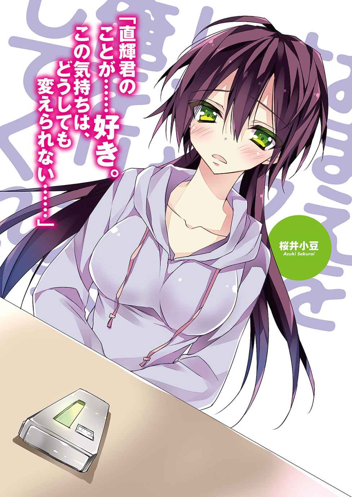

| おまえをオタクにしてやるから、俺をリア充にしてくれ！10 | |
| X ofおまえをオタクにしてやるから、俺をリア充にしてくれ！ | |
| 村上 凛 | |
| (2014) | |

おまえをオタクにしてやるから、
俺をリア充にしてくれ！10
村上 凛

富士見ファンタジア文庫
本作品の全部または一部を無断で複製、転載、配信、送信したり、ホームページ上に転載することを禁止します。また、本作品の内容を無断で改変、改ざん等を行うことも禁止します。
本作品購入時にご承諾いただいた規約により、有償・無償にかかわらず本作品を第三者に譲渡することはできません。
本作品を示すサムネイルなどのイメージ画像は、再ダウンロード時に予告なく変更される場合があります。
本作品は縦書きでレイアウトされています。
また、ご覧になるリーディングシステムにより、表示の差が認められることがあります。
口絵・本文イラスト あなぽん
１
大晦日。
今日は冬コミ三日目であると同時に、俺のバイト先の忘年会だった。
俺は様々な事情から冬コミに行くことは叶わず、バイト先の忘年会へと出席した。そこで中学時代の初恋の相手、及川絆と再会し、彼女と共に帰路についていた。
しかし──今はそれどころではない。
『着信 恋ヶ崎桃』
『着信 桜井小豆』
俺は自分の携帯電話のディスプレイに表示されたその文字を見て、飛び上がるほど驚いた。そしてすぐさま及川に別れを告げ、早足で歩きながら発信ボタンを押して折り返し電話をかける。
──小豆ちゃん。
いくら電話をかけてもメールをしても、一切連絡をくれなかった彼女。
クリスマス・イヴの夜、わけの分からないことを言って一方的に俺から距離をとった俺の彼女。
俺は彼女からの連絡をどれほど待ちわびていたことだろう。携帯からコール音が鳴り響く度に、俺の心臓の音はどんどん大きくなっていく。不安で胸が押しつぶされそうになる。この電話で......もし決定的な一言を言われたら......はっきりと別れを告げられたら......そう思うと、ずっと電話を待ちわびていたのに、彼女と話すことを強く望んでいたはずなのに、このまま電話に出ないで欲しい、とすら思ってしまう。
「......も、もしもし......」
次の瞬間。コールの音が鳴り止み、聞き慣れた、酷く懐かしくて愛おしい声が聞こえた。
「な、直輝......君？」
数週間ぶりに聞く、彼女の声。俺の心臓は、一層大きく高鳴る。
「......あ、小豆ちゃん......久しぶり......」
俺はなるべく冷静を保って、言葉を発した。
「やっと......電話、出てくれたね......」
「......っ、............ご、ごめんね......直輝君、今まで......ずっと、無視して......」
彼女は今にも泣いてしまいそうなか細い声で、俺に謝る。彼女に対して少なからず怒りの感情を抱いていたが、その声を聞いたらそんな感情はすぐにどこかへ吹っ飛んだ。
「い、いいんだ......今こうして、話してくれてるから......」
きっと彼女にも何か深い事情があるのだろう。
「直輝君......ありがとう」
「あ、ああ......いや............そ、それで......」
俺は言葉に詰まる。言いたいことはたくさんあるのに、何を言えばいいのか言葉が出てこない。
言いたいことはたくさんある、だけど、俺が彼女に一番伝えたいのは......『別れたくない。俺は今でも小豆ちゃんが好きだ』というありのままの自分の気持ちだった。言わないと......何を差し置いても、それだけは伝えないと。
「直輝君......あのね、大事な話があるんだけど......電話じゃなくて、できれば、直接会いたいんだ......。こんな時間で悪いんだけど、今から......出てこれるかな......？ 直輝君の家の近くまで、わたし、行くから......」
大事な話。その言葉を聞いて心臓が貫かれる思いだった。まさか、別れ話、か......？ 本格的な......？
「わ、分かった！ じゃあ俺今から......小豆ちゃんちの近くまで行くから！」
「......えっ!? い、いいよ、そんな......わたしがわがまま言ってるんだし、わたしの方からそっちに......」
「こんな遅い時間に外出歩いたら危ないって！ 俺小豆ちゃんちまでの道のり覚えてるし、今から行くよ！」
「なっ、直輝君......！ 相変わらず......優しいね」
小豆ちゃんが、優しい声で言う。そんな声を聞いてしまったら......愛しい気持ちがどんどん溢れてくる。
「分かった、じゃあお言葉に甘えて......」
小豆ちゃんが納得してくれたので、俺が小豆ちゃんの家の近くについたらまた連絡をするということになり、一度電話を切った。
来た道を戻り、再び駅から電車に飛び乗る。
一秒でも早く彼女の元に辿り着きたいという気持ちと、このままこの電車が永遠に彼女の元へ辿り着かなければいいのに、という二つの矛盾した気持ちが、俺の心を駆け巡った。
小豆ちゃんは、彼女の家の最寄り駅で待っていた。
俺の顔を見つけると、少し寂しげな笑顔を浮かべる。
「久し......ぶり......」
数日ぶりに見る、愛しい彼女の姿。こんな状況なのに、純粋に、久しぶりに会えて嬉しいなんて感情が俺の心を支配する。彼女に触れたい、なんて思いが溢れてくる。
「ごめんね、大晦日の、こんな遅い時間に呼び出しちゃって......」
「い、いや......全然......」
その時、彼女の左手の薬指がキラッと光ったのが俺の目に入った。小豆ちゃんは......俺がクリスマス・イブにあげた指輪を、つけていた。
......別れたわけじゃない......そう思っていたのは、もしかして俺だけじゃなかったのか......？
「ここじゃ落ち着かないから......ちょっと歩こうか」
「え!? あ、うん......」
小豆ちゃんの提案で、俺たちは駅の近くの公園へと移動した。
「ごめんなさい！」
公園に辿り着くなり、小豆ちゃんがものすごい勢いで俺に頭を下げて謝った。
「......え？」
いきなりのことで酷く動揺する。ごめん、って......それって、やっぱり別れようっていう話を......？
「クリスマス・イブの夜......せっかく直輝君が、楽しいデートを演出してくれて、わたしにはもったいないくらいの素敵なプレゼントをくれて、ものすごく幸せな日になるはずだったのに......わたしがあんなことして、台無しにして......本当にごめんなさい！」
「え？ あ、ああ......いや......」
「それだけじゃない......その後直輝君が何度もメールや電話をしてくれたのに、一方的に無視し続けて......本当に、自分でも最低だと思ってる。謝ったって許されることじゃないって......」
「い、いや......いいんだって......小豆ちゃんにも何か事情があったんだろうな、ってことは分かってるから......」
声が震える。確かに俺は、彼女の対応にものすごく傷ついた。だけど今はそれより、彼女が今何を思っているのか、どうしてあんなことをしたのか、今何を話そうとしているのか......そっちの方がよっぽど大事だ。早くそれを聞きたい。別に、謝ってもらいたくて今日ここに来たわけじゃない。
「今日の冬コミだって......直輝君が来られなかったのは、わたしのせい、だよね......。みんなで桃ちゃんを応援しに行くって約束したのに......わたしが、一人で行くなんて勝手なこと言い出したから、直輝君が気を遣って......」
「えっ......!? あ、ああ......それは違うよ......」
「......え？」
「いや、さ......すげえ情けない話なんだけど......俺、冬コミに行く金がなくて、行けなかっただけなんだ......」
「そ、そうだったんだ......。......っ！」
小豆ちゃんはそう言ったあと、はっとした顔になって自分自身の手元を見る。やばい、小豆ちゃんに指輪のプレゼントを買ったから金がなくなった、ってことに気付かれたか......？ なんでバカ正直に言ってしまったんだよ俺！ また小豆ちゃんに余計な気を遣わせてしまうじゃないか......。
小豆ちゃんが自分の指を見た後切なげな顔で俺を見て、何かを言おうとしたが、俺がそれを遮って先に話し出す。
「いやさ、そんなことより......！」
話題を逸らすため、ということもあるが......俺は早く本題に入りたかった。
「俺は今日、小豆ちゃんの気持ちが知りたくてここに来たんだ」
俺の言葉に、小豆ちゃんが驚いた顔で俺を見る。
「えっ......!? ......あ、えっと......あの......」
彼女は何かを言おうとしているが、うまく言葉が出てこないようだ。俺は軽く深呼吸をしてから、意を決して口を開く。
「俺は......あ、小豆ちゃんのことが、今でも好きだから......。別れたくないから......」
「......！」
その言葉は、俺が今日何を差し置いても彼女に伝えたいと思っていた言葉だった。
小豆ちゃんは再び驚いた様子で俺の顔を見て、そのままじっと俺を見つめ続けた。その顔は、とても切なそうに見えた。
「直輝......君......」
彼女の瞳には、涙が溜まっていた。俺は彼女が次に口にする言葉を待った。心臓が張り裂けそうだった。その時間が永遠にも感じられた。
「これ......っ」
小豆ちゃんが次に発した言葉は、とても短いものだった。言いながら、彼女は自身の鞄から取り出した、ケースに入ったＣＤ‐ＲＯＭを俺の前に差し出した。
「え......？ これは......？」
「こ、この中に......わたしの気持ちが、全て入ってるから......。これを聞いた上で、また......直輝君の気持ちを聞かせて欲しいの」
「え......？」
小豆ちゃんの震える手から、俺はＣＤ‐ＲＯＭを受け取った。この中に、小豆ちゃんの気持ちが入ってる......？ どういうことだろう。それは、今ここでは言うことができない、ということなのだろうか。これを聞いた上で、俺の気持ちを聞きたい......？ 何が入っているのかは分からないが、何を聞いたって、俺の気持ちは変わらないと思う。俺は......小豆ちゃんが好きだ。小豆ちゃんと別れたくない。
一瞬のうちに、たくさんの想像が頭の中を駆け巡る。『直輝君のことが好きじゃなくなったから、別れたい』そんな小豆ちゃんの言葉が録音されていたら......。いやしかし、もしそうだとしたら、『これを聞いた上で直輝君の気持ちを聞かせて欲しい』なんて、言うだろうか？ それにそんな話なら、今ここで言えばいいことじゃないか。だけど心優しい小豆ちゃんのことだから、目の前で俺が傷つくのを見たくないのかもしれないし......。
「わざわざ来てくれて、ありがとう......。わたしの用件は、これで終わり」
「えっ......あ、ああ......うん......」
「それじゃあ......ね。あ......直輝君、......よいお年を」
小豆ちゃんは寂しげな笑顔を浮かべて、俺にそんなことを言って公園を出て行こうとする。
「あ、お、遅いし......送るよ、家まで......」
「え？ あ、大丈夫だよ......直輝君こそ、気をつけて帰ってね」
びっくりするほどあっけなく、俺と小豆ちゃんの再会の時間は終わってしまった。その間、ものの五分くらいだろうか。
帰りの電車で、俺は彼女から渡されたＣＤ‐ＲＯＭを見つめながら、様々な思いを巡らせた。一刻も早く、帰ってこれを聞きたい。ものすごく怖いけど......それでも、彼女の気持ちを知りたい。
電車に乗っている間に、一つ忘れていたことを思い出した。
そういえば......恋ヶ崎からも電話が来てたんだった。小豆ちゃんのことで頭がいっぱいで、あいつには悪いが電話が来ていたことをすっかり忘れていた。
電車を降りてから家まで向かう間、ＣＤ‐ＲＯＭのことが気になって気が気じゃない状態だったが、急用かもしれないし、一応恋ヶ崎に電話をかけ直した。
しかし何度かコールが鳴った後に、留守電になってしまった。一体、用件は何だったのだろう。今日あいつは冬コミで二階堂さんのサークルの売り子をやっていたはずだ。電話がきていたのは七時頃だから、冬コミはとっくに終わっている時間だ。ということは......俺が冬コミに来なかったことを不思議に思ってかけてきた、とか？ まあ、大事な用件だったらまたかけてくるだろう。あいつから連絡が来るなんてここ最近滅多にないので、一体何の用件なのか気になった。
「ただいま！」
「あ、直輝、遅かったわね～。年越し蕎麦食べるわよねえ？」
「直輝！ 紅白、リンホラの出番終わっちゃったよ!? こんな時間まで何してたわけ!?」
オカンと妹の声を無視して、俺は自分の部屋へと一目散に駆け込んだ。
すぐにパソコンを立ち上げて、ＣＤ‐ＲＯＭを入れ、イヤフォンを耳に装着する。すぐにＣＤ‐ＲＯＭが読み込まれ、画面にフォルダが表示される。
フォルダの中にはファイルが二つあった。どちらも音声ファイルであり、タイトルは『1.mp3』と『2.mp3』。とりあえず、『1.mp3』の方をクリックする。
イヤフォンから聞こえてきたのは、小豆ちゃんの声ではなかった。音楽が流れてから、人が話し出す。
『はい、今週もボーカロイドラジオ「エレラジ」の時間がやって参りました！』
ボーカロイドラジオ......？ どうやらラジオ番組を録音したもののようだ。このＭＣの男性って、確か小豆ちゃんが好きな声優だよな。
困惑しながら聞き続けていると、ＣＤ‐ＲＯＭのケースを開けた状態のところに付箋が貼ってあるのに気付く。そこには『1.mp3のファイル→13分38秒～』という文字が書かれていた。これは......小豆ちゃんが書いたのだろうか？ 俺はその付箋の文字に従って、ラジオの音声ファイルの時間の横軸を、13分30秒あたりまでスライドさせる。
『あははは、そうですよねぇ～......。あ、ここでもう一件リクエストです。東京都のラジオネーム・ももたそさん、高校一年生の女の子から。品川Ｐ作詞作曲、歌い手は響音ルルで「I am your princess.」です。どうぞ！』
......『I am your princess.』......？ この曲って、文化祭の時、恋ヶ崎が鈴木のバンドで歌った曲だよな。聞き慣れた曲、『I am your princess.』が流れ始める。
小豆ちゃんは俺に、『この中にはわたしの気持ちが全て入ってる』と言ってこのＣＤ‐ＲＯＭを渡した。だからてっきり、俺はこのＣＤ‐ＲＯＭの中に小豆ちゃんが自分の気持ちを語ったものが録音されているのかと思っていた。だが実際、入っていたのはボカロのラジオ番組だった。ここまでだと、一体小豆ちゃんがどういうつもりでこの音源を俺に渡したのか、さっぱり分からない。
『いや～、可愛らしい曲ですね～！ ももたそさんからのお便りを読みます。「初めまして！ ボカロの音楽が好きで、毎週楽しく聞いています。私がリクエストしたいのは、品川Ｐ作の『I am your princess.』です。高校の文化祭のステージでこの曲を歌いました。そのとき私は軽音部の男の子のことが好きで、その軽音部の男の子が弾くギターでこの曲を歌うことができてすごく幸せでした」......うわー、青春ですねー！』
......え？ 文化祭でこの曲を歌った......？ 軽音部の男の子のことが好きだった......？ おい、ちょっと待てよ......これって、まんま恋ヶ崎のことじゃねえか！ このリクエスト主の......ももたそ、だっけ？ これってもしや......恋ヶ崎なのか!? そういえばさっき高校一年生の女の子とか言ってたし......。ここまで同じ境遇で同い年の人間なんているわけがないし、どう考えても恋ヶ崎本人としか思えない。あいつ、いつの間にラジオにリクエストなんて応募してたんだ。しかもボカロラジオだなんて、あいつもうすっかりボカロオタになってるな。
気を取り直して、ラジオの続きを聞く。
『ええっと、このお便りには続きがあります。「だけどその文化祭の後くらいから、私は軽音部の男の子ではなく、今まで私の恋をずっと応援してくれていた男友達のことが気になり出しました」......』
......え？
ラジオのＭＣのセリフに、俺の頭の中が一瞬で真っ白になった。
『「その人はずっと私の恋に協力してくれて、自分が辛いときでも私のことを考えてくれて、いつも優しくて、私が困っているときにはいつも身を挺して助けてくれて、それまでにも何度も好きになりそうになったことはありました。だけどその人はずっと違う人のことが好きで、そのことを分かっていたので、絶対に好きにならないようにしていました」......うわー！ なんて切ない恋なんでしょう!?』
恋ヶ崎は、一体......何を言ってるんだ？ 誰のことを、綴ってるっていうんだ......？
『「それに私には、もう一つ彼を好きになってはいけない理由がありました。それは、私が大好きな友達が、彼のことを好きだったからです。絶対に友達を裏切りたくないし、私自身にも、その友達と彼に幸せになってもらいたいという気持ちもありました。二人のことが大好きだし、二人は趣味も合うのでうまくいくだろうと思っていたからです。二人はそれから、付き合い始めました。やっぱり辛かったけど、そんな気持ちは絶対に出さないようにしました。その時、私はやっぱり彼のことが好きだったんだと確信しました。今この『I am your princess.』という曲を聞くと、彼のことばかり思い出してしまいます」......うわー、切な！ 切なすぎますよこれ！ この子、まだ高校生なのにどんだけ辛い恋経験してるんですか！』
俺はそこでラジオの音声を一時停止にして、パソコンの前で放心した。
何なんだよ、今の話......。
恋ヶ崎の、作り話か？ いや、でも......それにしては、全部......当てはまるんだよ。あいつの境遇に......。
噓だろ......。だってあいつは、鈴木のことがずっと好きで......。
鈴木とうまくいってるから、俺に協定関係を解消しようって言ってきて......。
────恋ヶ崎が、俺のことを......好き、だった......？
俺はもう何も考えることができなくなって、そのまま自分の部屋の床に倒れ込んだ。とてもじゃないがそんなこと、信じられなかった。
ふと、ＣＤ‐ＲＯＭに入っていたもう一つのファイルのことが頭に浮かぶ。そうだ、もう一つファイルがあったんだ。あっちには、一体何が入ってるんだ？
俺は慌てて起き上がると、もう一つの音声ファイル『2.mp3』をクリックした。すぐにファイルが再生される。
『直輝君......１ってタイトルのファイルは聞いてもらえた、かな？ 聞いてもらえたんだと思ってこれから話すから、先にこっちのファイルを開いちゃってたら、一度停止して１の方を先に聞いてね』
そこには、小豆ちゃんの声が吹き込まれていた。
『色々、振り回してしまってごめんなさい。聞いてもらったラジオは、好きな声優さんがＭＣをしてるから、毎週予約録音して聞いてたんだ。桃ちゃんと話しててラジオの話題なんか出たことなかったし、桃ちゃんにはわたしがこのＭＣの声優さんが好きだって言ったことないから、桃ちゃんはわたしがこのラジオを聞いてるだなんて思わなかったんだろうね。それで......このラジオの「ももたそ」って......どう考えても、桃ちゃんのことだと思わない？ このラジオを聞いたとき、すごくびっくりした』
小豆ちゃんも、不意打ちでこのラジオを聞いて驚いたんだ......。今の俺と同じように。
『だってわたし、桃ちゃんは今でも鈴木君のことが好きなんだって思ってたんだもん。だけどね、考えてみたら、桃ちゃんが直輝君のこと好きかもしれないなって思ったことは、何度かあったんだよ。だって二人はすごく仲が良かったし、あの男子が苦手な桃ちゃんが、直輝君にはあんなに心を開いてるんだもん。桃ちゃんの好きな人は鈴木君、その前提がなかったら、絶対桃ちゃんは直輝君のことが好きなんだろうな、って思ってたと思う』
小豆ちゃんの言葉を、俺はただ呆然と聞いていた。
『思い返してみれば桃ちゃんは今まで、わたしと直輝君の仲を取り持つようなことばかりしていたよね。それは、わたしが直輝君のことが好きって、桃ちゃんに話してたからなんだ。だけど本当は、桃ちゃんも......直輝君のことが好きだった。直輝君のことが好きなのに、自分の気持ちを押し殺して、わたしのために、直輝君との仲を取り持ってくれてた......』
恋ヶ崎が、俺と小豆ちゃんの仲を取り持っていた......？ ......確かに、言われてみれば、あれはそうだったのかもしれない、と思える出来事はいくつかある。俺の誕生日パーティーも、本当は恋ヶ崎が企画して中心となって準備を進めてくれていたのに、あいつは『小豆ちゃんが企画した』と噓をついたのだ。それもきっと、小豆ちゃんと俺の仲を取り持つために......。
『このラジオを聞いた後、桃ちゃん本人に確かめたんだ。ラジオ聞いたんだけど、「ももたそ」って桃ちゃんだよね？ あの話は本当なの？ って。そしたら桃ちゃんは、「リクエストを読んで欲しかったから、本当の話と噓の話を混ぜた。自分の恋を応援してくれてた人のことを好きになった......って部分は噓だから」なんて言うんだけど......そのときの桃ちゃんすごく動揺してたし、わたしには噓と思えなかった。桃ちゃんは今......本当に、直輝君のことが好きなんだと思う。思い返してみれば、わたしと直輝君が付き合いだしてから、少し桃ちゃんの態度が変だな、って思うことが何度かあったんだ。もっと早く、気付いてあげれば良かった......』
「............」
『自分の気持ちを押し殺して、わたしと直輝君の仲を取り持ってくれた桃ちゃんのことを思ったら......そんな桃ちゃんを差し置いてわたしだけ幸せになるなんてできない。わたしはそう思って、クリスマス・イヴの日......直輝君に、あんなことを言ってしまったの。直輝君にしてみたら、本当にわけが分からなかったと思うし、困らせて傷つけてしまったよね』
小豆ちゃんは、恋ヶ崎のことを思って......『直輝君と距離を置いて一人になりたい。直輝君と一緒にいたらダメ』......そんな風に、言ったのか......。
それじゃあ、俺のことを嫌いになったりしたわけじゃなかったんだな......。その事実を知ることが出来て、純粋にめちゃくちゃ嬉しかった。
『わたしは桃ちゃんの気持ちを知って、すっごく悩んだ。わたしのためを思って身を引いた桃ちゃんのことを思ったら、たまらない気持ちになった。わたしは今まで何を見てたんだろう、どうして桃ちゃんの気持ちに気付いてあげられなかったんだろう......って。桃ちゃんに辛い思いをさせて、わたしばっかり幸せになっちゃいけない、そう思った......。どうしたらいいのか、自分の中でなかなか結論が出なかったから、たくさん直輝君が連絡してくれてるのに、何も返すことが出来なかった。なんて言ったらいいか、分からなかったから......本当にごめんね』
小豆ちゃんは、俺が知らないところでずっと悩み続けていたのか......。
『だけどこの数日間、ずっと悩んで、考えて......今日、直輝君と一緒に行く約束だった冬コミで、隣にいるはずだった直輝君がいなくて......それは紛れもなくわたしのせいで......わたし、何やってるんだろう、って思った。一度は身を引いて、直輝君のこと諦めようかとも思ったけど......そんなの、やっぱり......無理だよ......。わたしやっぱり、直輝君のことが......好き。この気持ちは、どうしても変えられない......』
小豆ちゃんの声は、涙ぐんでいるようにも聞こえた。
小豆ちゃんの『好き』という言葉が、強く俺の胸に響く。
『だから......今度、改めてもう一度、直輝君に告白します。......正直、直輝君が今どう思っているのか、知るのが怖い......。だから心の準備ができるまで、少し時間がかかってしまうかもしれないけど......待っててもらえるかな？ そのときまでに、直輝君も返事を決めておいて欲しいの。......桃ちゃんの気持ちを知った上で......改めて、直輝君の気持ちを聞かせて下さい』
「......っ！」
そこで、小豆ちゃんの音声ファイルは終了した。
「......。............」
俺の頭の中は真っ白になる。
今まで、ずっと知りたくて仕方がなかった小豆ちゃんの気持ちを、知ることができた。
小豆ちゃんは俺のことを嫌いになったわけじゃなかった。むしろ......今でも好きだと言ってくれた。すごくすごく、嬉しかった。思わず目頭が熱くなるくらいだった。
だけど......それ以上に驚いたのは......。
今、俺の心の中を支配しているのは......。
「こ、恋ヶ崎が......」
俺のことを、好きだった......？
ラジオで読まれた、あいつの送った文章を一つずつ思い返す。あいつは俺のことを......あんな風に、思っていたのか？
『いつも優しくて、困ったときには助けてくれる』......って、なんだよそれ......。
『何度も好きになりそうになったけど、絶対に好きにならないようにしていた』......？
恋ヶ崎......この文章は、本当の本当にお前が送ったのか？ お前の......本当の気持ち、なのか......？
いつも罵倒してきただろ、お前......。俺のこと、キモいとか、オタクとか、ダサいとか、めちゃくちゃに言ってただろ......？
『今この「I am your princess.」という曲を聞くと、彼のことばかり思い出してしまいます』
あいつは、ラジオに送った文章にそんなことも綴っていた。
俺はすぐさまネットからニコニコ動画を開き、お気に入り登録している『I am your princess.』の動画視聴ページへと飛ぶ。
再生ボタンをクリックすると、曲のＰＶが始まる。何度も聞いているこの曲だけど、今までほとんど歌詞を意識して聴いたことがなかったので、どんな歌詞なのか全然覚えていない。今一度、どんな歌詞だったのか確かめたくなった。
前奏が終わり、やがて歌が始まる。
『気がつけばいつだって 憎まれ口を叩いてた
理想のタイプとはまるで真逆で
確かにいい奴なんだけど 全然恋愛対象外で
ただの男友達だったはずなのに
いつからだろう？
君が他の子と仲良くしてるとこみると
どうしてか 胸が痛むの
君の優しさも笑顔も独占したいなんて
私きっとどうかしてるわ
やっと気付いたの 君が私の王子様だって
ずっと側にいて欲しいのは たった一人だった
君だけのお姫様になりたいよ
我が儘な願い 叶えてくれませんか』
「............」
俺はあまりのことに、放心してしまう。
『彼のことばかり思い出してしまいます』
恋ヶ崎はこの曲を聴いて、俺のことを思い出していたと言う。
あいつはこの曲を聴きながら、俺のことを思っていたというのか？
「噓......だろ......？」
胸の奥から、熱いものがこみ上げてくる。
ずっと胸の高鳴りが収まらない。
不意に、俺の携帯のバイブ音が部屋に鳴り響いて、俺は驚いた。
携帯のディスプレイを見て、俺は更に驚くこととなる。
『着信 恋ヶ崎桃』
思わず、携帯を床に落としそうになってしまう。
なんてタイミングで......。いや、俺がさっきかけ直して、恋ヶ崎は電話に出なかったから再度かけてきただけなのだとは思うが......。
俺は慌てて取り繕って、電話に出ようとする。
だけど......今、よりによって恋ヶ崎のことでこんなに頭が酷く混乱しているときに電話に出たとして、まともに話すことなどできるのだろうか？
......いや、無理だ......。どう考えても俺には、今の自分の状態を隠して恋ヶ崎と普通に話すだなんてそんな器用な真似、できるわけがない。
何度かバイブが鳴った後、やがて鳴り止んだ。
──どうしよう。もう少ししたら、かけ直すか？ いや、もう少し時間が経過したところで......俺の混乱は少しは落ち着くだろうが、それでも、恋ヶ崎と何事もなかったかのように話すことなんて......できるのか？
恋ヶ崎が何の用で俺に電話をかけてきているのかは気になるが......。
なんてことを考えて何も出来ずにいたら、一件メールが入った。
......送信者、恋ヶ崎桃。
『なんで二回とも電話に出ないのよ！ 今日、冬コミにあんたが来ないから、不思議に思って小豆ちゃんに聞いたら今の状況教えてくれたんだけど......このまま小豆ちゃんと別れるなんて絶対ダメだからね!?』
恋ヶ崎......。
こいつが俺のことを好きだなんて......やっぱり、とてもじゃないが信じられない。そうだ、ここのところこいつはいつもこうやって、俺と小豆ちゃんの仲を応援していた......。
だけど、あいつは......本心では......。
俺はそのメールになんて返信をしたらいいか分からず、携帯の前で思わずうずくまった。
......ダメだ。このままじっとしていたら、混乱のあまり気が狂いそうになる。
もういてもたってもいられなくなり、気がつけば俺は部屋から飛び出していた。
「直輝？ もうすぐ紅白終わるぞ？」
「......って、直輝、こんな時間に外出るわけ!?」
「どこ行くの？ 彼女と初詣にでも行くの？」
慌ただしい俺の姿を見て、テーブルを囲んでいる親父、あかり、オカンはポカンとしている。
俺は無意識のうちに、コートを着て外に出る準備をしていた。
だが......一体どこへ行こうとしているのか、自分でも分からない。
とにかく、じっとしていられなかったってだけだ。
「ちょ、ちょっと......走ってくる！」
「......はあ？」
「ちょっ、な、直輝!?」
こいつ頭おかしくなったのか？ という反応で俺を引き止める家族を無視して、俺は外へ飛び出した。
そしてそのまま、行く当てもなく走り出す。
次々と、今までの恋ヶ崎の様子が、頭の中を過る。
──あいつは、俺が長谷川に振られたとき、どんな気持ちで俺のことを抱き締めて慰めてくれたんだ？ その次に会ったとき、何事もなかったかのように声をかけてきたのは......もしかして、精一杯、あいつなりに無理してたんじゃないのか？
あいつに、『あんたにとってあたしなんて、ただの協定関係を結んでる相手なんじゃないの？』って聞かれたとき、俺は......。
『大事な友達だ』──そう、答えた。
そのときあいつは、今まで俺のことを散々質問責めにしていたっていうのに、急に黙ってしまって......。
『──そう』
それだけ短く答えて、光彩を失った瞳で、呆然としていた。
あのときの恋ヶ崎の表情は、今でも鮮明に思い出せる。
あのときあいつは......一体、どんな気持ちだった？
もっと真剣に考えるべきだったんだ。どうして、あいつがあんなに必死に、怒りながらも、『恋ヶ崎が俺にとってどんな存在か』ということを、問いただそうとしたのかを。
俺があんな風に答えてしまったせいで、俺は自分でも気付かないうちに......恋ヶ崎との関係を、そこで終わらせてしまっていたのだろうか。だって思い返してみたら、あの日からなんだ。──恋ヶ崎が、俺のことを避け始めたのは。
もしかしたらあいつは......あのとき既に、俺のことを思ってくれていたんじゃないのか？ だとしたら......一体、俺の言葉でどれほどあいつを傷つけてしまったのだろう。あのときの恋ヶ崎の表情を思い出すと、今でも胸が酷く痛む。俺が、もっと違う答えを返していたら......俺とあいつの関係は、今とは違っていたのかもしれない。しかし、いくら悔いたって、時を戻すことは出来ない。
気付けば、走りながら俺は泣いていた。
「恋ヶ崎......」
小さな声で、その名を呟く。
あいつの名前を呼びたい。今すぐあいつに会いたい。あいつの声が聞きたい。
だけど......。
会ってどうする？ 今の俺に、何ができる？
俺は今......まだ、小豆ちゃんと別れたわけじゃない。
俺はまだ......小豆ちゃんのことが好きだ。それに小豆ちゃんだって、まだ俺のことが好きだって言ってくれた。これから......もう一度俺に告白してくれると、言った。
小豆ちゃんの笑顔。恥ずかしそうな顔。クリスマス・イヴのときのとても辛そうな泣き顔。全てが、昨日のことのように瞼の裏に浮かんでくる。思い出すと、愛しい気持ちが溢れてくる。
もう小豆ちゃんを悲しませたくない。俺はそう思ったじゃないか。今でも、その気持ちは変わらない。
とにかく俺は、走った。何も考えられなくなるくらい。少しでも立ち止まったなら、いろんな思いが溢れて押しつぶされそうになる。だから、立ち止まることは許されない。
「はあ......はあ......はあ......」
......どれくらい走ったのだろう。
涙はすっかり風に乾いていた。
気がつけば、もうあまり見慣れない土地へと来ていた。電車の路線で言えば、四、五駅くらいは走ったのではないだろうか。その間、ほとんど止まることなく走り続けていた俺は、疲労のあまり近くの電柱へと寄りかかる。
「はあ、ぜえ......はあ......」
呼吸することすら困難になり、水を買う金くらい持ってくれば良かった......と後悔しながら休んでいたところ、どこからか鐘の音が聞こえた。
......除夜の鐘。そうか、今、年を越したんだ......。
闇雲に走ったところで、何も解決することはなかった。自分の中で、何の答えも出なかった。だけど俺は今、走るということ以外で自分の中のモヤモヤした感情を取っ払う術を知らなかった。
２
俺が家に帰ってきたのは、結局明け方の四時過ぎだった。
あれから俺は、とにかく走って、走って、自分の足がもう動かなくなるくらいまで走り続けた。疲れ切って、もうダメだ......帰ろう、と思ったとき、大晦日だけはＪＲが動いているとはいえ、電車賃を持っていない俺は、今来た道を戻らないと家に帰れないという当たり前すぎることに気付いた。しかしもう走る体力などなかったため、長い時間をかけて来た道を歩いて帰ってきたのである。
鍵も持たずに家を出てしまったため、鍵をかけられていたらどうしよう......と不安になったが、幸いなことに非常に不用心ながら我が家の玄関の鍵は開いていた。俺が飛び出して行ったので、家族が開けたままにしておいてくれたのだろう。
鍵をかけ、リビングの扉を開けると、当たり前だが消灯しており、家族は全員就寝していた。
リビングの隣にある寝室で寝ている妹と母親を起こさないように、小さい灯りだけ点け、トイレへ行ったり水を飲んだりしていると、何者かが暗闇の中で身体を起こした。
「直輝......？」
それは、あかりだった。
「うお!? お、起こしちまったか？」
「......ずっと起きてた。なんか寝られなくて」
「え、そうなのか？」
あかりは布団から這い出ると、リビングへとやってくる。
二人でソファーに並んで座った。
「今までずっと走ってたわけ？」
オカンを起こさないように、小声で俺に質問してくるあかり。
「え？ あ、ああ......まあ......」
「何してんの？ ついに頭おかしくなった？」
「なっ......ちげえよ！ ちょっと色々......考えることがあって......」
「......ふうん......。......小豆さんのこと？」
あかりの言葉に、ギクリとする。
「図星なんだ。まだ喧嘩してんの？」
「え、あ......うん、まあ......」
「なんで喧嘩したの？ どうせ、直輝が変なことしたんでしょ」
「なっ......ちげえよ！ つーか、なんでそんなことまでお前が気にしてんだよ......」
「直輝がダメダメすぎるから心配してあげてんじゃん」
「よ、余計なお世話だっつーの！」
「あ、あかりは......直輝の妹なんだから......直輝の行く末を見守る義務があんの！」
「なっ......なんだそりゃ!? お前は俺の保護者か!?」
あかりのわけの分からない発言に、思わず吹き出しそうになる。
「あかりに心配されたくないんだったら......ちゃんと、心配かけないように、いつでも楽しそうにしててよ......」
「......は、はあ......？」
「兄のくせに、いつも妹に心配ばっかりかけて......だからあかりは、直輝のことがいつも気になって仕方ないんじゃん......」
「な、何言ってんだ、お前......」
「あかりに黙って、勝手に彼女なんか作って......超、超～～～～ムカつくけど、でも......それでも、百歩譲って援してあげるって決めたんだから......せめて、幸せになっててくれないと......あかりが......困......る」
俺はあかりの言葉に困惑する。眠たそうにウトウトしているので寝ぼけ半分なんだろうとは思うが......。突然何を言い出すんだよこいつは。面と向かってそんなこと言われると、兄妹とはいえ照れくさくて仕方ない。これじゃあ、まるで......。
「お前、今までそんな風に俺のこと、心配してた......のか？ 自分で何言ってるか分かってんのか？ その言い方じゃ、まるでお前が......ブラコン......みたいに聞こえるぞ」
俺の言葉に、あかりの顔がカッと赤くなった。一瞬で目が覚めたらしい。
「ブ......ブ、ブラ......」
真っ赤な顔で、すごい形相で俺を睨み付けてくる、我が妹。やばい、ブラコンなんて......さすがに言い過ぎた。そんなわけない、調子に乗るなってブチギレられる......
「ブラコンで何が悪いんだ────っ!?」
「......!?」
あかりが叫んだ言葉に、俺は驚きのあまり絶句した。
「だ、だだっ......大体、直輝のせいなんだからね!? クラスの男子に告られたりしても......直輝ほどオタ趣味が合って直輝ほどあかりのことちゃんと分かってて、直輝ほど......や、優しい男子なんて、全っ然いないしっ！ あかりがクラスで男嫌いとか言われんのは......な、直輝のせいなんだからぁっ......！」
「......!? !? あ、あかり、お前......」
聞いてるこっちが恥ずかしくなってくる。こいつ......ほ、本当にブラコン......だったのかよ。いつもあんなに俺のこと罵倒してきたくせして......。大分気恥ずかしい。ほんと、何考えてんだよこいつ......。
............しかし、あかりがブラコン、ねえ......ほう......なるほど。......い、いや別に、実の妹からそんなこと言われても、ぜ、全然、嬉しくなんかないけどな！
「な......直輝の......せいで......」
あかりは話しながら、眠たそうにウトウトしている。そりゃあそうか、今はもう四時過ぎだ。いつも早い時間に布団に入ってるこいつは眠くて仕方がないに違いない。
「あーほら、分かったからもう、寝るぞ。俺も寝るからお前も寝ろ」
「ちょっ......子供扱いしないでよ......！ まだまだ全然起きてられる......し......」
「いやいやいや、もう半分夢の中だろお前......ほら」
あかりの手を引いて、布団まで誘導する。
あかりは大人しく布団に入ると、あっという間に眠りについた。眠たくて仕方がなかったのだろう。眠れなかったとか言ってた割に、めちゃくちゃ眠そうだったな、こいつ。
......まさか、俺が帰ってくるのを待って......？ ......いやいやいや、そんなことあるわけない......。
こんな幼いガキんちょの妹にまで心配かけてちゃ......兄貴失格だな......。
それから俺も、歯を磨いてから自分の部屋へ行き、ベッドに入った。すぐに強い疲労感に襲われ、気を失うかのように眠りについた。
＊
翌日。
オカンに朝九時頃に起こされ、顔を洗ってリビングへと行く。
疲労感と睡眠不足のためまだまだ布団の中にいたかったが、ここで二度寝をしてはお年玉がもらえない......と思い、眠い頭を無理矢理起こした。
「あ、直輝、おはよう」
「あ......あけましておめでとうございます......」
既にリビングにいた父親と母親に新年の挨拶をする。これは毎年恒例で、挨拶をしないとお年玉がもらえないのである。
「あけましておめでとう。昨日は何時に帰ってきたんだ？」
「う、うーん......よく覚えてないけど、多分まあ一時とか......」
親父の質問に、本当のことを言ったら怒られると思い、適当に噓を言って誤魔化す。
お年玉をもらい、礼を言って財布にしまう。やがてあかりも母親に無理矢理起こされて起きてきて、家族全員で母親が作ったおせち料理と雑煮を食べる。
あかりは俺以上に眠そうで、おせち料理を食べながらウトウトして、オカンに怒られていた。まあ、俺以上に夜更かしに慣れてないあいつが、あんな時間まで起きてたら、そりゃそうなるよな......。
朝食後、家族全員で初詣へと出掛ける。毎年恒例の行事だ。父親の運転する車で、毎年初詣に行っているこの辺りでは一番大きいと思われる神社へと向かう。
「直輝ってば、昨日はなんだってあんな時間に走りに出たのよ？」
「............」
「ちょっと直輝、聞いてるの!?」
「......えっ!? な、何!?」
車の助手席に座る俺に、後ろの席のオカンが声をかけていたようだが、惚けていて全然聞こえていなかった。
......昨晩は、あまりに疲れていたためにすぐに眠ってしまい、考えずに済んだのだが......。今朝から、おせちを食べているときも、何をしているときも、ずっと......俺の頭の中は昨日から引き続き混乱したままだった。
......恋ヶ崎が、俺のことを好きだったという事実......。
そのことで、脳内は埋め尽くされていた。
朝起きたときは夢だったのかとさえ思ったが、小豆ちゃんからもらったＣＤ‐ＲＯＭがパソコンの近くに置いてあったのを見て、夢じゃなかったことを確認した。
「もう、どうしちゃったのよ直輝は......あかり、何か知ってる？」
「......さあ。知らない」
やがて、神社へ辿り着いた。いつものように、参拝した後にお守りを買い、家族全員でおみくじを引く。
俺のおみくじは......。
「げっ!?」
「え、直輝、凶!?」
新年から、なんて縁起が悪いんだよ......。
それぞれの項目を読む。当然、どれもいいことが書かれていなくて凹んだのだが、一番気になったのは......。
『恋愛 辛い別れを迎えるでしょう』
「なっ......!?」
辛い別れ......？ それって、一体誰との別れを意味してるんだ......？
俺がおみくじの酷い結果にショックを受けて、その場で立ち尽くしていると......。
「えっ......？ 柏田......!?」
「............え？」
俺は、目の前の光景に自分の目を疑った。
そこには......俺が昨日から何度も脳内に思い浮かべている人物の姿が、あったからだ。
一瞬、あまりにそいつのことばかり考えていたので、幻でも見ているのかと思った。
「あ、桃さん！」
「あら、直輝のお友達？」
だけど......あかりとオカンが反応している様子を見て、俺が見ているのは幻なんかではないと分かる。
「......こ......、恋ヶ......崎」
そう、俺の前方には、晴れ着姿の恋ヶ崎が立っていたのだ。
俺は恋ヶ崎の姿を前にして、驚きのあまり何も言えなくなる。
まさか、昨日からずっと考え続けていた相手に会ってしまうだなんて......こんな偶然、あっていいのか？
気付くと、恋ヶ崎の周りには恋ヶ崎のご家族がいた。うちと同じように、家族で初詣に来ていたようだ。
久しぶりにその姿を見た恋ヶ崎の妹の柚子ちゃんも、俺を見て「かしわだ！ かしわだだ～っ！」なんて騒いでいる。その隣には晴れ着姿の、恋ヶ崎そっくりの、恋ヶ崎より少し年上に見える綺麗な若い女性がいて、恋ヶ崎のお姉さんなのだろうか、と咄嗟に思う。その後ろには、恋ヶ崎のご両親がいた。俺はどちらにも一度会ったことがあるので、慌てて会釈をする。
何か言わないと......と思っていたそのとき、目の前に恋ヶ崎の姿があって、俺は驚きのあまり声を上げそうになった。俺が恋ヶ崎のご家族を見て惚けている間に、俺に近付いてきたようだ。
「柏田......話があんだけど」
恋ヶ崎は晴れ着姿を台無しにするような仏頂面で、俺に声をかけた。
しかし怒った顔であっても、晴れ着姿の恋ヶ崎は......見とれるほどに、美しかった。
＊
俺と恋ヶ崎は、少しの間、互いの家族と別行動をすることになった。
互いの家族が出店で食べ物を食べている間、俺に『話がある』という恋ヶ崎と俺は、二人で家族らから離れたところまで移動した。
話って、なんだろう......。きっと、昨日の電話の件なんだろうと思うけど......。
俺は今日恋ヶ崎と遭遇してから、ただの一度も......恋ヶ崎と、目を合わせられずにいた。目を合わせたら、心臓が止まってしまうんじゃないか、というほどだった。恋ヶ崎と一緒にいるだけで......心臓の高鳴りがずっと収まらない。
本当の本当に、未だに信じられない。こいつが、俺のことを......。
「で、なんで昨日電話に出なかったわけ？ しかもメールも返してこないし！」
当然俺がそんな状態であることなど知らない恋ヶ崎は、相変わらずの仏頂面で、俺に対して怒りを露わにしている。
「え......あ、ああ......わ、悪かったよ......」
「謝って欲しいんじゃなくて、なんで、って聞いてるんだけど」
「え......いや、その......昨日お前から電話もらったときは......既に寝ててだな......」
「......ふーん......。で、メールの返事は？」
「......えっ!?」
「メール、読んだんでしょ？ 小豆ちゃんとのこと......これからどうするつもりなわけ？」
「え、あ......えっと......」
「メールでも言ったけど、このまま別れるとか絶対ダメだからね!? 小豆ちゃんになんて言われたのかは、小豆ちゃんが教えてくれなかったから知らないけど......小豆ちゃんがあんたと距離をとりたいって言ったのは、別にあんたのこと嫌いになったってわけじゃないから！ 小豆ちゃんは......今でも、あんたのこと好きなの。だから、絶対別れたりしちゃだめ！」
恋ヶ崎の話を聞いて、思う。恋ヶ崎は......小豆ちゃんと俺が距離をとっているということは小豆ちゃんから聞いて知っているようだが、その後、小豆ちゃんが自分の本当の気持ちと、それに恋ヶ崎の気持ちも俺に伝えたということは、一切知らないようだ。
「......あ、ああ......」
「とにかく、一度ちゃんと話し合った方がいい！ ......って、あんた、あたしの話聞いてんの!?」
「......聞いてるよ......あ、あのさ......恋ヶ崎」
「え、何？」
「お前は......いつも、なんでそんなに......人のことに一生懸命なんだ？」
昨日聞いたラジオの話が本当なら......恋ヶ崎は、俺のことが......好き......な、わけだ。
それなのに......それでも尚、恋ヶ崎はこうやって、俺と小豆ちゃんを仲直りさせようと必死になっている。
なんで、だよ......。なんでそこまで、人のことに一生懸命になれるんだよ。
自分の気持ちより、人のことを優先するんだよ。
「......それはあんたの方じゃん......」
「え？」
恋ヶ崎がボソッと呟いたのを、俺は聞き逃さなかった。
「いや、別に......」
恋ヶ崎は眉間に皺を寄せて、少し考えてから、口を開く。
「......なんで、って......それは............」
「あんたのことが、ほっとけないから......」
恋ヶ崎は切なそうな表情で、真っ直ぐに俺を見つめて......そう、言い切った。
俺のことが、ほっとけない......？
なんだかそのセリフに、俺は懐かしさを覚える。
そうだ、俺と恋ヶ崎が、協定関係を結んだあの日......あのときも、恋ヶ崎は俺に言った。
『あんたって、ほっとけない』と。
あの日からこいつは......どれだけのことを、俺にしてくれただろう。
協定関係を結んだ、ということもあるが、たかが『ほっとけない』という理由で......俺の長谷川への片想いに協力してくれて、その恋が叶わなかったときには、慰めてくれて......その後も、俺と小豆ちゃんの仲を取り持ってくれて。今まで俺が、辛いときでも挫けずに前向きにやってこられたのは......失恋しても、幸せになれたのは......恋ヶ崎の協力があってこそ、だった。
だけどこいつは、そこまでしてくれていた裏で......密かに、俺のことを......。
「......柏田？ 何で黙ってボーッとしてんの」
恋ヶ崎の声に、はっと我に返る。ま、まずい......なぜだか分からないが、もう少しで、涙が出そうになるところだった......。昨日から俺の涙腺はおかしいくらいに緩みっぱなしだ。
「と、とにかく......早く小豆ちゃんと仲直りしなよね！ ずっとみんなを待たせるわけにもいかないから、早く戻んないと」
「あ、ああ......そうだな......」
そこで、俺と恋ヶ崎はそれぞれの家族の元へと戻ることになった。
俺は複雑な思いで、家族の元へと戻る恋ヶ崎の晴れ着の後ろ姿を、見つめていた。
無意識のうちに俺は......恋ヶ崎の後ろ姿を見ながら、声にならない声で、彼女の名を呟いていた。
その日家に帰ると、俺は小豆ちゃんにメールを送った。
『あけましておめでとう。ＣＤ‐ＲＯＭのファイル、どちらも聞かせてもらいました。小豆ちゃんの気持ちはよく分かったよ。ありがとう。小豆ちゃんの心の準備ができるまで、俺はいつまででも待ってるから』
とにかく、あのＣＤ‐ＲＯＭを聞いたことと、小豆ちゃんの言ったことを了解した旨を伝えなければ、と思ったからだ。
それから暫くの間......小豆ちゃんから返信が来ることはなかった。
＊
三日後。
今日は、年が明けてからのバイトの初出勤日だった。
「......あっ」
ガッシャーン。派手な音を立てて、床に落ちたグラスが割れる。
「ちょっ......柏木君！ 何してんの～っ!?」
一緒にシフトに入っている渡辺あやが、驚いた様子でホウキとちりとりを持ってやってきた。
「あ、ああ......ありが......いてっ」
「ちょっ！ もうマジバカ～！ 割れたグラス何素手で片付けようとしてんの！ もー、今日ぼーっとしすぎだから～！ 何？ 音信不通にされてる彼女についに振られたのー？」
渡辺あやのその言葉に、俺は思わず硬直する。
「え？ やば、図星？」
「え、あ、いや......」
今日の俺は、自分でもびっくりするくらいバイト先でボーッとしすぎて、ミスを連発していた。
「あ、いらっしゃいませ～」
「......いらっしゃいま......、......！」
自動ドアが開いて、新たなお客が来たので接客しようとしたところ......その客の姿を見て、俺は驚いて言葉を詰まらせてしまう。
「絆～！ あけおめー！ え、何？ どうしたのー!?」
「あや、あけおめ～！ ......柏田も！」
「お、及川......」
それは、大晦日の日ぶりに見る、中学の時の同級生──及川絆の姿だった。
「柏田、今日三時上がりなんでしょ？」
「え？ あ、ああ......」
及川、なんで俺の上がりの時間を知って......？ ちなみに今の時間は、二時五十分。もう少しで、終業時間だ。
「この後、暇？ ちょっと付き合ってよ」
「え......い、いいけど......」
そういえば......及川は大晦日の日、何か俺に話したいことがあるようだったが、小豆ちゃんから電話が来ていたことに気付いた俺は、強引に及川と別れてしまったのだ。今思えば、大分酷いことをしてしまった気がする。しかも俺は、そのことを、今の今までほとんど忘れていたのだ。他のことで頭がいっぱいになってしまったとは言え......及川には、とても悪いことをした。
それにしても『ちょっと付き合って』って......及川は、俺に何か用があって、わざわざバイト先まで来たのだろうか？ もしかして、大晦日のときに話そうとしていたことを話すために？ 一体、何の話なのだろう......。
客が来ないことをいいことに、及川と渡辺あやがおしゃべりをしている間に、あっという間に俺の上がる時間になる。
帰る支度をしてから、及川と共に店を後にした。
「こ、この間は......ごめん。及川......何か俺に話があったんだよな......？」
店を出て駅まで並んで歩きながら、俺は及川に謝罪した。
「あー、うん。すごい勢いで柏田電話かけながらどっか行っちゃうから、マジびっくりしたー」
「え!? そ、そんなんだった!? 俺......」
「うん、びっくりしてそのままそこに立ち尽くしちゃったよ、あたし」
及川が笑いながら話すので、怒っているわけじゃないんだと分かったが......あのときの自分が少し恥ずかしくなってくる。確かに俺、あのとき相当必死だったもんな......。
「マジでごめん......。でも今日、なんで俺がバイト入ってるって知って......？」
「あー、あやに聞いてたからさ」
「えっ......!?」
も、もしかして......わざわざ渡辺あやに聞いて、俺のバイトがある日に俺に会いに来たのか......？
「今日は話せるの？」
「え、あ......勿論！」
わざわざ話があって会いに来てくれた相手をむげにするなんて、できるわけがない。別に、デートするってわけじゃないし、話すだけだから......いい、よな？
俺たちは電車で自分たちの地元の駅まで移動して、駅の近くの小さな公園へとやってきた。二人並んで、ブランコに腰掛ける。
「あ......あのさ、話って......？」
「え？ ああ......別に、何か特別な話があったわけじゃないんだよね。思わぬところで再会できて嬉しかったから......久々に、柏田とゆっくり話したいな、って思っただけ」
「え......!? あ、そうなんだ......」
俺は及川の言葉に、内心とても驚いた。話があったわけじゃなくて......俺とゆっくり話したい、ってだけだったのか......。及川が、そんな風に思ってたなんて......。
「それだけでバイト先まで来るなんて、こえー......とか思ってる？」
「なっ!? お、思うわけないじゃん！」
及川の言葉に、驚いて否定する。そんなこと、思うわけがない。むしろ......そんな風に思ってくれていたなんて、素直に嬉しい。
「それにしてもさー、柏田、ほんと変わったよね～」
「え!? そ、そう......？ 俺からしたら、及川の方が変わったと思うけど......」
及川の場合、外見がとても変わったというだけで......話してみたら中身はあまり変わってはいなかったのだが。
「俺が変わったって、忘年会のときも言ってたけど......そんなに変わった？ どんな風に？」
「え？ 自分で分かんないの？」
及川は、俺をからかうような口調で言う。
「見た目も、中学のときはかなり地味だったのに......今、別人みたいじゃん。それに、中身も......」
中学のとき地味だった、という言葉に俺は、自分でも意外なほどに、傷つかなかった。今変わったって言ってもらえたってことは、今は地味じゃなくなってる、ダサくなくなってる......そういう風に捉えていいのだろうか？ もしそうだとしたら、むしろ嬉しい。
「え？ そ、そうかな......。中身も......って、中身はどんな風に？」
「えーいや、中学んときはさ、その..................」
「......何!? そこまで言ったなら言っていいって！ 俺、何言われても傷つかないし怒んないから！」
「え、そう......？ いや、その......結構オタクっぽかったっていうかさ、人と話すの苦手そうな感じだったんだけど......」
及川の言葉に、俺は傷ついたり怒ったりするどころか、むしろ納得した。自分でも、そうだったという自覚はある。
「けど、今はそんなオーラゼロじゃん。バイト先にもすごい溶け込んでるし、話し方とか雰囲気も、全然違う。むしろ............あ、いや......。ってかあたし、結構酷いこと言ってる？」
及川はそこまで言って、心配そうに俺の顔を見た。
「いや、全然平気だって！ 自分でも、昔はそうだったんだろうな～って思うし......むしろ、今変わったって言ってもらえて嬉しいよ」
「......！」
「......でもさ、及川......」
「え？ 何？」
「その......そんな、コミュ障でキモオタだった俺に......」
「いや、そこまで言ってないって！」
「あ、ああ......まあ、そんな地味でオタクだった俺にさ、よく話し掛けてくれたよな......」
それは、今でも不思議に思っていることだった。クラスで男女どちら共から人気があった及川が、どうして地味オタな俺にちょくちょく声をかけてくれていたのか。
及川は、俺がいないところで......クラスの女友達に『柏田のこと好きなの？』なんてからかわれて、『好きなわけない』『面白いからからかってるだけ』と答えていたが......本当に、『面白いからからかっていた』のだろうか？ 面と向かって聞いたって、本心で答えてくれないかもしれないけど......それでも俺は、今こうして時を経て及川と話していると、及川が『キモオタをからかっていた』という理由で俺に話し掛けていたなんて、思えなかった。そんな酷いことをする奴だとは......思えなかったのだ。俺に声をかけてきたときの言葉だって、『何の漫画読んでんの？』とか、『どういうゲーム好きなの？』とか、そういう、普通の言葉で......馬鹿にしてくるような内容では、決してなかった。
「前から、不思議でしょうがなかった。友達とかにからかわれたりしなかったのか？ なんであんな奴に話し掛けてあげてんの～？ とかさ......」
及川が友達に俺とのことをからかわれて、否定して、その様子を聞いてしまった当時の俺が傷ついたときのことを思い出して、思わずそんなことを聞いてしまった。カマをかけるつもりなどなかったが、結果的にそうなってしまった。勿論、及川は正直に話してくれないかもしれない。そんなこと言われなかった、と言うかもしれないけれど。
及川は少し悩んだ後、俺の方を見た。
「あはは、うん、まあ......ぶっちゃけ、友達によく好きなの？ とか、からかわれてたよ。だってあたし、かなり柏田に話し掛けてたもんね。最初の頃なんて、柏田めっちゃ無愛想だったのに、よく声かけてたな～って自分でも感心する」
及川は笑いながら話す。そうだ......及川に初めて話し掛けられた頃、俺は警戒心マックスで、ものすごく壁を作っていた。こんなリア充モテ女子が俺に声をかけてくるなんて、絶対俺をからかってるに決まってる......そう思い込んでいたからだ。だけど、及川はその後も、そんな俺にめげずに、たびたび声を掛けてくれた。そんな及川の様子に......俺の警戒心はなくなっていった。話し掛けられたら、頑張って話すようになった。いつの間にか、及川に話し掛けてもらえるのが楽しみになっていた。及川のことを......好きになっていた。たまには勇気を出して、自分から話し掛けるようにもなった。
「まー、友達に『好きなの？』とかってからかわれる度に、ものすごい勢いで否定してたよ、あたし。今考えると、柏田に聞かれてないことをいいことにかなり酷いこと言ってたかもな～」
「......え......」
苦笑いを浮かべながら話す及川に、俺は啞然とする。
そ、そうか......。及川にとっては、そういうこと、だったのか......。
今冷静に考えてみれば......確かに、俺が逆の立場だったとしても、同じことをするだろうと思った。俺がクラスメイトの特定の女子に話し掛けまくっていて、それを友達数名に『お前あいつに話し掛けまくってるけど、あいつのこと好きなの？』なんて聞かれたら......その女子のことをなんて思っていようが、必死に否定すると思う。そう、それだけのこと......。それを俺は、今まで......勝手に裏切られたような気持ちになって、勝手に及川を悪者扱いして、傷ついていたんだ......。
「......？ 柏田？ どうしたの？」
放心している俺を見て、及川が不思議そうに声をかけてきた。
......及川と久々に再会できて、良かった......。
今、心からそう思えている俺がいる。
及川は、全然酷い奴なんかじゃなかった。地味オタな俺に話しかけてくれた、心優しい女の子。俺の、初恋の相手。
「......あのさ、及川......」
「ん？」
俺はブランコから降りて、及川の方へ身体を向ける。
「俺、中学のとき、及川のこと......好きだった」
「............え、............」
言った後から、カアーッと顔が熱くなっていくのが分かる。
うわあ、言ってしまった......なんとなく、今......言いたくなった。実らなかった、俺の初恋。あのとき言えなかった言葉を......。
及川は俺の顔を見たまま、目を見開いて驚いている。
「ま......マジ......？」
「マジマジ。ってか当たり前だろ、コミュ障キモオタが、可愛くて優しい女の子に話し掛けてもらえたら......そりゃー惚れんだろ。惚れない方がおかしいだろ！」
照れ隠しで余計なことまでベラベラと付け加える俺。言いながら益々、自分のセリフに自分で赤面していくのが分かる。
「は......はあっ!? ちょっあんた......よくそんな恥ずかしいこと平気で言えるね！ ほんとちょっと見ない間に変わりすぎ！ びっくりするわ！」
及川まで、俺の言葉に顔を真っ赤にさせて、動揺している。
「............。......あ......あた、あたしも......」
「え？」
及川は動揺した様子のまま、話し始める。
「今、考えてみれば......多分、柏田のこと......す、好き......だったんだと、思う......あのときは、そこまで思わなかったけどさ......」
「......えぇっ!?」
及川の言葉に、俺は驚いて声を荒らげる。
「だって......そうじゃなきゃあんなに話し掛けたりしないじゃん？ なんかいつも......なんでか、気になっちゃったんだよね。周りと壁を作って、不機嫌そうに教室の隅で漫画読んでるあんたが、さ......」
「ま......マジで......？」
「マジマジ」
及川は恥ずかしそうに笑う。
「ま、マジ、かよ......マジかぁー......。どうしよう、すっげえ嬉しい」
俺はもう自分の気持ちを隠すこともなく、そのまま言葉にしていた。
俺の初恋......叶ってたんだ......。あのときは、そんなこと微塵も思ってなかったけど......両思い、だったんだ......。及川も俺のことを気になってくれてたなんて......あんなどうしようもない、地味オタだった俺のことを......。本当に、信じられない。嬉しい。
「あ、あのさ......柏田！ 柏田って、今......」
「え？」
「か、彼女とか......好きな人とか......いんの？」
及川はブランコから降りて、俺の近くまで来ると、俺の顔を覗き込んでそんな質問をした。及川からの質問に、俺の胸はドキッとする。
俺は軽く息を吸ってから......
「ああ、いるよ」
「............えっ？」
俺の返答に、及川が真顔になった。
「い、いる......？ ちょっと待って、今、いる、って言ったの......？」
「え？ うん」
「はあああ!?」
及川は心底驚いたような顔で俺の顔を見る。
「えっ!? い、いきなり何だよ、大声出して......」
「いやいやいやおかしいでしょ！ 今の流れ的に！ ちょっ......マジでぇ～!?」
及川は急に頭を抱えて、酷く動揺した様子でそんなことを言い出す。
「は～～............このガッカリ感......マジどうしてくれんの!?」
及川は大きなため息をつきながら、俺のことを横目でジロリと睨む。
「......えっ？」
ガッカリ、って......俺に彼女や好きな人がいることに対してガッカリしてる、ってこと、なのか？ ......え？ つまり、それって......？
「あーもう、ほんっと、思わせぶりもいいとこだよね......」
及川は俺の肩をバシッと軽く叩くと、そのままスタスタと歩き始め、俺から離れていく。
「お、おい......どこ行くんだよ？」
「どこって、帰るに決まってんじゃん！ じゃーね、柏田っ」
及川は俺の顔も見ずに、そのまま足早に公園を立ち去ろうとする。
「お、及川......!?」
つ、つまり......俺が自意識過剰でなければ、及川は......今も、俺のことをいいって思ってくれていた、ってこと、なのか......？
「お、及川！ ......またな！」
どんどん遠くなっていく背中を、追いかけることはせず......俺は少し声を張って、そう声をかけた。
俺の言葉に、及川は一瞬だけ振り向いて......呆れたような笑顔を見せた。
じゃあな......俺の初恋。
出会えて良かった。ありがとう。
それから俺は、さっき及川と話している間に自分の携帯のバイブが鳴っていたことを思い出して、携帯を開く。
受信メール、一件。
『本文：あけましておめでとう。ＣＤ‐ＲＯＭ聞いてくれたんだね。学校の始業式の日の放課後、わたしは直輝君に自分の気持ちを伝えに行きます。覚悟しておいて下さい。（笑）』
思っているだけで思いを告げられなかった中学時代の俺とは、もう違う。
今度は、きちんと......自分の気持ちを、自分の言葉で、伝えるんだ。
俺は携帯のディスプレイを見ながら、固くそう決意した。
３
二日後。
今日は、学校の始業式だった。そして今日の放課後、俺は自分の彼女である小豆ちゃんに......呼び出されている。
俺がいつもより余裕を持って登校すると、校庭に見慣れた姿を発見した。
それは......約二週間ぶりに見る、長谷川の姿だった。彼女は校庭の花壇に、水をやっていた。
俺は一瞬、話し掛けるのを躊躇った。なぜなら、最後に長谷川と話したのは先月、長谷川がノートを運んでいたのを手伝ったときなのだが、それ以降、俺は長谷川になんとなく避けられているように感じていたからだ。
勿論、確信は持てていないし、単なる気のせいかもしれないのだが......それにしても、山本さんと長谷川と俺の三人で会う、という話もその後進んでいないようだし、それどころか長谷川は山本さんにその話を一切していなかったというのも気にかかる。
そういえば、あの話どうなった？ 俺はいつでもいいよ～......そんな風に、気軽に話し掛ければ大丈夫......だよな？
なぜかそのとき俺の心に、ここで長谷川に話し掛けなかったら、なんとなくこのまま長谷川と疎遠になってしまうんじゃないか......という一抹の不安が押し寄せてきた。せっかく二人で話せるいい機会なのだから......と、長谷川に声をかけることを決意する。
「長谷川......おはよう」
「......！ か、柏田君......」
長谷川は近付いて声をかけてきた俺の姿を見て、驚いた表情で動きを止める。
「あけましておめでとう」
「......え、ええ......あけましておめでとう」
長谷川はなぜだか少し気まずそうにして、俺の顔を見ない。
「あ......え、えっと......山本さんと三人で会おう、って言ってた件だけどさ......俺はいつでもいいから、また話が進んだら教えてよ」
「......！ え、ええ......」
長谷川は俺の言葉に、俺の顔を見て驚いた表情になり、頷いた。
......やっぱり、長谷川の様子は......少しおかしい。
「..................」
「な、なんか......久々に話す感じするね......いや、先月話したから、全然そんなことないんだけどさ......」
沈黙が気まずくて、俺は無理矢理言葉を絞り出す。まあそれは、今の俺の正直な気持ちでもあったのだが。
「......ごめんなさい......」
「えっ!?」
急に長谷川が謝りだしたので、俺は驚いて彼女の顔を見る。
「それは......私が、柏田君を......避けていたせい、なの......」
「......は、長谷川......」
彼女の言葉に、俺は驚いた。やはり、気のせいなどではなく、彼女は俺を避けていたのか。しかし......なぜ？
「......あの......柏田君......」
長谷川は俯いたまま、俺の方へと身体を向けた。
「私......柏田君に、『もうあんなこと、二度と言わない』って言われたとき......とても......ショック、だった......」
「............え？」
俺は長谷川が何を言い出したのか理解できず、思考が固まる。
『もうあんなこと、二度と言わない』......あんなこと、とは、俺が長谷川に告白したことだ。もう好きだなんて言わないから、安心して欲しい......俺はそう、長谷川に言ったのだ。
「自分で、柏田君の......その、告白を、拒絶しておきながら......本当に勝手だと思うわ」
「......え、......？」
は、長谷川......？
「......柏田君に避けられていた日々は、とても辛かった。悪いのは私なのに、自業自得だって分かっているのに......もう二度と、前みたいに話しかけてもらえないんだって思ったら、すごく......悲しかった」
「は、長谷......川......」
長谷川は、俺の瞳を真っ直ぐに見て......真剣に、自分の気持ちを話す。
俺が長谷川に振られて長谷川を避けていたとき、彼女はそんな風に思っていた、のか......？
「柏田君は......クラスに溶け込めていない私に、優しく声をかけてくれて、学級委員の仕事を手伝ってくれて......なんて優しい人なんだろう、どうして優しくしてくれるんだろう、って......いつも、不思議だった。こんな私なんかと、友達になりたい、って言ってくれて、とても嬉しかった。それだけじゃないわ......兄との仲まで、取り持ってくれて......感謝しても、しきれないくらい......。高校に入って初めて......人に、心を開くことができた。友達を作ることはとても苦手だけれど、柏田君がいたから......頑張ろうって思えた」
「............」
俺は黙って彼女の言うことを聞いていた。
驚きのあまり何も口にすることなどできなかった。
「告白されたときは......ものすごく、びっくりして、まだ自分の気持ちもよく分からなくて、戸惑ってしまって......。だけど、もう遅すぎるけれど......今になって、自分の本当の気持ちに気付いたの......」
「......え......!?」
長谷川は顔を上げると、少し潤んだ瞳で俺を見つめて......。
「......柏田君、私はあなたのことが......好きです。一人の人としても、友達としても、......異性としても......」
あまりの突然の出来事に、俺の意識は遠くなっていく。
長谷川が......俺のことを......すき......？
信じられなかった。入学式の日から、文化祭の日、告白するまで......ずっと恋い焦がれていた相手、長谷川翠が......何度も夢に出てくるくらい、恋しくて仕方がなかったあの長谷川が......。
死ぬほど驚いたと同時に、当然、ものすごく嬉しかった。
釣り合ってない、何度もそう思った......こんなにも美しく、何でもできて、心優しい長谷川が......俺なんかのことを......？
動揺のあまり、少しの間何も言えなくなってしまう。
「..................は、長谷川......ありがとう......。噓みたいだ、信じられないよ......」
俺はやっとの思いで長谷川に自分の思いを述べる。
......それから、俺は自分の気持ちを整理して......。
「......だけど............お、俺......」
心が引き裂かれるかのような思いで、口を開く。
長谷川の顔を見ることができなくて、俯いてしまう。胸が痛んだ。
だけど、言わないと。きちんと、自分の口から......。
「ええ、分かっているわ」
「......え......？」
長谷川のセリフに驚いて、顔を上げて彼女の顔を見る。
長谷川は、切なげな笑顔で俺を見ていた。
「......柏田君、あなたのことを好きになって......あなたのことを、気付けば目で追うようになってしまって......あなたと接するとき、あなたの様子を細かく観察するようになってしまって......気付いたの。あなたは変わらず優しいけれど......あなたの私を見る目は、態度は、以前のものと、少し違う......」
「え......!?」
長谷川の言葉に、俺の胸は一層締め付けられる。
長谷川は、そんなことまで......気付いていたというのか......？
そんなに俺のことを、見ていてくれたのか......？
「私はあなたと仲良くなれて、あなたのことを好きになれて......今まで知らなかったたくさんのことを知ることができたわ。切ない気持ち、寂しい気持ち、幸せな気持ち......。だから......ありがとう、柏田君」
「長谷川......そ、それは......それは俺のセリフだよ！ こちらこそ......ありがとう。長谷川のことを好きになれて、本当に良かったって、思ってる......」
気を抜いたら、泣いてしまいそうだった。
長谷川がいたから、俺は高校生活に希望が持てた。
長谷川がいたから、学校が楽しかった。
長谷川がいたから、これからも頑張ろうと思えた。
長谷川は、俺にとっての......『希望』、そのものだった。
長谷川は、俺のセリフに柔らかく微笑んだ。
「柏田君......私、これからは......あなたに心配かけないよう、もっと頑張るわ」
「え......？」
「あなたには他の大切な人がいるのに、余計な心配をかけてしまっては......いけないものね。柏田君に安心してもらえるように、ちゃんと......あなた以外にも友達を作れるように、頑張るわ」
そう言って彼女は、優しく笑う。
その笑顔は......まるで天使のようだった。
高校入学式の日──彼女に出会った俺が、一目見て惚れてしまったときの笑顔と同じくらい......いや、それ以上に、魅力的な笑顔だった。
やっぱり長谷川は、天使だったんだ。初めて彼女を見たときに俺がそう思ったのは、間違いじゃなかった。
「あ、あのさ......長谷川......これからは、本当の本当に......友達として......仲よくしてもらえる、かな......？」
俺の申し出に、彼女は少し驚いて......
「ええ、勿論」
少し切なげに笑って、快諾してくれた。
ありがとう。
こんな俺を、受け入れてくれて......。友達になりたいと言ってくれて。かけがえのない大切な人だと言ってくれて。
こんな俺を......好きになってくれて。
ありがとう、長谷川。
＊
考えることが多すぎてぼーっとしている間に、いつの間にか始業式は終わっていた。
体育館から教室へ戻り、約二週間ぶりに会う桐谷とくだらないことをくっちゃべって、ホームルームを終え、放課後がやってくる。
帰り支度を済ませて教室を出ると......。
「......あ、......」
廊下の、いつもの場所に......俺の彼女が、立っていた。
会うのは大晦日以来なので、一週間程度しか経っていないはずなのだが......ものすごく久しぶりに感じる。
「直輝君......。大事な話があるんだけど、いいかな？」
いつもの笑顔で、彼女はそう言った。
だけど......彼女の声が震えているのに、俺は気付いてしまった。
俺たちは、ゆっくり二人きりで話が出来る場所を求めて、屋上までやってきた。
「直輝君......ＣＤ‐ＲＯＭのファイル、聞いてくれた......んだよね？」
小豆ちゃんは、恐る恐る......俺に尋ねた。
「......うん、聞いたよ......」
小豆ちゃんは目を瞑って深い深呼吸をすると、覚悟を決めたかのように話し始めた。
「わ......わたしは......」
「直輝君のことが好き！ 世界で一番大好き......っ！ も、もう一度......わたしと、付き合って下さい！」
そのシンプルな愛の告白は、俺の胸に深く突き刺さった。
自分で出した答えを、頭の中で今一度確認する。
俺は少し黙った後......小さく息を吸い込んでから、言葉を吐き出した。
４
その日は、学校の後にバイトを入れていた。
「ねーねー柏木君、この間バイトの後、絆とデートしたの？」
冬休みも終わった平日の真っ昼間など客の入りも少なく、今日も同じシフトに入っていて暇を持て余している同僚、渡辺あやが俺に声をかけてくる。
「......えっ!?」
「ちょっと、またボーッとしてんの？ だからぁ、絆とあの後どうしたのかって話～」
「あ、ああ......及川な......。単に、中学時代の思い出話とか軽くして......すぐ解散したよ」
「えーっ!? せっかくわざわざ、絆がバイト先にまで柏木君に会いに来てくれたのに!?」
「いや......まあ......」
「ほんと勿体ないことするよね～。絆、他校の男子とかからも声かけられたりするくらいモテるっていうのにさー」
「え、あ......そうなんだ......」
「柏木君は彼女一筋ってわけ？ ......あーでも、今危ういんだったよねえ？ その後どうなったの？」
「え、あ......」
俺が渡辺あやの質問に答えようとした、その時。
自動ドアが開いて、お客が入って来た。
その客の姿を見て、驚く。
「......って、鈴木!? それに、お前らも......」
鈴木が、軽音部のメンバーと共に店へと入ってきたのだ。
「来ちゃった♪」
鈴木にはバイト先を教えていたが、まさか来るなんて思っていなかったので驚いた。
「柏田、おつ～！」
軽音部のメンバーも俺に挨拶をしてくる。
「来ちゃった、って......来るなら一言くらい言えよ、マジびびっ......」
ガッシャン。
俺の後ろで、グラスを割る音が聞こえた。
驚いて振り返ると、グラスにジュースを注いでいた渡辺あやが......グラスを落として割ったらしい。
「ちょ、渡辺さ......？」
「爽太君？」
渡辺あやは......目を大きく見開いて、その名を呼んだ。
彼女は、驚いた様子で、真っ直ぐに......鈴木を見ていた。
「え......。......!? あ......あやちゃん？」
一方で鈴木も、渡辺あやを見て驚愕の表情をして、渡辺あやの下の名を呼んだ。
「!? え、知り合い......？」
「そ、爽太君！ あの......っ」
渡辺あやが、俺の言葉を無視して鈴木に声を掛ける。なんだかその様子は......必死に見えた。
だけど......どうしてだろう。話し掛けられた方の鈴木は......気まずそうな顔で、渡辺あやと目を合わせようとしない。
「..................」
そんな鈴木の様子を見て、渡辺あやは酷くショックを受けた表情になる。
「......？ 鈴木？ この子、知り合いなん？」
軽音部メンバーの川野が、不思議そうに鈴木に声をかけた。
「あ、ああ......いや......まあ、中学んときの、クラスメイト......」
説明する鈴木は、心なしか......顔色が悪いように見えた。鈴木と渡辺あやは、中学の時のクラスメイト......だったのか。だけどそれにしては、二人とも様子がおかしい。ただのクラスメイトではなさそうだな。
とりあえず、渡辺あやは自分が割ったグラスを片付け、俺は鈴木たちの受付を済ませて、鈴木たちは案内された部屋へと消えていく。
フロントに渡辺あやと二人きりになってしまい、訪れる気まずい沈黙。彼女と打ち解ける前はこんな沈黙よくあることだったが、打ち解けて以降は割とバイト中和気藹々としていたので、沈黙が辛い。二人の関係性がどういうものだったのか、とても気になるが......気軽に聞いていいものなのだろうか。
「は～～～......不意打ちすぎ、超びびった～」
沈黙を破ったのは、渡辺あやの方だった。
「てーか、柏木君と爽太君が知り合いだったなんて......マジ、すごい偶然。絆と柏木君は中学時代のクラスメイトだしさあ、どうなってんのこのバイト先」
「あはは......言われてみれば、確かにすごいな......。......その、渡辺さんと鈴木は、どういう......」
思い切って、どういう関係だったの？ って聞こうとしたが、俺の言葉は遮られ、
「元彼」
「............？ ............!? はぁっ!? マ、マジでっ!?」
驚きのあまり、大声を上げてしまう。
いやあ、そりゃあ......さっきの様子からして、普通の友達同士ってわけじゃないんだろうな、わけありなのかな、とは思ってたけどさ......それにしたって......。
「いやいやいや、いくらなんでも驚き過ぎじゃない？」
「え、いや、そりゃ驚くって！」
「なんで？」
「だって......鈴木って全っ然女に興味ないしさ、むしろ女嫌いっぽい感じだし、彼女なんかいらないっていつも言ってるから......」
あの、びっくりするほど女嫌いの鈴木に......元カノ......!? あいつ、女と付き合ったことあったのかよ!? そんな話、今まで一切俺にしたことなかったくせに。
ってことはあいつにも一応、三次元の女に興味があった時期があった、ってことなのか......。全然想像出来ない。
それに、元カノが趣味が合うオタク女子とかならまだ分からんでもないけど、こんなスイーツビッチ渡辺だなんて。
「なに、それ......」
俺の言葉に、なぜか渡辺あやは表情を歪めた。
「それ......ほっ、本当!? 爽太君が、女嫌い......？」
「え......あ、ああ......うん、......？」
渡辺あやは青い顔になって、大きなため息をついた。
「はぁ......それってもしかして......いや、もしかしなくとも......あやのせい、かも......」
「え？ それ、どういう......？ 付き合ってるとき鈴木のこと虐めたとか？」
「は、はあ？ そんなことするわけないじゃん、何言ってんの？」
お姉さんからも虐められて彼女からも虐められたら、女嫌いになって当然だろうなあ、とふと思ったのだが、どうやらそうではないようだ。
「じゃあ一体、鈴木に何したの？」
「..................別に、何も......してない」
「え？ じゃあ、なんで......」
「付き合ってるときには何も......。ただ......そ、爽太君は、あやのこと、真面目系の女子だと思ってたみたいなんだけど......結構あや、そのときから恋多き女っていうか......」
「え？ 浮気!?」
「違う！ あ～～もうめんどくさい！ もーいっか、柏木君だったら......。あやが、爽太君と付き合う前に......その、色んな人とヤッちゃってたことがバレたの！」
「......ブッ!?」
あまりに過激すぎる発言に、俺は思わず吹き出した。
............うわ～～～！ こいつ、ビッチなんだろうなあとは思ってたけど、もしかしたら......ビッチなフリしてるだけで本当は純粋......みたいな萌え要素持ってたりすんじゃねーか？ って期待しなくもなかったのに、ガチな方のビッチだった～～～!!
「爽太君さあ、完全にあやのこと処女だと思ってたみたいで？ 確かにあやも付き合う前、今まで誰かと付き合ったことあるの？ って聞かれて、ないって答えてて......あ、これはマジだから。付き合ったことはなくて......」
「付き合ったことはない？ じゃあなんで!?」
「いやーほら、思春期でそういうことに興味津々じゃん？ 中学くらいのときって。今はもう全然落ち着いたんだけどね？ それで、付き合ってはないんだけど、家庭教師の大学生とか、お兄ちゃんの友達の先輩とかと、興味本位でそういうことしちゃっててさ～」
全く照れる様子もなくベラベラと語る渡辺を見て、こいつは俺の知っている女子......例えば恋ヶ崎とか小豆ちゃんとか長谷川とか......そういう子たちとは、全く違う人種なんだな、と、改めて思った。真性ビッチって、きっとこういう女のことを言うんだ。
っていうか、中学のときは性的なことに興味津々だったけど今はもう落ち着いた、って......早すぎんだろ色々と！
「でもマジで、爽太君と付き合ってたときは全然浮気とかしてないから。超ラブラブで、あやも爽太君のこと大好きだったし、爽太君もあやのことマジで愛してくれてて......あ、結婚の約束とかもしてたしね！」
な......!? マ、マジかよ......。あの鈴木が、この女にそこまでメロメロになってたっていうのか......!?
「で......その後、バレた、と......？ どうやって......？」
「学校から帰るとき爽太君があやをうちまで送ってくれたんだけど、なんかうちの前で、前にヤッた先輩があやのこと待っててさ。なんでメールの返信よこさねえんだよ!? ってキレられて。その場は爽太君が追い返してくれてなんとかなったんだけど、その人が帰った後に、誰？ って聞かれて、正直に話しちゃって......。でも付き合ってたわけじゃないから噓ついたわけじゃない、今は全然連絡とってなかった、ってことは必死に説明したんだけどね......」
「は、はあ......それで......？」
「で、その時点で相当ショック受けてたっぽかったんだけど......他にもそういう人いるの？ って聞かれて、もう爽太君に噓つきたくなかったから、今までヤッたメンズのことを全部話したの。爽太君、あやの話聞いて呆然として、何も言えなくなっちゃってて......。そしたらその次の日......別れよう、って言われて......」
............。鈴木、ご愁傷様です。
俺だって、もし自分が、今まで処女だと信じて疑わなかった、将来結婚したいとまで思うほど大好きな彼女に、実は何人もの男と経験済みだったんです～ってカミングアウトされたら......絶対別れるな！ そんでもって、間違いなく女嫌いになる自信がある！ つーかトラウマになるな！
俺の中学時代の初恋話も相当悲惨だと思っていたが、あれは実は両思いだったわけだし、鈴木の方が......よっぽど気の毒だな。そりゃあ女嫌いになるよ。二次元に走りたくなるよ。処女厨拗らせるよ。
「鈴木......可哀想に......」
思わず、心の声が漏れてしまった。
「えっ!? ちょ、何それ!? なんで!? だってあや、何も悪いことはしてないんだよ!? ってか、むしろ可哀想なのはあやの方なんですけど!? 爽太君と別れた後、色んな人と付き合ったりもしたけど、誰のことも好きになれなくて......。もう一年以上経ってるのに爽太君のこと忘れられなくて......。それで、爽太君に連絡取ろうとしても、メアド変えられてるし......」
泣きそうな顔で語る渡辺あやを見て思う。こいつは確かに救いようのないビッチだが（鈴木のこと今でも好きなくせに他の男と付き合ったとかやっぱりビッチ）、未だに鈴木のことが好きで忘れられないっていう点で言えば......心だけは、一途だとも言えるかもしれない。
「久々に再会できたと思ったらガン無視だもんね。ほんと凹むわ～。でも、久々に会ったら......やっぱり好きだなあ、って、再確認しちゃったよ」
「............」
「やっぱ、他の人と付き合うなんて......絶対考えらんない。絶対爽太君じゃなきゃダメ。人は......一番好きな人としか、付き合えないようにできてるのかもね......」
「......渡辺さん......」
一番好きな人としか付き合えない、か......。こいつ、ビッチの割に、意外といいこと言うな。
渡辺あやはとても悲しげだったが、前向きな表情にも見えた。
「......あ、そーだ！ 柏木君、爽太君のメアド教えてよ！」
落ち込んでいた様子から一変して、渡辺あやはいいことを思いついた、というように俺の顔を見て、そんなことを言いだした。
「えっ!? いや、それは鈴木の許可がないと......」
「いいじゃん別に！ 柏木君に聞いたって言わないから～！」
その後、渡辺あやがあまりにしつこいので、一応後で鈴木に聞いてみる、と言って、なんとかその場を収めた。
鈴木がああなった原因が、こんな身近なところにあったなんて......びっくりだ。
今度あいつの口から、この話を聞いてみたい、と思った。
やがて、その日の俺のバイトが終わり、帰り支度をして店を出る。
駅に向かって歩いていると......。
「......えっ!?」
「あ、柏田さん！」
目の前から、見覚えのある姿が歩いてくるのに気付く。それは......ムラサキさんだった。
「あけましておめでとうございます♪」
「えっ!? どうしてここに......!?」
「ちょうど良かったです！ 実は、今から柏田さんのバイト先へお邪魔しようかと思っていたんですよ。柏田さんが働いているかどうかは分からなかったのですが、いなかったらいなかったで一人カラオケでもして行こうかなあ、くらいに思っていて......」
ムラサキさんが、わざわざ俺のバイト先に......？ 確かに以前、どこのカラオケ店で働いているかは話したことがあったが......。
それにしても、ムラサキさんといい、今日の鈴木といい......来るなら事前に言ってくれよ！ もし俺がその時間に働いていなかったら、せっかく来てくれても無駄足になっちまうじゃねえか......。
「そ、そうだったんですか......いや、偶然会えて良かった......」
「その後どうなっているのか、お聞きしたくて......」
「えっ!?」
ムラサキさんの言う、『その後』とは......勿論、俺と小豆ちゃんのことだろう。
「柏田さん、この後少しお時間ありますか？」
この後、か......。俺はこの後、寄ろうとしている場所があった。
だが......別にそれは約束しているわけじゃないし、時間に制限があるわけでもない。
それに、俺たちのことを心配してくれているムラサキさんの誘いを、無下に断るわけにもいかない。
「はい、大丈夫ですよ」
考えた末に、俺はそう答えた。
「では......どこかでお茶でもしませんか？」
＊
......で。
確かに彼女は、『お茶』でもしませんか、と言ったのだが。
俺たちは今、なぜかバーに来ている。
俺はバーに来たのなんて、勿論生まれて初めてだ。彼女に『この店にしましょう！』と言われるがままに店に入ったら、まさかのこんな場所で俺は今とても動揺している。
「柏田さんは未成年ですから、まだお酒は飲んじゃ駄目ですよ？」
「わ、分かってますよ......店員にも念押しされたし」
店員が来て、俺はオレンジジュースを、ムラサキさんは『シャーリー・テンプル』とかいう小洒落た名前のカクテルを注文する。
「あの、ムラサキさん......すみません、その後何も報告できてなくて......。ムラサキさんは俺たちのこと、すごく気にかけてくれてるっていうのに......」
俺は、ムラサキさんに対して謝罪の気持ちを述べた。
「いえ、そんな......私こそ、柏田さんに謝らなければ、と思っていたんですよ」
「......え？」
「冬コミの日......『さりげなく小豆さんの気持ちを探ってみますね』なんて言ったのに......その後、柏田さんに何もご連絡できていなくて......」
「え!? ああ、いえ、それは......」
「実はあの冬コミ三日目の日......小豆さんが、私に全て話してくれたんです。『今まで内緒にしててごめんなさい、ここまで迷惑かけてしまったので話します』って......。小豆さんと柏田さんが付き合っていたこと、イヴの日にあったこと、全てを......。それから、『今の状態のままが一番ダメだから、直輝君にきちんと自分の気持ちを伝えます！』ともおしゃっていました。だから、私はもう余計な口出しはしない方がいい、と思って......」
ムラサキさんは、申し訳なさそうに、そう語った。
「あ、そうだったんですか......」
「それで、実は......小豆さんとその後ずっとラインでやりとりをしていて、始業式の日......つまり今日、小豆さんが柏田さんにご自分の気持ちをお伝えすると、事前に伺っていて知っていたんです。それで、小豆さんにメールを送ってみたのですが、まだ返事がなくて気になっていて......」
「そ、そうでしたか......」
そうか。ムラサキさんはそれで、わざわざ俺に話を聞きにきたのか......。
「ムラサキさんにはすごく心配かけてしまってるので、全部......話しますね」
俺は、ムラサキさんに......大晦日から今日にかけてあった大まかな出来事を、話した。小豆ちゃんとずっとやりとりをしていたと言うので、今日のこと以外は小豆ちゃんから全部聞いていたのかもしれないが......。
「............そう、だったんですか......」
ムラサキさんは俺の長い話を、じっくり聞いてくれた。
「柏田さんも......きっと、ものすごく思い悩んで......大変でしたでしょうね......」
「いえ......。ムラサキさん、俺や小豆ちゃんのこと、こんなに気にかけて下さって、本当にありがとうございます」
「え......？ そりゃあ......そうですよ」
ムラサキさんは、なぜか......意味深な笑みを浮かべる。
「だって私は、柏田さんのこと......」
その表情に、セリフに、一瞬ドキッとしてしまう。え？ ムラサキさんは、俺のこと......？
「............大切なお友達だと、思っていますから♪」
満面の笑みで、彼女は言った。
「え!? あ、はい......」
「柏田さんだけではなく、勿論、桃さんも小豆さんも......」
「そう、ですよね......。ありがとうございます」
彼女の言葉に、俺も笑顔で返した。
俺は今......ほんの一瞬だけ、彼女の口から、別の言葉が出るのを期待してしまった。
彼女の口から出てくる言葉なんて、もう......分かりきっていたはずなのに。なんて愚かなんだろうな、俺は。
ムラサキさんは、最初に飲んでいたカクテルと同じものを、四杯もおかわりしていた。最初こそしっかりしていたのに、どんどん酒が回っていくのが目に見えて分かった。
これさえなければ、しっかりした大人の女性......なんだけどな。まあ、逆にこういう隙があった方が良かったりもするんだけど。
バーを出た俺たちは、駅への道のりを歩いていた。
「ムラサキさん......相当酔ってますよね？」
足下すらおぼつかない彼女が、心配になってくる。
「やっぱり俺......送って行きますよ」
「いいえ～、大丈夫ですよお～♪」
「いや、でも心配だし......」
「心配？ って、何がどう心配なんですう～？」
「いや、だから、その......ちゃんと家に帰れるのかとか、変な人に捕まらないか、とか......」
「......ふふっ。もう、柏田さんってば～。私はもう、れっきとした大人の女なんですよ？ いくら酔っ払っていようと、そんな心配必要ないですから」
「いやいやいや、必要ですよ。だって......」
いつの日か......俺は、酔ったムラサキさんと話していたら、酒など入っていない自分まで酔っ払ったような気分になったことがあったが......。
今も、まるでそんな状態だった。
酔っ払いと接していたら......俺まで、酔っ払ったような気分になっていた。だから......俺はこのとき、いつもより少しだけ大胆なことが言えたんだと思う。
「だって......ムラサキさんは、み、魅力的な......女性ですから......。もう暗いですし、その、変な人にはくれぐれも気をつけた方がいいっていうか......」
言って、即後悔した。あああ、なんて小っ恥ずかしいことを、無理して言っちまったんだよ俺は......!? 後からこんなに恥ずかしくなって後悔するなんて、やっぱり俺全然酔ってねーわ！ 間違いなくシラフだったわ！ 自分で言っておきながら、恥ずかしさでどんどん顔が熱くなっていくのが分かる。
「......柏田、さん......」
こんなことを言ってしまって、俺はてっきり......またムラサキさんにからかわれるのだろうな、と思った。いつものように、『赤くなっちゃって、柏田さんって可愛い～♪』......とか、なんとか。
だけど、その日の彼女の反応は......いつものそれとは違った。
急に黙って、俺の目を見つめる。
「............柏田さん......。......私......、魅力的、ですか......？」
切なげな表情で、俺の目を真剣に見つめたまま......彼女は言った。
「......えっ!?」
予想外の彼女のセリフに、俺は狼狽える。
これは......一体......!? もしかして、またふざけて......？ 俺のことをからかおうと......!?
「そっそりゃあ......勿論......」
「............本当に......？」
切なそうに俺を見つめ、彼女は再度問いかける。
その瞳は......彼女が酒に酔っているせいだろうか、潤んでいるように見えた。
「ええ、も、勿論ですよ！」
俺は照れながらも、精一杯肯定する。
次の瞬間。
「............っ!?」
一瞬、何が起きたのか分からなかった。
俺は今、彼女の甘い香水の匂いに包まれている。
彼女の腕はきつく俺の背中を締め付ける。
彼女の柔らかい髪が、俺の顔に僅かに触れている。
彼女の柔らかい......胸が、俺の身体に押しつけられている。
「............ム、ラサ......」
彼女は、俺の身体を強く......抱き締めていた。
彼女の名前を呼ぼうとして、俺は、一体何を思ったのか......。
「......紫......さん......」
気付いたら、彼女の本名を......呼んでいた。
一瞬とも、永遠とも思える時間だった。
やがて、ムラサキさんは......ゆっくりと、自分の身体を俺から離す。
「な～んちゃって」
「......え!?」
彼女はもう......いつもの様子に戻っていた。
「ダメですよぉ、柏田さん。そんなに隙だらけじゃ......酔っ払い女に襲われちゃいますよお？ 今みたいに！」
「......!? は......はあ......!? いや、俺なんかを襲う物好きな痴女は、いないと思いますけど......」
「案外......そうでもないかもしれませんよ？」
いつもみたいに、小悪魔的に笑う彼女。
「......えっ!? ......っていうか、ムラサキさんこそ......そんなに酔っ払ってちゃあ、明日になったら全部記憶飛んでるんじゃないですかっ!?」
「そうでしょうかねえ～。あ、でも、いっそそうなった方がいいかも......」
「えっ!?」
「酔った勢いとはいえ未成年......それも童貞高校生に逆セクハラしてしまうなんて......」
「ちょおっ!? 今決定的な単語を口にしましたね!? おっ......俺の何を知ってるっていうんだぁぁ!?」
「あら～そんなものはオーラで分かりますよ？ 彼女がいようがいまいが童貞オーラは隠しきれないのです！」
ああ～～～もう！ こ、この......酔っ払いがあ！ なんで分かるんだよ!? オーラで分かるとか意味分かんねーよ！ クソッ......さっきは、心臓が止まるかってほどドキッとしたっていうのに......結局また、酔っ払いにからかわれただけ、か......。
やがて、俺たちは駅に辿り着く。
「あの......マジで送って行きますよ」
「いえ、だって......柏田さん、これから行くところがあるのでしょう？」
「......！」
「それに......私も、行くところができました」
「......え？」
「このまま......小豆さんの自宅へ向かいます」
「......ムラサキ......さん......」
「私なんかが行っても、何も変わらないかもしれませんが......」
言いながら、彼女は苦笑する。そんなことない......と、俺は内心思った。
「それじゃあ、柏田さん......頑張って下さいね」
ムラサキさんに励まされて、俺は......。
「......はい！ ......ありがとうございます」
あいつの家へ向かう、覚悟を決めた。
５
俺は電車に乗り、ある場所まで向かっていた。
壁に寄りかかり、思考を巡らせる。
......不可解なことが一つある。
先ほど彼女は、誰がどう見ても酔っ払っている状態だったのだが、不思議なことに......身体が密着したとき、アルコールの匂いが一切しなかったのである。
香水を付けているといったって、以前酔っていたときはそれでも酒臭かったものだが......今回は、少しも......その匂いがなかった。
だけど、そんなはずはない。それはきっと気のせいだ。
なぜなら、彼女はその前『シャーリー・テンプル』というカクテルを五杯も飲んでいるのだ。
それに、酔っ払ってでもいなければ、俺にあんなこと......しないだろう、と思う。だから彼女は、間違いなく酒に酔っていたのだ。
今日は本当に、一日のうちに色んなことがありすぎた。長い長い一日だった。
気がつけば......俺は少し涙ぐんでいた。ここのところ、自分でも情けないくらいに涙腺が緩みっぱなしだ。
今俺の胸は......一人の女の子のことでいっぱいだった。
彼女のことが頭から離れなかった。
............小豆ちゃん。
目を瞑れば、彼女の顔が浮かんでくる。
彼女の笑顔、泣き顔、怒った顔、その声、その匂い。
叫び出したい気分だった。胸が痛い。苦しい。切ない。悲しい。
........................だけど。
俺には、そんなことを言う資格などない。
今、俺以上に辛いのは......きっと、他でもない......。
小豆ちゃん、なんだ。
目を閉じて......今日の出来事を、ゆっくりと思い返す。
＊
「直輝君のことが好き！ 世界で一番大好き......っ！ も、もう一度......わたしと、付き合って下さい！」
放課後の屋上。
俺は彼女の真っ直ぐな愛の告白を受けて......。
「............っ......。..................」
言おうと思っていた言葉が、喉まで出かかって......出てこない。
声を震わせながら、それでも最後まで、自分の気持ちを言い切った彼女。
愛しい、俺の彼女。
あんなにも、恋い焦がれた......大好きだった、俺の......彼女。
そんな小豆ちゃんを前に..................言えるはず、ない。
俺は、なんて酷いことを言おうとしていたんだ。
今ならまだ間に合うんじゃないのか。
やり直せるんじゃないのか。
そんな気持ちが、次から次へと溢れてくる。
彼女を前にすると、気持ちが揺らぐ。自分で出した結論に、これで本当に良かったのだろうか？ と、疑問が湧いてくる。
気がつけば......俺の目には、涙が溜まっていた。
思い返せば、君との思い出は......楽しかったことばかり。
小豆ちゃんとの思い出が、まるで昨日のことのように、一つずつ鮮明に思い出される。
俺は小豆ちゃんに、数え切れないほどの幸せを教えてもらった。
かけがえのない美しい日々をもらった。
いつも『思い出作り』と言って、写真ばかり撮っていた小豆ちゃん。
思い出なんて、これからいくらでも作っていけるのに......彼女を見て、俺はそう思っていた。この先小豆ちゃんとずっと一緒にいることを、信じて疑わなかった。
出会った頃は、俺に対して苦手意識や敵対心ばかり向けていたよね。
あのときは、まさかこんな関係になるなんて、思ってもみなかった。
コスプレ好きで、オタクで、腐女子で、すぐにＢＬ妄想を始める困った俺の彼女。
幸せなときでも、すぐに泣いてしまう、泣き虫な彼女。
恥ずかしがり屋なのに、時々びっくりするほど大胆で......。
いつも俺に、真っ直ぐな愛情を向けてくれていて......。
泣いた顔も、怒った顔も、笑顔も......全部、全部......
「大好き、だった............」
俺は涙を流しながら、その言葉を口にした。
「俺は......小豆ちゃんのことが、本当に......大好きだった......。これからもずっと一緒にいたいって、思っ......てた......」
小豆ちゃんは、涙も流さずに......真剣な顔で俺の言葉を聞いている。
「だけど......っ」
俺の言葉に、彼女はびくっと肩を震わせる。
もう二度と傷つけたくないって、思っていたのに......。
君の悲しむ顔なんて、見たくなかったのに......。
俺は屋上の地面に膝をついて、そのまま正座をし......。
「な、直輝......く......？」
両手を膝の前へとついて、そのまま頭を地面につけた。
こんなことで許してもらえるなんて、思ってないけど......。
「......っご、ごめん、なさい......小豆ちゃん、......俺と..................」
「俺と......別れて下さい......」
嗚咽を堪えながら、やっとの思いで......俺はその、最低な言葉を......自分の彼女に、突きつけた。
小豆ちゃんの顔を見る勇気など、なかった。だけど、これだけは......きちんと、顔を見て言わなくてはならない。辛くても、ちゃんと......彼女の目を見て、伝えなくてはならない。俺にはまだ......言わなくてはならない言葉がある。
俺はゆっくりと顔を上げて......大好きだった彼女の顔を見る。涙で視界がぼやけていた。
彼女は、涙を流すこともなく、びっくりするほど無表情で、呆然と......俺の顔を見つめていた。
俺は覚悟を決めて、言葉を放つ。
「......俺は......俺は、今......小豆ちゃんのことを思う気持ち以上に......」
「恋ヶ崎桃のことが............好き......なんです......」
言った。言って、しまった。
俺は今日、このことを小豆ちゃんに伝えるために、ここへ来たのだ。
それは、悩みに悩み、考え抜いた末に、俺が出した結論。
小豆ちゃんは、俺の言葉に暫く呆然としていたが、やがて......ふっ、と、口元だけで笑った。
「......え？」
彼女の反応に、俺は自分の目を疑う。
「もう......やだなあ、直輝君。土下座なんてやめてよ。それじゃあ、わたしが悪者みたいだよ」
「え......」
彼女は、笑っていた。絶対......泣かせてしまうと思っていたのに、号泣しているのは俺の方で、彼女は平気な様子で笑っている。
「ほら、立って」
彼女は俺の手を引いて、床に座り込んでいた俺を立たせる。
「小豆......ちゃ......」
「もう、直輝君の方が泣いてどうするの。男の子なのに情けないよ？」
「小豆ちゃん......」
いつも泣き虫だった彼女が......今日に限って、泣いてない。
「やっぱり、だめかあ......。でも、直輝君の答えは、どうしてかな......想像出来てたんだよね。だから、わたしは平気だよ」
落ち着いた様子で、笑顔のまま、彼女は言った。
「直輝君......今までありがとう。頑張って......桃ちゃんに告白してね。わたし、応援してるから」
「小豆、ちゃん......」
彼女の反応が、信じられなかった。
彼女にとっては......俺と別れることなど、それほど大した出来事ではないのだろうか。
ものすごく自分勝手だけど......俺は今、小豆ちゃんと別れるのがどうしようもないくらい辛くて悲しくて仕方ないのに。
意外と平気そうで良かった......とは、どうしてか、思えなかった。俺は彼女の反応にただただ啞然としていた。
「じゃあ......わたし、教室に戻るね」
小豆ちゃんはそう言うと、俺に背を向けて歩き出した。
「......!?」
だけど、彼女が向こうを向いた瞬間......彼女の頰から、何かが光ったのを......俺は、見逃さなかった。
「小豆ちゃん......！」
俺は思わず、彼女の肩を摑んで彼女をこちらに向かせる。
「............っ！」
彼女の目には......涙が溢れていた。
「......え？ あ、あれ......？」
慌てて、自分の涙を手で拭う。
「ああ......もう......だめ、だな......わたし......最後、くらい......笑って送り出してあげたかったのに......」
気付けば、次から次へと彼女の両方の瞳から大粒の涙が零れていた。
小豆ちゃん......君は、俺のために今まで泣くのを我慢して......!?
俺を、笑顔で送り出すために......？ 俺に罪悪感を抱かせないために？
どうして君は、最後まで......そんなにも、俺のことを気遣って......？
こんなに最低な俺に、最後の最後まで、そんなに優しくしてくれるんだ......？
思えばいつも、君は......俺のことを、気遣ってばかりいたよね。
俺のことを一番に考えてくれていたよね。
「小豆ちゃん......いいんだよ、そんなこと、しなくて......」
「......え......？」
「もっと......小豆ちゃんの本当の気持ち......俺に、ぶつけて欲しい......。小豆ちゃんの気が済むまで、俺のこと......怒って、殴っても、恨んでもいいから......」
「な、......直輝、く......。............っ」
俺の言葉に......彼女の顔が、見る見る泣き顔へと変わっていく。
「......うぅ......っひっく......」
小豆ちゃんは、もう嗚咽を止められないくらい大泣きしていた。
「ふう......ひっく、うえ......っ」
「......あ、小豆......ちゃん......」
彼女に触れようと手が伸びそうになったのを、慌てて止める。
俺には......もう泣いている彼女を、この手で抱き締めてあげることはできない。
「......ひっく、......ばかっ......ウソツキ......一番好きだって言ったくせに......別れたくない、って......言ってたくせに......！」
「......！」
泣きながら、小豆ちゃんは......やっと、本当の心の声を、俺にぶつけてきた。
「......ごめん」
「わたしの......初恋も......初デートも......ファーストキスも......全部、全部......奪ったくせにぃっ......！」
小豆ちゃんの悲痛な叫びが......胸に深く突き刺さる。
本当に、その通りだ......。俺は大馬鹿者の最低野郎だ。
「うん、ごめん......」
馬鹿の一つ覚えのように謝り続けることしかできない、情けない自分。
「ひっく......バカァ......最低......ウソツキ......！ もうっ......もうわたし、直輝君のことなんかぁ......！」
小豆ちゃんは、一層大きな嗚咽を漏らしながら......
「............大っ好きだぁぁぁぁぁぁぁぁ～～～～～～！」
「......!? あ、小豆......ちゃ......」
びっくりするほど大きな声で、彼女は......涙でぐちゃぐちゃになりながら、史上最大級の愛の告白を......俺にくれた。
「別れたく......ないよぉ......。ひっく......ずっと......ずっと、一緒に、いたかったよぉ......直輝君の、彼女でいたかったよぉ......っ！」
もう涙を拭うことも忘れて、彼女は俺に訴え続ける。
「もうこの先......わたし、直輝君以外の人なんて......絶対、絶対......好きになれ......な......」
「..................っ」
涙が止まらなかった。
ほんの少し気を抜けば、この口は余計なことを言ってしまいそうだった。全ての決断をひっくり返しかねなかった。だから俺は、声を押し殺したんだ。
目を閉じれば、彼女との思い出が......まるで昨日のことのように、次々と瞼の裏に浮かんでくる。
『ど、どいて────っ！』
コスプレ姿で階段の上から降ってきた彼女とぶつかるなんていう、めちゃくちゃな出会い方をした俺たち。
『柏田君、その......わたしに連絡してくれて、ありがとうございました』
『だけど......そうじゃないんだなあ、って......。優しくて誠実な人も、いるんだなあって......』
『えっ、映画......一緒に行きませんか!? その、デートとかそういうんじゃなくて......見に行けそうな人、周りにいないから......』
『あの、もう本当に、わたしのことはほっておいて大丈夫ですから！ 誰にもついてきて欲しくないんです！』
『柏田君、ずるいです。優しすぎです......』
『そんな柏田君のことが......大好きです！ わたしの好きな人は柏田君ですっ！ この気持ちは......誰にも負けません！』
『信じられないです......すごく、嬉しいです......わたしも、わたしも、世界で一番直輝君が大好きですっ......！』
『あのスカイツリーの日から、ずっと......夢を見続けてるみたい......。あんなに大好きだった直輝君が、彼氏になってくれるなんて......わたしのことを、好きだって、言ってくれるなんて......』
『思い出、たくさん......残しておきたいから。直輝君と過ごした時間全部、忘れたくなくて......いつか、忘れちゃったら嫌だから』
『......好き、......大好き......。ずっとずっと......たとえこの先何があっても......わたしは、直輝君のことが大好きです！』
最初は単なる恋ヶ崎の友人という存在だったのに、俺の中で小豆ちゃんの存在はどんどん大きくなっていって。気がつけば、一番大切な女の子になっていて。
海で、初めてキスをしたあの日。
俺は間違いなく、今まで生きてきた人生の中で、一番の幸せを感じた。
自分が好きな相手に、好きだって言ってもらえることが、どれほど幸せなことなのかを......小豆ちゃんのおかげで知ることができた。この先、今日ほど幸せな日は来るのだろうか。俺は心から、そう思った。
大好きだった。
俺は、桜井小豆という女の子のことが......。
俺たちはどうすることもできずに、涙が止まるまでひたすら泣き続けた。
静かな屋上に、二人の嗚咽だけがただ響いていた。
＊
すっかり暗くなった外の景色を見ていたら、電車の窓に自分の情けない泣き顔が映っていることに気付いた。
今日の出来事を思い出して......気がつけば、俺は再び一人涙していたようだ。
前に立つ乗客がそれに気付いて、不思議そうにジロジロと見てくる。だけど、今の俺には涙を拭う余裕すらない。
もうすぐムラサキさんは、小豆ちゃんの家に到着する頃だろう。
俺の話を聞いたムラサキさんは、小豆ちゃんのことが心配になって......彼女の家に向かってくれた。ムラサキさんには本当に、感謝してもしきれない。
「伝え......ないと」
無意識のうちに......誰にも聞かれないくらい小さな声で、俺は呟いていた。
それは、俺が自分で自分に言い聞かせるための言葉だったのかもしれない。
俺は......どうしても、何があっても、この気持ちをあいつに......恋ヶ崎に、伝えなきゃいけない。
そうじゃないと......小豆ちゃんにだって、合わせる顔がない。
やがて電車が、あいつの家がある駅へと辿り着く。
覚悟を決めて俺は、電車を降りる。
そして、あいつの家へと向かう一歩を踏み出した。
五回目のコールで、恋ヶ崎が電話に出た。
「......もしもし？」
「あ、あのさ......今、大丈夫か？」
「え？ まあ......」
「今......お前んちの前にいるんだけど......」
「......えっ？ はぁあ!? 何それ!? 怖っ！」
「ちょっと......で、出てこれないか......？」
「え？ ......今から？ こんな時間に？」
「あ、ああ......話したいことがあるんだ。電話じゃなくて、直接......」
恋ヶ崎が着替えて家から出てくるまでの間、バカみたいにでかい豪邸の前で、今までの出来事がまるで現実ではないかのような錯覚に襲われながら、ただただあいつが来るのを待った。
......今日は、長い一日になりそうだ。
６
「わ、悪いな......突然家まで押しかけて」
「ほんとよ。一体何なの？ 急用？」
「ああ、まあ......」
「......って、あんた、その顔何!?」
家から出てきた恋ヶ崎と、家の前で立ち話するのは恋ヶ崎の家族にバレたら気まずいので、とりあえず少し離れたところまで移動した。そこで、恋ヶ崎が街灯に照らされた俺の顔を見て大声を上げる。
......やべ、さすがにもう涙は涸れてるけど、電車で泣き腫らした顔のままだった......。
「あ、ああ......いや、ちょっと......」
「ちょっと、で済むレベルじゃないでしょ!? めっちゃ目腫れてるけど......な、泣いたの......？」
即行バレた......。
「なんで......？ あ、小豆ちゃんと......何かあったの？」
「！ ああ、その......」
「あの後......小豆ちゃんと、ちゃんと話したの？」
「............今日の放課後、小豆ちゃんと話して......」
「う、うん......それで？」
「小豆ちゃんと、別れた」
「──は？」
俺の言葉に、恋ヶ崎は顔面蒼白になる。
「え、な......何、それ!? あんた、何言ってんの!?」
俺の肩を摑んで、強く揺さぶる。
「話と違うじゃん！ あたし......言ったよね？ 小豆ちゃんと絶対別れちゃダメだ、って！ 小豆ちゃんが、あんたになんて言ったのか知らないけど......小豆ちゃんは今でもあんたのこと......」
「わ、分かってる......」
「......え!? じゃあ、なんで......」
「............」
俺は何も言えなくなって、恋ヶ崎から視線を逸らして俯いた。
......言わないと。どうしても今日、言わないと......。
「ちょっと、柏田!? 何急に黙って......」
「............俺は、お前のことが......好き、だから......」
恋ヶ崎と目を合わせる勇気なんて、とてもじゃないがなかった。
小豆ちゃんみたいに堂々と......真っ直ぐに気持ちを伝える度胸は、俺にはない。本当に情けない。これが今の俺の、精一杯だった。
「..................え、......？」
恋ヶ崎は、何が起きているか分からないというような様子で、聞き返す。
「お前のことが好きだから......小豆ちゃんとは、別れたんだ。恋ヶ崎、俺と......付き合って欲しい」
「............................................................」
随分長いこと、恋ヶ崎は黙っていた。
目を見開いたまま呆然と俺を見ている。
「......う、噓............」
やがて、小さく呟く。
「......っ、だ、だって......小豆ちゃんは？ あんた......小豆ちゃんのことが好きだったんじゃないの!?」
「............。ああ......好きだった。大好きだった。その気持ちは噓じゃない。だけど、俺は......それ以上に、お前のことが好きなんだよ！」
自分でも、言ってることがめちゃくちゃだと思った。
恋ヶ崎は信じられないという表情で、黙ったまま俺を見ている。
「お前を......誰かに取られたくない。誰よりも......お前とずっと一緒にいたいんだ......」
それは、今の俺の......正直な気持ちだった。
恋ヶ崎が、俺のことが好きだったと知って......その上で、自分の気持ちを押し殺して俺と小豆ちゃんの仲を取り持っていたと知って......。
どうしてそんなに人のことに一生懸命なんだ？ と聞いて、『あんたのことがほっとけないから』と言われて......。
恋ヶ崎のことを、他の誰よりも......強く、愛しく感じた。
あんなにも大好きだった、小豆ちゃんよりも......。
時間を戻すことはできないけれど、それならば......今、伝えたいと思った。恋ヶ崎は俺にとって、『大事な友達』などではなく──それ以上の存在であるということを。
今まで、恋ヶ崎は鈴木のことが好きだから......そう思って、こいつのことをわざと好きにならないようにしていたのは、俺も同じだった。
俺はもうずっと前から、協定関係を結んでおきながら......恋ヶ崎と鈴木に付き合って欲しくない、心の底ではそう思っていた。恋ヶ崎と鈴木の距離が近付く度に、胸が痛んだ。
だけど、そんな自分の気持ちに見て見ぬ振りをした。絶対に叶わない恋なのだからと、僅かに芽生えていた恋心に、蓋をしていた。そんな気持ちなど、なかったことにしてきた。
本当は......誰にも恋ヶ崎を取られたくなかった。たとえ、鈴木であっても。
こんな状況になって初めて、今俺が一番好きなのが誰なのか、自分の本当の気持ちを認めることができた。
我ながら、本当に調子がいいし......情けないと思う。
恐る恐る、恋ヶ崎の顔を見る。
恋ヶ崎は俺の顔を見た後俯いてしまい、長いこと黙って何かを考えていた。
やがて、ゆっくりと顔を上げる。
その顔は......どうしてだろう。酷く、辛い表情に見えた。
「ごめんなさい......あたしっ、あんたとは付き合えない......！」
俺は一瞬、何を言われたのか分からなくなり、何も言えなくなる。
「き、気持ちは嬉しいけど......あたしはあんたのこと......恋愛対象として、好きじゃない。友達としてしか......見られない、から......」
恋ヶ崎は俺の目を見ずに、言い切った。
「..................」
頭が真っ白になる。
恋ヶ崎のセリフが、何度も頭の中でリピートされる。
あんたとは付き合えない。
あんたのこと、好きじゃない。
こいつは今......はっきりと、そう言った。
ものの見事にバッサリ振られた瞬間だった。
俺は大きくショックを受けたと同時に、激しく混乱する。
だって......じゃあ、あのラジオで言ってたことは？
「あ、あのさ......もしかして、小豆ちゃんが......あんたに、何か言ったのかもしれないけど......それは、その、誤解で......」
「......え？」
「えっと......た、確かに一瞬、あんたのこと......いいかも、って思ったこともあったけど、単なる気の迷いっていうか......とにかく、あたしが本当に好きなのは......あんたも知ってる通り、鈴木君だから。前も、今も......それは、変わんないから」
「..................」
言葉も出なかった。
なん......だって......？
どうやら俺は......酷い思い違いをしていたようだ。
恋ヶ崎が俺のことを好きだなんていうのは、ただの一時の気の迷い。本当に好きなのは、今でも鈴木......。それが、今の恋ヶ崎の気持ち。
それなのに、勝手に誤解して、調子に乗って......。
自分が愚か過ぎて、笑えてくる。
泣き出したい気持ちだったが、涙すら出なかった。
恋ヶ崎はばつが悪そうに、俺を見る。なんて声をかけたらいいか分からずにいるようだ。
恋ヶ崎と一緒にいるのが辛くなって、この場から消えてなくなりたくなる。今すぐにこいつの前から姿を消したい。
「そういうこと、だから......ごめん」
「..................」
俺は恋ヶ崎の顔を見ることすら出来ずに、黙って俯いていた。
このまま走り去りたい気分だったが、さすがにそれはかっこ悪すぎる。
「............っ、............」
何か......言わないと......恋ヶ崎が、困ってる......。
「............。......わ、分かった。きゅ、急に変なこと言って、悪かった。......忘れてくれ」
やっとの思いで......俺は、それだけ言った。
声が震えていたが、なんとか言い切ることができた。
それから、重い足を動かして......恋ヶ崎に背を向ける。
「............じゃあ......」
駅への一歩を、踏み出そうとする。
あまりのことに、涙も出ない。
終わった。全てが......。
心から自分が恥ずかしい。告白なんて......しなきゃ良かった。
「うん、じゃあね......」
後ろから、恋ヶ崎の声が聞こえる。
「............っ」
その声を聞いて、やっと......頰を、温かいものが伝う。
お別れだ......恋ヶ崎とも、完全に、これで......。今まで通りの関係なんて、もう、さすがに......無理だ。
恋ヶ崎との思い出が、頭の中にフラッシュバックする。
「............うおぉぉぉぉぉぉぉぉぉぉぉぉっ、おおおおおおおおおぉぉぉぉぉ！」
「......っ!?」
自分でも、わけが分からなかった。突然腹の底から、そんな声が出た。
俺は振り向いて、恋ヶ崎の方へと身体を向ける。
涙は、止めどなく溢れていた。ものすごく情けない顔をしていたことと思う。
恋ヶ崎は俺の様子に、酷く驚いて声も出なくなっている。
「そんな、簡単に......諦めきれねえよ！」
「......え......？」
恋ヶ崎と、お別れ？ もう二度と......今までみたいに話せない？
やっと......自分の気持ちに気付いたのに。自分が誰を一番必要としているのか、分かったのに。
嫌だ。そんなの、絶対絶対絶対に、嫌だ！
長谷川に振られたときは......こんな気持ちにならなかった。
ものすごくショックだったけど......こんな風に、心が引き裂かれそうなほど辛い気持ちには、ならなかったんだ。突きつけられた答えを受け入れられないほどではなかったんだ。
俺は泣きじゃくりながら、恋ヶ崎の肩を摑む。
「俺は......お前が好きで......！ それは、お前が俺のことが好きだって勘違いしてたから、ってだけじゃなくて......そんな簡単なものじゃなくてっ......！」
「......か、柏田......」
「この気持ちに気付いちまったら......もう、お前と付き合うこと以外は、考えられなくなっちまったんだよ......！ お前を、他の誰かにとられるなんて、絶対に......嫌なんだよ！」
「..................」
「誰よりも......お前が、好きなんだ！ もう、お前じゃないとダメなんだよ!!」
涙と共に、自分の心の叫び声が......次から次へと溢れ出る。
必死で、情けなくて、みっともない愛の告白。
「か、柏田......。い、痛いよ......離して......」
「......！」
恋ヶ崎に言われて......俺は、自分が強い力で恋ヶ崎の肩を摑んでいたことに気付いた。
慌てて、手を下ろす。
恋ヶ崎は、今までより一層困った顔になって、俺の目を見ようとしない。
完全に......俺を、拒絶している態度に見えた。
「............。そ、そう......言ってくれるのは嬉しいけど......あたしの気持ちは、変わらないから......」
恋ヶ崎は、下を向いて、小さな声で......だけどきっぱりと、俺に告げた。
言葉が、胸に突き刺さる。絶望的な気持ちになる。
どうしても......無理、なんだ......。
どんなに思っていたって......所詮、一方通行なんだ......。
恋ヶ崎は俺に背を向けて、自分の家に向かって走り去った。
残された俺は、ショックのあまり......長いこと、その場に立ち尽くしていた。
声を殺して、泣き続ける。
いくら俺が強く思ったって、大声で訴えたって、泣いたって......世界は変わらない。
あいつの気持ちは......俺に向かない。
そんな当たり前のことが、頭では理解できても、心で理解できなかった。
俺はたった一日で、二回も辛い別れを経験してしまった。
ああ、こういうことだったのかな......。今になって、不意におみくじの結果が頭を過る。
やがて、涙は涸れ、冷たい風に乾いていた。
もうこのまま、消えてなくなってしまいたい。そんな風に思った。
７
「おい柏田、お前また変な漫画読んでんのか～？」
もうすぐ一月が終わる。
あの日から......一か月近くが経過しようとしていた。
俺は今日も、休み時間に誰と話すこともせず、自分の席で漫画を読んでいた。
一応教師の目もあるのでブックカバーこそつけているものの、あまり隠す気などない。
「どうせまたエロいやつだろ～!?」
ちょっかいをかけてくる桐谷に対し、さすがにエロいやつは学校では読まねえよ......と内心思う。まあ、一般人である桐谷がそう言うのも無理はない。今俺が読んでいるのは、少年漫画によくあるちょっとエロいラブコメ漫画だった。
「そんなんだから、オタクってからかわれんだろ～」
オタク。桐谷の言葉に少し反応する。が、さして気にすることもなく続きを読む。
「一時期は別人みたいにちゃんとしてたのによお、いくら彼女に振られたからってオタクに走って一気にモサくなるとは......。そんなんじゃ新しい彼女もできねえぞ」
桐谷は、俺が彼女と別れたと言ったら、俺が彼女に振られたのだと思い込んだようだ。まあ、もう面倒なのでそういうことにしておいた。
桐谷の言う通り、今の俺は髪もボサボサ、眉も伸び放題。......だが、それが何だ？ 何だと言うんだ？ それで俺が、誰かに迷惑をかけたか？
更に俺は、オタクだということすら、学校で隠さなくなっていた。
だってもう、隠す理由などない。オシャレを頑張る理由だってない。
誰にどう思われようがもうどうでもいい。ダサい？ キモい？ オタク？ もうどうとでも言ってくれ。なんと思われようが、俺は構わない。
あれから俺は......恋ヶ崎とも小豆ちゃんとも、一切口を利いていなかった。赤の他人に戻ってしまったのだ。
当然、新しい彼女だってできちゃいない。それどころか、女子ともあまり口を利かない。
「柏田ってどんな漫画読んでんだー？」
「......っ!?」
不意に、俺の手元から漫画が取り上げられる。
取り上げたのは、ギャル系女子、笹川だった。
「げっ、これエロ漫画？ ガチなやつじゃん」
「はー!? マジで!? 学校でそんなん読んでんのー!? キモすぎ～！」
すぐに、俺の漫画はギャルグループの元に回ってしまう。俺を馬鹿にして、ゲラゲラと下品に笑うギャルたち。
「返せよ」
俺はさして狼狽えることもせず、冷静に告げる。
「............」
ギャルたちはそんな俺を見てつまらなそうな顔をして、漫画を俺の机に戻した。
「つまんね～。何あの反応」
「あそこまで無反応だと、逆に怖くない？ あいつ最近マジで病んでると思うんだけど」
「ずっと目ー死んでるしね」
何やらひそひそ話しているが、あまり声を抑えてないので俺にも丸聞こえだった。
このように、たまに女子と会話することができても......バカにされてからかわれたり、キモがられたりするだけだ。前までの俺ならいちいち怒ったり凹んだりしていたのかもしれないが、今はそんな感情すら湧いてこない。
俺は、悟りを開いたのだ。
人には心が死んでるなんて言われたりもするが、今の状態が俺には最適だった。
もう何かに傷ついたり、悲しんだり、人の目を気にしたり、嫌われないよう必死になったり......そんなこの世の全ての辛い出来事から、逃れることができたのだ。こんな楽な人生はない。
......もう、誰かを好きになって傷ついたり......しなくていいんだ。
そりゃあ、そんな日々が楽しいと思った時期もあった。
自分がリア充になったような気でいたこともあった。
だけど......俺がリア充に近付いたと思えたのなんて、所詮あの一時だけ。
そんなものは、幻想だったのだ。
結局俺の日々が充実していたのは恋ヶ崎桃と協定関係を組んだからであり、俺の力だったわけじゃない。
俺がいろんな女の子と出会えたり楽しい日々を過ごすことができたのは、全部恋ヶ崎のおかげだったんだ。そんな恋ヶ崎との縁も切れてしまった今、こんなダサくてキモいオタクで目が死んでる俺なんかに近付いて来る女子なんていやしない。
俺はもうこのまま、色気のない高校生活を終えるのだろう。
......おっと、何を悲観的になることがある。それは、俺が望んだことなんだ。一切の苦しみから解き放たれた、無の境地。面倒なことから解放された世界。素晴らしい世界じゃないか。どうして俺は、もっと早くこんな楽な世界があることに気付かなかったのだろう。いつもくだらないことに悩んで苦しんで、ときには泣いて......あんな日々は、もう懲り懲りだ。恋愛なんて、メンタルが弱い俺には所詮、向いていなかったんだ。そんなものもうすっぱり諦めて、オタク的趣味に自分の時間や金を使った方が楽しいに決まってる。だって、そういうものは俺を裏切らない。金や情熱をかければ、その分楽しい時間が保証されている。
そりゃあ、楽しかった出来事だって、少し......いや、たくさん......あったけど......。
「柏田君」
「......！」
気付くと、俺の机の近くに長谷川がいた。
「この間はありがとう。柏田君がいてくれたおかげで、兄と緊張せずに話すことができたわ」
「あ、ああ......いや......」
先日、俺は長谷川と長谷川の兄である山本さんと三人で、食事をした。
長谷川に以前頼まれていたことを、ようやく実現できたのだ。
その日は、長谷川と山本さんが互いに最近あった出来事を報告し合い、それから俺と長谷川の学校の話や、俺と山本さんのバイト先の話、またオタク的な話などをして、楽しい時間を過ごすことができた。三人ともそれぞれ、最初こそ緊張していたが、すぐに三人での空間に慣れることができた。
「柏田君さえ良かったら、だけれど......また、付き合ってくれたら嬉しいわ」
「あ、ああ......勿論！ 俺で良ければいつでも呼んでよ！ 俺も楽しかったし！」
長谷川は、始業式の日......また友達として仲良くして欲しい、という俺の申し出を受けてくれ、その日以降、俺たちは今度こそ、本当の本当に良い友達同士の関係を築くことができた。俺はそのことを嬉しく思っていた。
「ところで、柏田君......」
「......っ!?」
次の瞬間、突然......長谷川が、俺の手から漫画を奪い取った。
あまりに突然の出来事で、一瞬何が起きたのか分からなくなる。
なんで、長谷川までそんな、さっきのギャルたちと同じようなことを!?
長谷川は漫画の中身をパラパラと捲って目を通している。
そんな彼女に俺は啞然としてしまい、抵抗すらできない。
「やっぱり、漫画なのね......。それも、こんないかがわしい内容のものを、学校で堂々と読むなんて......」
「え、あっ......」
「柏田君、あなたは、心臓に毛でも生えているのかしら？」
「......!?」
長谷川は、酷く呆れた顔で俺を見ながら、そんな毒舌を吐いた。
俺は彼女の言葉に驚いて、何も言えなくなる。
......そう、最近長谷川は......割と、俺に対してこんな感じになってきているのである。
こんな感じというのは、以前のように大人しくて真面目で優しいだけの天使のような彼女ではなく......長谷川が、彼女の親友である園田莉緒さんに対して接していた態度のような、容赦なく毒舌を吐きまくる、キツい態度のことだ。
「クラスの女子に見られたらどうしよう、恥ずかしい、とか......そういった、普通の人であれば持っていて当然の感情や羞恥心を、あなたはどこに落としてきたのかしら？」
「......ご、ごめんなさい......」
なんで謝っているのか自分でもよく分からなかったが、とにかく謝る以外にこの状況を切り抜ける方法が見つからない。
「とにかく、これは没収させてもらいます。このクラスの、学級委員として」
「えぇえっ!? マジで!? そんな......」
「当たり前でしょう。立派な校則違反よ」
長谷川は毅然とした態度で、俺から漫画を没収した。
まさかの展開にショックを受けつつも......どうしてか、一方ではこの状況を嬉しく思っている俺がいるのに、気付いてしまう。
いや、勿論、毒舌を吐かれて漫画を没収されて嬉しいなんてドＭな趣味は俺にはない。
そうではなくて......長谷川が俺に対してこういう態度で接してくれていることが、嬉しかったのだ。今までの長谷川は、とても優しかったが......それはつまり、俺に本当の意味で心を開いていなかったということでもある。彼女が今、一番の親友である園田莉緒さんに対しての態度と同じような、毒舌を吐くキツい性格を俺にさらけ出してくれているということは......つまり、前よりも、俺に対して素の自分で接してくれているということなのだ。そのことが、俺は素直に嬉しい。
......って、おっと......俺、悟りを開いたんだから、女絡みのことでいちいち喜んだり凹んだりすることから、卒業したんだった......。何うっかり喜んでるんだよ......。
でもまあ長谷川は、もう完全に一友達で、互いに恋愛感情なんてないのだから、例外と捉えてもいいのかもしれない。
とにかく、あれから長谷川は変わった。
俺に対して少しずつ素が出てきた、というところもだが......彼女にはもう一点、大きく変わったところがあり......。
「翠ちゃーん！」
「......！」
長谷川のことを、クラスメイトの女子が呼んだ。......それも、下の名前で。
長谷川と俺はその声の方へ顔を向ける。
俺の斜め前あたりの席で二人で固まって話している女子が、長谷川に声をかけたようだ。鞄の中から何やらＤＶＤを取り出した。
「これ、超面白かったよ～！」
「え、ほ、本当......!? 見てくれたの？」
長谷川は、女子のセリフに目を輝かせている。
「あ、柏田君。それじゃあ私はこれで」
「......え!?」
長谷川は薄情にも俺にあっさりとそう告げると、俺のことを放置して女子たちの席へと移動してしまった。
「でも、翠ちゃんがこういうの好きなんて、すっごい意外だった～！」
「まだ他にも録画したものがうちにあるから......よ、良かったら、持ってきましょうか？」
「マジで!? 見たい見たい！」
会話の内容を聞くに......どうやら、お笑い番組のＤＶＤを、長谷川が女子に貸したようだ。
......そう、長谷川は......俺以外にも、クラスに友達ができてきたのである。
『柏田君......私、これからは......あなたに心配かけないよう、もっと頑張るわ。あなたには他の大切な人がいるのに、余計な心配をかけてしまっては......いけないものね。柏田君に安心してもらえるように、ちゃんと......クラスであなた以外にも友達を作れるように、頑張るわ』
長谷川は始業式の日、俺にそう告げて......その言葉を、きちんと実行したのだ。
今まで、友達が欲しいと思いながらも、自ら積極的に動くことを、過去の経験から怖がっていたと思われる長谷川が......勇気を出して、クラスメイトに話し掛けたりと、努力し始めた。
元々、長谷川と仲良くなりたいと思っていたクラスメイトは多かった。近寄りがたい雰囲気のせいで遠巻きにされていたが、長谷川の方から頑張って話し掛けるようになったら、打ち解けるのは早かった。
今では、恋ヶ崎とも......長谷川は、仲良くなっているようだ。
本当に、長谷川はよく頑張った。苦手なことにも恐れず挑戦する姿は、尊敬に値する。長谷川はずっと、友達が欲しいと望んでいた。今彼女は、友達が増えて、とても嬉しいことだろう（そりゃあ、俺のことをぞんざいに扱う程。俺に対してだけ厳しい態度なのでそれはそれで嬉しくもあるが）。俺も、本当に良かったと思っている。一人ぼっちの彼女の寂しそうな姿を見るのは辛かった。良かったな、長谷川。
......そういう気持ちが大部分を占めていることは、間違いない、のだが......なぜだろうな。俺の心には......ほんの少しだけ......寂しく思う気持ちなんかも、存在していた。
俺一人だけを頼ってくれていた彼女が、他にも頼れる友人ができてしまったということに......。
そんな感情は、ただの俺の自分勝手なわがままだと、勿論分かっている。
......あーもう、これだから嫌なんだ！ 悟りだろ悟り！ 俺は何も感じない、俺にはもう、余計な感情など存在しない！
「あーそうだ、鈴木」
その日の放課後。俺は鈴木と教室でだべっていた。
「渡辺さんが......二人で無理なら複数で会ってくれとか言ってたぞ。俺と、他にも誰か誘って」
俺は鈴木に、バイト仲間から頼まれていた伝言を伝える。
「えー!? 無理無理無理！」
渡辺、という名前に、あからさまに嫌そうな顔をする鈴木。
「ったく、一回くらい会ってやれよ。バイトで顔合わす度に伝言頼まれてめんどくせーんだよ」
「絶対無理。あやちゃんの顔を見ただけで......あのときのトラウマを思い出しちゃって、胃が痛くなるくらいだし......」
鈴木は絶望的な顔で、俺に言う。
鈴木は、中学時代付き合っていた元カノで、俺のバイト仲間である渡辺あやから、未だに熱烈なアプローチをかけられていた。大変迷惑なことに、俺を通して。
「にしても、あんときはマジでびびった......。お前に元カノがいたって事実だけでも驚いたけど、それがまさかあの渡辺あやだったなんて......」
「............まあ」
鈴木は暗い表情のまま、口を開く。今まで、この話題になると一気に暗くなって何も話さなくなるもんだから、何か話そうとしていることに驚いた。
「......久々に見たら、ロリ巨乳に成り下がってたけど......」
「......あぁ？」
ロリ巨乳に、成り下がってた!?
こ、こ、こいつは......何を言っている!?
確かに渡辺あやは、童顔で小柄なのに巨乳で、正真正銘のロリ巨乳だが......それを、成り下がる、って何を言ってるんだこいつは!? 正気か!? 頭おかしいだろ!?
ロリ巨乳なんて強烈な属性、最強すぎんだろ!? ビッチだと分かってても魅力を感じざるを得ないレベルだろ!?
「中学の時はまだ胸が小さくて貧乳ロリで、純情そうで、すげえ可愛かったんだよ......まさかそれが、とんでもないあばずれだったなんて、全然気付かなかっ......」
「貧乳ロリ!? そんなもんよりロリ巨乳の方が断然属性としては上だろうが!? ロリ巨乳こそ至高だろうが!?」
必死に反論する俺を、鈴木は呆れた顔で見ていた。
「っていうかさあ......俺のそんな話はどうでもいいんだよ。カッシーこそ......このままでいいの？」
「......！」
鈴木の言葉に、ドキッとする。
俺は鈴木に......自分の身にあったことを、大体は話していた。
振られたかと思っていた彼女から、再度告白されたが、別の女子のことが好きだということに気付き、彼女に別れを告げて、その女子に告白した。そして、ものの見事に振られた、と。
だけど......その俺が好きになった女子が、恋ヶ崎だということは......鈴木には、言っていなかった。お前の知らない奴だ、と適当に誤魔化していた。
当然だ。恋ヶ崎は......鈴木のことが好きなのだから。鈴木が、俺が恋ヶ崎のことが好きだからという理由で、俺に気を遣って、恋ヶ崎と距離を取ってしまうような事態だけは、絶対に避けたかった。鈴木はぶっちゃけかなりいい奴なので......そういうことをする可能性だってある。俺の考え過ぎかもしれないが。
今のところ、鈴木と恋ヶ崎が付き合っている様子はない。それどころか、二人の距離が縮まっているようには、あまり思えなかった。鈴木は未だに、特に仲の良い女子など、いないようなのだ。
もっとも、鈴木と恋ヶ崎が付き合っていたりなんかしたら......俺は今みたいにこうして、鈴木と友人関係を続けられていたかどうか、自信がない。
恋ヶ崎と付き合っているから、その嫉妬から鈴木のことを嫌いになる......などということはないと思うが、自分が好きな女と付き合っている男と、平常な精神で接することができるほど、俺は人間ができていないと思う。
鈴木に、もっと突っ込んで、恋ヶ崎とどうなんだ？ なんて聞く勇気は、俺にはなかった。恋ヶ崎は鈴木に対して、積極的にアプローチしていないのだろうか。それとも、鈴木が恋ヶ崎を相手にしていないのだろうか。一時期は、二人で原宿デートに行くほど仲が良かったというのに。
「カッシーは......好きな相手のこと、完全に諦めたの？ 振られた直後は、明日にでも電車に飛び込むんじゃないのかってくらい落ち込んでて大変だったけど......今でも、完全に立ち直れてないよね？ そんなに好きなら、」
「いいんだよ!!」
俺は鈴木の言葉を遮り、大声で答えた。
うおああああああああ、くそっ！ また余計なことを考えてしまった！ 悟り！ 無の境地！ 俺は恋愛などと言う低俗なものから完全に足を洗ったんじゃねえか！
「俺はもうっ......忘れたんだそんな過去のこと！」
「だ、大丈夫？ 目が血走ってるけど......」
「女なんか、知らん！ 俺はもう一生恋愛なんかしない！ オタク趣味に生きる！」
自分自身に言い聞かせるかのように、俺ははっきりと、鈴木に宣言した。
......あいつと、結ばれることが叶わないのなら......俺はもう、恋なんかしない。そう、決めたんだ......あの日、あいつに振られた日......。
「......カッシー......」
そんなことを言う俺に、鈴木は呆れるかと思ったのだが......なぜか、急に目を輝かせ出す。
「そっか！ そうだよね！ もうあんな辛い思い、したくないよね！ オタク最高だよね！ これからも共に、オタクを極めよう！ 俺ももう、彼女なんかいらない！ 三次元の恋愛なんて嫌な思いするだけだし！ あやちゃんに再会したら、過去の嫌な記憶が鮮明に蘇って......今まで以上に強くそう思ったよ！ オタク趣味と、話が合うカッシーみたいなオタク友達......いや！ カッシーという親友がいれば、俺はもう何もいらない！」
「......!? お、おう......」
一人で熱くなっている鈴木に、俺は若干引き気味だった。いつの間に親友になったんだ俺たちは......。
......いや、でも......。オタク趣味と、話が合うオタク友達さえいれば何もいらない、か......そうだよ、その通りだ！ 女なんかいらねえ！ 恋なんてしねえ！ 恋なんて、二次元ですれば十分だ！ 正しいルートを選択すれば、一〇〇％叶う恋......安全な恋......最高じゃねえか！
考えてみれば今俺は、三次元の恋愛を完全に諦めている鈴木と、初めて同じ心境になった気がする。
「そう......だな！ オタク最高！ これからも宜しく頼むよ、親友！」
謎のハイテンションで鈴木に言いながら、鈴木の手を握って握手した。自分でも、もうわけが分からない。
「カ......カッシー......俺、嬉しいよ！ カッシーがやっと、俺と同じように、三次元の恋愛を諦めて二次元に走る決意をしてくれて！」
鈴木は感激した様子で、なぜか頰を赤らめて、俺の手を両手で固く握り返した。
「そうと決まったら、今日もうち来なよ！ ゲームの続きやるでしょ!? 今日姉貴いないから邪魔されることもないだろうし......」
「え？ あ、ああ......」
まあ、こんな日々も......悪くない。
相手の言葉に一喜一憂して、天にも昇る気持ちになったかと思えば、死にたくなるほど傷ついたり......そんな毎日、俺にはしんどすぎたんだ。いくつ心臓があっても足りやしない。
こんな、何でもないような日々。だけど、オタク趣味や友達を通して感じることのできる、ささやかな幸せ。それで、十分だ。そんな日々が、俺には向いているのだ。
......もう一か月近く経つっていうのに、今でもあの日のことを思い出すと、泣き叫びたくなる。絶望的な気分になる。意識していないと、そのことばかり考えてしまう。死にたくなるほど辛くなる。
だから......そんなのはもう、懲り懲りだ。この痛みは、忘れるんだ。蓋をして、なかったことにする。
俺、冴えないオタク高校生、柏田直輝の物語は......ここで一度終わりを告げることになる。
ただの地味なオタクだった俺の身に、あんなに色んな出来事が起きただなんて、今となっては、とてもじゃないが信じられない。終わってみて改めて、なんてすごい日々だったのだろうと思う。ひとときの間でも......この俺が、リア充な日々を送ることができたなんて。とりあえず、高校入学当初の俺の目標は達成できた。だから、俺は満足だ。そういうことにしておこう。
いろいろあったけど、遠い未来、全てが楽しい思い出に変わる日が、きっと来るだろう。
だから......俺の甘酸っぱい青春の日々は、今はまだそっと胸の中にしまっておくことにする。
いつか笑って過去を振り返られるようになる、そのときまで......。
〔おわり〕
............と、終わりたいところなのだが。
そうもいかなくなった。
それから約二週間後。俺の元に、一つの爆弾が投下されることとなる。
『柏田直輝様。
お昼休み、渡したいものがあるので屋上に来て下さい。』
その日、俺は自分の下駄箱に入っていた手紙を、何度も何度も読み返した。
可愛いメモ紙に、可愛い文字。どう考えても女子が書いたと思われる、その手紙。
差出人は、書かれていない。
あろうことか、今日は......二月十四日。
そう、バレンタインデーだ。
俺は今日誰にもチョコをもらえないことは分かっていたので、どうやって平静を保って学校での時間をやり過ごすかを、朝から必死に考えていた。
今の俺が唯一まともに会話することが出来る、女友達と呼んでいい人物は、長谷川翠ただ一人だが......長谷川が義理チョコをくれる保証もないし、そもそも長谷川のような堅物学級委員が、学校にチョコなど持ってくるはずがない。校則違反だし。
つまり、現状、俺にチョコをくれそうな人なんてゼロ。
いくら悟りの境地に達している俺でも......こんな辛い現実に、一日冷静でいられるかどうか、今ひとつ自信がなかったのである。
そんな中、登校してきた俺の目に飛び込んできた、可愛らしい手紙。
今日のような日に、渡したいものがある......なんて、そんなの勿論、バレンタインのチョコレートに決まっている。むしろそうでなかったら、新手の嫌がらせにしか思えない。一体、誰がこの手紙を......!?
知り合い、か？ それとも、俺の隠れファン？
今日ばかりは、悟りを開いている俺でも、手紙をくれた人物が誰なのか気になってしまい、一日中そわそわしてしまう情けないザマだった。
クラスで女子がチョコを配ったり（勿論俺はもらえなかった）、廊下でカップルがチョコの受け渡しをしてイチャイチャしていたり、なぜか鈴木から「友チョコ！ 俺が作ったんだよ～！」とチョコをもらったりしているうちに、待ちに待った昼休みがやってくる。
俺は早足で、......むしろ小走り気味に、屋上への階段を上った。
屋上か、懐かしいな。屋上では、様々なことがあった。
恋ヶ崎や小豆ちゃんと、屋上でたくさん話して......。
おっと、ダメだ、これ以上は......感傷的な気分になってしまう。今から女子にチョコレートもらえるって言うのに、暗い気分になってどうする。
屋上に辿り着き、扉を開ける。
そこには、既に一人の女子生徒が俺を待っていた。
その姿を見て、俺は......。
「......っ!? あ、あ......小豆、ちゃん......!?」
危うく、腰を抜かすところだった。それ程、驚いた。
俺の、元彼女......桜井小豆の姿が、そこにあった。
小豆ちゃんは、やってきた俺の姿を、腕を組んで仁王立ちして、ふてくされた顔で見ている。
な、なんで......小豆ちゃんが......!?
小豆ちゃんが、俺にチョコレートをくれるのか......!?
いや、まさか、ありえない。そんなこと絶対あるわけない。何かの間違いだ！
なぜなら......始業式の日以降、彼女は、当然と言えば当然なのだが......完全に、俺のことを避けまくって、無視し続けていたからだ。
出会ったばかりの頃も、彼女は軽く俺を避けていたが、あんな生易しいもんじゃない。
その態度は、徹底的だった。
廊下などですれ違っても、絶対に目を合わせない。どんなに俺が彼女を見ていても、彼女はこちらを少しも見ない。
一度、あまりにもその態度が辛すぎて、うっかり無意識のうちに声をかけそうになったことがあるのだが......思いっきり、無視された。彼女は俺を、いないものとして扱った。
あれには、傷ついた。あの出来事は、俺が悟りを開くに至ったきっかけの一つでもある。
小豆ちゃんは、ムスッとしたまま、何も言わずに......突然何かを、俺に向かって放り投げた。
「わわっ!?」
慌てて、彼女から投げられた何かをキャッチする。
それは、小さな箱だった。
「......？ あ、あの......これは......」
恐る恐る、質問する。
「開けてみて下さい」
小豆ちゃんは、とげとげしい口調で、俺に告げた。
一か月ぶりに言葉を交わしたな......。もう二度と、話してくれないかと思っていたけど......。
......敬語、か......。
まあ、そりゃあ、そうだよな......。
「あ、はい......」
何が何だか分からないが、言われるがままに、箱を開けた。
「えっ......」
中には、おそらく手作りと思われる、ハート型のチョコレートケーキが入っていた。
......白い文字で、これでもかというくらいに大きく、『義理』の二文字さえ書かれていなければ......俺はさぞかし喜んだことだろう。
「バレンタインのチョコレートです。義理の」
義理の、という部分に妙に力が込められている。
「え......そ、そんなに、義理って強調しなくても......」
それでも俺は、嬉しかった。一か月ぶりに会話ができたことが。義理とは言え、小豆ちゃんがチョコレートをくれたことが。それも、手作りだなんて......。
......ん？ 待てよ、手作り......？ 料理（特にお菓子）が大の苦手の小豆ちゃんの......手作りチョコレートケーキ......!? うっ、お、恐ろしい......！ ......いや！ 作ってくれたこと自体が嬉しいんだ、今は何も考えないようにしよう......。
「柏田君、どうせ誰からももらえてないんだろうな、って思って」
喜んでいたのもつかの間......彼女の辛辣な言葉が、俺の心に突き刺さる。
確かにその通りだけど、言い方にとげがありすぎるよ!?
......いや、それよりも......呼び方、戻ってるな......。
『柏田君』って、名字呼びに......。
「うっ......確かに今のところ、女子から貰うのはこれが初だけどさ......」
「ブッ!?」
俺の情けないセリフに、なぜか小豆ちゃんが思い切り吹き出した。
「女子からは......!? なんて突っ込みどころ満載で意味深な発言を......」
「......え？ 何か言った？」
「ゴホン、い、いえ......何も」
小豆は口元を押さえて一度咳払いをしてから、俺に冷ややかな視線を送る。
「......なんか今となっては、本当に信じられないんですよね。柏田君とわたしが付き合ってたなんて」
彼女が淡々と述べたそんなドギツいセリフに、既に俺のハートはブレイク寸前だ。
「え？ あ......あは......」
もはや苦笑いで返すことしかできなかった。
「どうして柏田君のこと好きだったんだろう......。今考えると、全然分からないんですよね」
「ひっ......ひどっ！」
思わず、心の声が出た。本当のことだとしても、それ、本人を前に言うセリフかぁ!?
小豆ちゃん......いつの間に君は、そんなに冷たくなってしまったんだ......？ もう俺は泣きたい。だから嫌なんだ、女なんて......。
小豆ちゃんはもう、俺のこと、好きじゃないどころか......この態度を見ていると、俺に嫌気すら差しているみたいだな。何かのきっかけでたまたま恋の熱に冒されていただけで、目が覚めた今となっては俺なんかに一ミリの魅力も感じておらず、なぜ好きだったのかさえ分からない......そんなところか......。
「それじゃ」
小豆ちゃんは、涙を我慢して立ち尽くしている俺の真横を、スッと通り過ぎる。そのまま、屋上から立ち去ろうとする。
彼女は俺に義理チョコをくれつつ、嫌味を言うために......俺を屋上に呼び出したのか。
もしかして、これを機に友達に戻ろうとしてくれているのかなんて、都合のいいことも一瞬期待したけど......決してそんなつもりはなさそうだ。俺のことなんかもう好きじゃない、それを俺にはっきりと態度で伝えるために、呼び出したのかもな。
いやまあ、たとえそうだとしても、久々に話してくれたことや、義理とは言えチョコをくれたことは、素直に嬉しいんだけどさ。
「あ、そうだ」
不意に、彼女が立ち止まって、振り返って俺を見る。
ん？ まだ何か嫌味を......。
「桃ちゃんに口止めされてるんですけど......」
「桃ちゃん、春休み中に......転校しちゃうらしいです。お父さんの仕事の都合で、引っ越すらしくて」
「..................え？」
俺の思考は、一瞬停止する。
恋ヶ崎が......転校？ 引っ越し......？
何だ、それ......俺、そんなこと......全然知らなかった......。
引っ越しって、どこに？ 簡単に会うことのできる距離なのか？
......って、何考えてんだよ俺。恋ヶ崎とは......同じクラスにいる今だって、もう全然会話できなくなってんじゃねえか。遠くにいようが近くにいようが、別にもう関係ないだろ。
頭ではそう分かっているものの......心は、大きく取り乱してしまう。
春休み中、って......あともう、一か月くらいしかこの学校にいないのかよ......。
「だから、桃ちゃんに何か伝えたいことがあるのなら、もう時間ないですよ。このままでいいなんて......思ってない、ですよね？」
「......え......」
小豆ちゃんは、真剣な表情で、俺の目を見ていた。
小豆ちゃん......もしかして君は、今日俺にそのことを伝えるために、わざわざここへ......？
俺のこと、憎んで、恨んで、当然のはずなのに......。
それでも尚......俺のためを思って......？
「わたしがバラしたってことは、桃ちゃんには内緒にして下さいね。じゃ」
「......！」
小豆ちゃんは素っ気なくそう言うと、再び俺に背を向けた。
恋ヶ崎に口止めまでされているって言うのに、教えてくれたんだ......。
俺は、不意に思い立って、小豆ちゃんのチョコレートケーキをその場で一口かじった。
「......!?」
その味に、驚愕する。
信じられない。こんなことって、あるのだろうか。
「小豆ちゃん！」
今度こそ立ち去ろうとしている小豆ちゃんの背中に、声をかけた。
小豆ちゃんは俺の声に振り向いて、俺の様子を見て少し驚いている。
「信じらんない......これ、めちゃくちゃ美味いよ！ 料理......いつの間にか、うまくなったんだね......」
そう......小豆ちゃんの手作りチョコレートケーキは......びっくりするほど美味しかったのだ。以前食べた固すぎる彼女の手作りパウンドケーキなんかとは、比べものにならない。スポンジはふわふわで柔らかく、味も丁度いい甘さでとても美味しい。
小豆ちゃんは俺のセリフに少し驚いた顔をしてから、
「............そりゃあ、」
切なげな笑顔を浮かべて......。
「いっぱい練習......しましたから」
「......え......？」
彼女の瞳には......うっすらと、涙が溜まっていた。
小豆ちゃんは自分が涙ぐんでいることに気付いたのか、はっとして、慌てて俺に背を向け、その場から走り去る。
追いかけることは......しなかった。
『別にまずいってわけじゃないしさ。作ってるうちに美味しくなってくるだろうし......いつか美味しいお菓子が食べられたらいいなあ、って、気長に待ってるよ』
『か、柏田君......っ！ ありがとうございます！ わたし、頑張ります！』
彼女と付き合っていたときの、そんな会話が頭の中を駆け巡る。
彼女が作って来たマドレーヌがあまりに固くて美味しくなくて、だけど彼女は前向きに頑張るって言ってくれた。
あれから小豆ちゃんは、お菓子作りの練習を重ねていたのか......。こんなに、上手に作れるようになるまで......。
彼女と付き合っていた頃の思い出が、頭の中に次々と蘇る。
気付けば俺は......小豆ちゃんの手作りチョコレートケーキを食べながら、小豆ちゃんのことを思い、ボロボロと涙をこぼしていた。
『このままでいいなんて、思ってないですよね？』
小豆ちゃんの声が、いつまでも頭の中に響いている。
──恋ヶ崎が、いなくなる。
だけど......一体、俺にどうしろって言うんだ？ 俺はもう、こっぴどく振られているんだ。救いようのないくらいにバッサリと。
今だって、同じ教室内にいるとは言え、一切言葉も交わさないし、互いに目も合わせない。近くにいようが遠くにいようが、結局同じこと。
今の俺にできることなんて、何もない。
それに俺は、もう恋なんてしないと決めたんだ。傷つくのなんて二度と御免なんだ。
......だけど。
小豆ちゃんは、一体どんな気持ちで俺にあんなことを言ったんだ？
憎んで、恨んでいる相手であるはずの俺の......背中を押すようなことを。
小豆ちゃんだって、俺と同じように......恋で傷ついているはずだ。それなのに、俺のために、俺の幸せを考えて、ああ言ってくれたんじゃないのか？。
それなのに俺は、何もせずに、ただ逃げ回るだけ？
彼女のせっかくの思いを、無駄にするのか？
彼女が落としていった爆弾は、俺にとって強力だった。
ここまでされたら......もう、『何もしないで現実から逃げ回っている』という今の状態のままでいるわけにいかなくなってしまった。
小豆ちゃんは俺に......最後の勇気をくれた。
傷つくことが分かっていても尚、立ち向かっていける勇気を......。
放課後。
俺は......覚悟を決めて、教室を出ようとする彼女の背中を呼び止めた。
「............恋ヶ崎」
振り向いて俺の顔を見ると、驚きのあまり何も言えなくなっている。
「......っ!? な、何......!?」
まるで何かに怯えているかのようにも思える態度で、恋ヶ崎は返事をする。
「あ、え、えっと......」
久しぶりに本人を前にすると、自分でもびっくりするくらい緊張してしまい、言葉に詰まる。こいつにバッサリ振られたときのことを鮮明に思い出してしまい......逃げ出したくなってしまう。
いや、逃げちゃダメだ......何のために勇気を出して声をかけたんだか、分からないだろ。
「その、......お前、転校......するのか？」
「......っ！」
恋ヶ崎は俺の言葉に驚いた様子を見せる。
「......あ、小豆ちゃんめ......」
小さな声で、何かを呟いた。
それから大きくため息をついて、俺の顔を見ないまま話し出す。
「すっするけど......それが、何!?」
「え、それが何、って......お、俺......知らなかったんだけど......」
一言くらい言って欲しかった......と思い、思わずそんなことを口走ったが、後から後悔する。俺と恋ヶ崎はもう無関係で、友人同士ですらないんだ。言わなきゃいけない義務なんて、一ミリもない。なのに、俺はなんて図々しいことを......。
「............」
恋ヶ崎は黙ったまま俯いて、何かを考える。それから顔を上げて、
「べ、別に......あんたに関係ないじゃん！」
俺の胸に、恋ヶ崎のセリフが突き刺さる。
あんたには関係ない......関係ない......言葉が、頭の中をぐるぐると駆け巡る。
......声なんか、かけなきゃ良かった......。そんな後悔が、押し寄せていた。やっぱりろくなことがない。再びこんな風に傷つくだけだったら、自分の殻に閉じこもったままだった方が、よっぽど......。
「じゃあ......」
恋ヶ崎は、黙って放心している俺に声をかけると、そのままあっさり立ち去ろうとする。
恋ヶ崎と俺の会話は......もしかして、これが最後、になるのか......？
転校したら、もう二度と会えないっていうのに......。
恋ヶ崎と、もう二度と......？
そんなの......嫌だ！ 絶対に！
今までと何も変わらない、なんて考えていたけど......そんなわけない。
今まで恋ヶ崎に振られてから、俺は毎日教室で、恋ヶ崎の姿を目で追っていた。
話し掛けることも近付くことも叶わないが......ただ、見つめていた。
だけど、恋ヶ崎が転校したら、それすらもできなくなるんだ。
いつか友達に戻ることくらいはできるのかな、なんて密かに期待していた気持ちもあったが、恋ヶ崎がいなくなったら、そんなこと絶対に不可能。可能性すら絶たれてしまう。
今ここで、あと一歩頑張らないと......！
「恋ヶ崎......っ！」
俺は最後の力で、恋ヶ崎を呼び止める。
俺の側から立ち去ろうとしていた恋ヶ崎は、一瞬立ち止まる。
「再来週の火曜日......二十八日、空いてるかっ!?」
「......!?」
恋ヶ崎は俺の言葉に、驚いた反応をする。
「学校が終わった後......」
「あっ......空いてない！」
俺の言葉を遮って、恋ヶ崎は答える。
何の迷いもない、断りの返事。
俺はその言葉に、再び大きく傷つく。
恋ヶ崎は、そこまで......俺のことを頑なに拒否するというのか......。
もうあいつは俺の気持ちを知っている。その上でこんなにきっぱり断って拒否するってことは......完全な拒絶を、態度で示しているのだ。
あんたのことなんか好きじゃないって言ったでしょ？ なんでまだそんなにしつこく言い寄ってくるの？ 迷惑なんだってば。
つまりは、そういうことだ。
自分でも、呆れる。あそこまで徹底的に振られておいて......まだ尚、しつこく声をかけて、あわよくばデートに誘おうだなんて......。恋ヶ崎にとっては、迷惑以外の何物でもないのに。
今度こそもう、傷ついたあまりに何の言葉も発することができなくなって、放心する俺。
そんな俺に構わず、恋ヶ崎は俺の側から立ち去った。
＊
「あ、また同じやつ！ も～これにいくらかけてると思ってんの～俺には無限回収する趣味なんてないっつーの」
電気屋のガチャガチャコーナーで、鈴木がガチャガチャに文句を言っているのを、俺は黙って見ていた。俺たちは、学校帰りに秋葉原に遊びに来ている。
「カッシーはガチャガチャやんないの？」
「え......あ、ああ......」
ガチャガチャコーナーから移動して、電気屋の出口へと向かって歩きながら、会話をする。鈴木は女子から貰ったたくさんの、チョコが入った紙袋を両手に下げて大変そうだったが、ムカつくから絶対持ってやることはしないと心に決めていた。
「っていうかさ、カッシー今日変じゃない？ 顔色悪いし......」
「え、べ、別に......」
俺は放課後のことがずっと頭から離れずにいた。
一か月ぶりに恋ヶ崎と会話できたと思ったら、再びこっぴどく振られてしまったのだ。もはやショックを通り越して笑えてくる。
「なんかあったの？」
不思議そうに俺の顔を覗き込んでくる鈴木。
「............。じ、実は......例の好きな奴をデートに誘って......振られた」
誤魔化しきれる自信もなかったので、正直に告げる。
「......えっ!? マジで？ もう諦めて二次元に生きる決意したんじゃなかったの!?」
「そ、そのはずだったんだけど......状況が変わったっていうか......」
結局俺は、鈴木のように吹っ切れることもできなかったのだ。
「そこまで諦めきれないのかあ......そんなに魅力的な子なの？」
「え？ う、うーん......どうだろうな......」
どうして俺は......あそこまでこっぴどく失恋しておきながら、恋ヶ崎のことが諦めきれないのだろう。長谷川のときだって落ち込んだが、割とすっぱりと諦めることはできた（小豆ちゃんのおかげ、というのも大いにあるが）。
「カッシーの好きな年上巨乳お姉さんなの？」
「え!? いや、全然！」
鈴木の言葉を即答で否定する。
「むしろ俺の好みとは真逆だな。年上でもなければ巨乳でもない、タメだし背も低いし貧乳だし......。性格だって全然、大人っぽくて落ち着いてるとかじゃなくて、むしろギャーギャーうるさいし、すぐ罵倒してくるし横暴でわがままだしすぐ怒るし。髪型とか服装だって、俺は黒髪清楚系が好きだけど、茶髪に巻き髪でメイクも濃いし服装も派手だし。その上、変に夢見がちで少女漫画脳で流行に踊らされてるスイーツ（笑）だし......」
自分で言ってて、驚いた。
そうだよ......恋ヶ崎って、俺の好みのタイプとは本当の本当に、真逆なんだ。
「ちょっ......カッシー、本当にその子のこと好きなの？ めちゃディスってるじゃん」
鈴木が驚いて俺に尋ねる。
「え？ あ、ああ......」
「じゃあ逆に、一体どんなとこが好きなの？」
「え!?」
恋ヶ崎の、好きなところ......？
「好きなところ、か......。そうだな......見た目に反して中身は変に真面目ですれてなくてすげえ純粋なとこ、とか......俺が困ったときには手を差し伸べてくれて、凹んでるときには励ましてくれる、優しいとことか......」
いつもあんなに威張って強がってるくせに、本当は泣き虫で。
いつだって自分のことよりも他人のことばかり考えて。
あいつの泣き顔を見ると、いたたまれない気持ちになって......俺はいつだって、どうにかしてやりたくなる。守ってやりたくなる。
振られた今でも......俺は、そんな恋ヶ崎のことが......好きだ。誰よりも、大好きだ。
「あとは、顏かな。好みと違うとはいえ噓みたいにめちゃくちゃ綺麗で可愛いし」
「......あのさー、カッシー......」
鈴木は眉間に皺を寄せて、俺の顔を見る。
「カッシーの好きな人って......恋ヶ崎さんなんじゃないの？」
「..................っ!?」
バレたぁぁぁぁぁぁぁぁぁ!!
「な、なんで!?」
「あ、やっぱそーなんだ。だって今の条件、全部恋ヶ崎さんに当てはまってるじゃん」
「......！ く、くぅ......」
確かにその通りだ......アホか俺は！
「にしても酷いなー、俺の知らない人、とか言って、ずっと噓ついてたなんて」
「......わ、悪かった......」
「なんで隠してたの？」
「......い、いや......その......お前と恋ヶ崎が、いい感じなんだと思ってたから......俺の存在が邪魔することになったら、悪いし......」
「え、いい感じって......俺と恋ヶ崎さんが？ いやいや、ないって～」
鈴木はヘラヘラと笑って否定するので、さすがに恋ヶ崎が気の毒になってくる。
そうか、未だに......恋ヶ崎の思いは一方通行なんだな。
「いや、でも......去年文化祭のときとかいい感じっぽかっただろ。それにその後、デートとかもしてたし......」
「え？ デートって......俺と、恋ヶ崎さんが？ 何それ？ そんなもんしてないよ？」
心底不思議そうな表情で言う鈴木。
「いや、お前が言ってたんじゃねーか！ 恋ヶ崎と、原宿に買いもの行った、って......」
なんで俺が覚えてて、お前が忘れてんだよ！ 鈴木にとっては、すぐに忘れてしまうくらいの出来事だったのだろうか？
鈴木は暫く考えてから......。
「あ、ああ！ あれね！ 全然デートとかじゃないって！」
いや、お前にとってはそうだったのかもしれないけど、恋ヶ崎にとっては正真正銘のデートだったんじゃ......。
「だってあれ......姉貴と俺と恋ヶ崎さんの三人で行ったんだよ？」
「......はっ!?」
鈴木の発言に、驚きのあまり大声を出してしまう。
「しかも、俺が一緒だったのは買いものだけで、後は二人で原宿で遊んだらしいし。なんか元々姉貴と恋ヶ崎さんが表参道のＱポットカフェ行くって約束してたらしくて、で、当日に姉貴に、爽ちゃんも来る？ って言われて、ちょうど服買いに原宿行きたいな～って思ってたからついていったんだよね。買いものしただけで俺はすぐ帰ったんだけど。......ってか、それ全部カッシーに言ったよね？ 俺」
「えぇっ!? いや、聞いてねえし！ 初耳だし！」
「いや、絶対言ったって！ あー、でもあんとき、カッシーなんかボーッとしてて話半分って感じだったもんな......」
「え、え......」
デートじゃ、なかったのか......。
「それ以降は、一切恋ヶ崎さんと交流ないしね」
「..................」
鈴木と恋ヶ崎は、全く進展などしていなかった。デートに行ったというのも誤解だった。最近は一切、交流すらしていないという。
よ、良かった......。
正直、そのことを嬉しく思っている俺がいる。
だけど......そこで思う。それが、何だと言うんだ？ だからと言って、恋ヶ崎が鈴木のことが好きだという事実も、俺が恋ヶ崎に振られたという事実も、恋ヶ崎に拒絶され続けているという事実も、何ら変わりないのだ。
「つーか俺は、恋ヶ崎さんとカッシーの方こそいい感じになってると思ってたよ」
鈴木の言葉に、戸惑う。
「えっ......お、俺と恋ヶ崎が!? な、なんで......」
「なんでも何も、前から仲いいしさ、それに原宿行ったときだって、恋ヶ崎さんすごい真剣にカッシーの誕生日プレゼント選んでたし」
恋ヶ崎が、そんなに真剣に、俺の誕生日プレゼントを......？
「だから、カッシーに彼女ができたって聞いたとき絶対恋ヶ崎さんだと思ったのに、別の子だったからびっくりしたよ」
「............」
「カッシーが恋ヶ崎さんに振られたなんて......なんか信じらんないな～。あんなに仲良さそうだったから、相思相愛に見えたのに」
「いや......そんなわけあるかよ......」
「何か付き合えない事情があるとかなんじゃないの？」
「え............」
付き合えない、事情......？
その時、俺の頭にあることが思い浮かぶ。
恋ヶ崎が、転校するということ。
すぐに離ればなれになってしまうから、付き合えないとか......。
それに......小豆ちゃんのこともある。友達思いのあいつのことだ。小豆ちゃんのことを思って付き合えないとか......。
いや、自分にとって都合のいい方に考え過ぎだろ......単に、本当に俺のことを、異性として好きじゃない可能性の方が絶対大きいと思う......。
いや......だけど......でも......。
俺はその日、恋ヶ崎に一通のメールを送った。
本当に自分でも、諦めが悪いと思う。これが、最後の悪あがきだった。
『どうしても話したいことがある。二十八日、秋葉原電気街口で待ってる。予定があるなら、何時になったって構わない。来たくなかったら......来なくてもいい。だけど俺は、ずっと待ってるから』
返信は望めないかと思ったが、案外早く来た。
『行かないから。そういうの、ほんとやめて』
本当の本当に、これで......最後だ。
これでダメだったら、もう潔く......諦める。辛くても、寂しくても、そうしなければいけない。
８
二月二十八日。
俺は恋ヶ崎にメールを送ったとおり、放課後秋葉原の電気街口へと足を進めた。
勿論、あれ以降メールのやりとりはおろか、会話すらしてない。
あいつがここに来る可能性は......そうだな、一％......いや、もしかしたらもっと少ないかもしれない。
だけど、それでいいんだ。
今日俺は、恋ヶ崎を諦めるために、こんなことをしているようなものなんだから。
ｉＰｏｄのイヤホンを耳に装着すると、壁際に移動して寄りかかる。
恋ヶ崎のことを諦めきれるまで......俺は今日この場で、こうしているのだ。
一％未満の可能性に、密かに期待しながら......。
こうしていると、恋ヶ崎と初めて秋葉原に来たときのことを思い出す。あのときは大変だったな、あいつは文句ばっか言って、途中で気分まで悪くなるし......。
次に秋葉原に来たのは......小豆ちゃんと三人で、メイド喫茶めぐりをしたとき。それから、コスプレショップに行って、恋ヶ崎がコスプレ衣装試着しまくったりもしたっけ。
ああ......俺は今日みたいに、どこかへ行くたびに、恋ヶ崎のことを思い出してしまうのだろう。原宿へ行っても、池袋へ行っても、夏コミへ行っても......。
こんなんでこの先......やっていけるのだろうか。今後は、恋ヶ崎が転校してしまって......あいつに会うことすら、二度とできなくなってしまうというのに。
それから、長い時間が経過した。
一時間、二時間......。
......やっぱり、ダメ......か。
いや、そりゃあダメ元のつもりだったんだけどさ......。
だけど、今こうして、思ったより傷ついてる自分がいるってことは......俺、期待してたんだろうなあ。恋ヶ崎が来る、って......。本当に、バカだよなあ......。
「............え？」
次の瞬間、俺は自分の目を疑った。
改札から、見覚えのある姿が、こちらに近付いて来る。
そんなはず、ない......。きっと見間違いだ。
いや、だけど......俺があいつの姿を見間違えるなんて、ありえないわけで。
「まだいたの？」
恋ヶ崎は、悪びれる様子もなく......第一声で呆れたように、俺にそう言った。
「さすがにもういないだろーなって思って来たのに、まさかまだいるなんて......」
「おっ......お前、なあ......！ それが、散々待たせた奴に言うセリフかよ!?」
「......行かないって、言った」
恋ヶ崎はぷいっと横を向いて、小さく呟く。
「......でも、来ただろ。お前は......」
来てくれた。たったそれだけのことが......俺は、すごく嬉しい。
もう絶対、来ないと思っていたのに......。
「で、何？ どうすんの？」
「え!? あ、ああ......ちょっと、付き合って欲しいところが......あるんだ」
「あっそ。じゃ、さっさと行くよ」
恋ヶ崎は、すたすたと歩き始める。
俺は奴において行かれないように、慌ててその後をついていった。恋ヶ崎の後ろ姿を見ながら、気を抜いたらにやけてしまいそうになるのを、必死に堪えた。
「で、あんたが行きたいとこってどこ？」
「あ、ああ......とらのあななんだけど......」
まるで何もなかったかのように、俺たちは会話をしていた。まともに会話すること自体久しぶりだし、あんなことがあったっていうのにこんな風に普通に話せるだなんて、自分でも驚きだ。
「なんかお前も行きたいところとかないのか？ せっかくアキバまで来たんだし」
「え、行きたいとこ？ あ......あたし、ボカロのＣＤコーナーちょっと見てみたいんだけど」
「ボカロＣＤ......？」
「うん、ニコ動で結構聞いてるんだけど、割とＣＤ出してる人も多くて。ああいうのって、アキバで売ってるの？」
「あ、ああ......売ってるとこ連れてってやるよ！」
恋ヶ崎が見たいところを言ってくれたことが少し嬉しく、俺は恋ヶ崎をとらのあなのＣＤ売り場へと案内した。
「わ～、こんなにあんの!? あ、これ、あたしの好きなＰのやつ！」
楽しそうにボカロのＣＤ売り場を見ている恋ヶ崎を見て、思う。
初めて秋葉原に二人で来た日は......まさかこいつが、こんなにオタクになるだなんて、思ってもみなかった。
勿論、まだガチなオタクというには程遠いけれど、コスプレをしたり、コミケで自分の好きな作品の同人誌を買ったり、更に同人誌を作って即売会にサークル参加したり......間違いなく、オタクと呼んでいいくらいにはなっただろう。
それから少しの間、音楽ＣＤ売り場を見て楽しんだ後、今度は俺が行きたい場所へと向かう。俺が行きたかったのは......とらのあなの、同人誌コーナー。
「ちょっ......あんた、あたしをエロ同人コーナーに連れて行くつもりじゃ!?」
「ちげえよ！ 全年齢対象コーナーだよ！」
階段を上がり、全年齢向けの同人誌売り場へと辿り着く。
同人誌コーナーの、創作ジャンルへと移動する。
「俺が買いたかったのは、これだよ」
俺はその中の同人誌の一冊を手に取り、恋ヶ崎に見せた。
「え............ちょ、これって......！」
恋ヶ崎は、その同人誌を見て酷く驚いている。
やっぱりこいつ、俺の意図に気付いていなかったのか......。
「そういえば確かに、とらのあなに委託してる、って二階堂さん言ってたけど......まさか本当に、こんな普通に売ってるなんて......」
そう、俺が恋ヶ崎に見せたのは、ムラサキさんの先輩である同人作家の二階堂さんが冬コミで発行して、恋ヶ崎も小説原稿を寄稿した、オリジナル合同同人誌だった。俺はまだ現物を見ることができずにいて、恋ヶ崎に見せてくれなんて言えない状況だったので、今日買おうと思っていたのだ。
「す、すごい！ あたしの書いた小説が載ってる本が、こういう店に普通に並んでるなんて......なんか信じらんない！ ......すっごい嬉しい......」
恋ヶ崎は、自分の寄稿した同人誌が陳列されているのを見て、感激している。こいつをここに連れてきて良かった......と、内心思った。
「......って、あんた......買う、って......マジ!?」
「ああ、誰かさんが出来上がりを見せてくれないからな。一応俺も少しは協力したってのに......」
「なっ......!? うっ......た、確かに......それは悪かったけど......」
「どうなったか気になってたんだよ。とにかく、買ってくる」
何か言いたげな恋ヶ崎を残して、俺は同人誌をレジまで持って行った。
「......あ、ありがと......」
レジから戻ってきた俺に、恋ヶ崎は少し気まずそうに礼を言った。
それから、とらのあなの他の階へ移動して、雑談しながら漫画やラノベなどを見て回った。
「いやーそれにしても......本当に、感慨深いな」
ある程度店内を見てからとらのあなを出て思わず、俺はそんなことを口にした。
「えっ、何、突然？」
「いや、さ......お前、最初はアキバを歩くこと自体しんどそうだったって言うのに、今じゃこんなに堂々とできてんだもんな」
「......まあ、あれから何度も来てるし......。そりゃあ、慣れるっていうか......」
「まさかお前がこんなにオタクになるなんて......正直俺、最初のうちは絶対無理だって思ってた」
「......！」
恋ヶ崎は俺の言葉にびくっと反応する。
「あたしも......自分がこんなにオタクになれるなんて、ぶっちゃけ、自分でもびっくりしてる」
「どうだ？」
「え？ どうって......」
「実際、オタクになってみて」
「......楽しかった。友達も増えたし、自分が知らない世界がたくさん広がったし......。高校に入学して、オタクになるために色々やってみて......楽しいことばっかりだった。オタクになれてよかった」
横を歩く恋ヶ崎は、俺の方に少し顔を向けて、笑顔になる。
「あたしをオタクにしてくれたあんたには......感謝してる」
「......！ 恋ヶ崎......」
恋ヶ崎の素直な感謝の言葉に......俺は驚いた。
「......お、俺もだよ。いや、俺なんか、まだまだリア充には程遠いけど......でも、その世界を教えてくれたお前には......感謝してる」
こいつと協定を結んで、リア充になるために奮闘して......。
辛いこともあったけど、それ以上に......楽しいことばかりだった。
恋ヶ崎は、俺の言葉に目を大きくして驚いた。それから......ふっと、口元だけで笑う。
「......気付いてないの？ 端から見たらあんた、とっくにリア充だよ」
「え......？」
俺が......リア充？ 何を言ってるんだこいつは？
そりゃあ確かに、小豆ちゃんと付き合ってたときはリア充だったと思うけど......今となっては、気楽に話せる女子だって長谷川しかいないような状態で、クラスではギャル共からオタクキモいなどとバカにされてるっていうのに......。
「ねえ、ところで......あんたは今、どこに向かってるの？」
絶えず足を進める俺に、恋ヶ崎は暫く黙ってついてきていたのだが......さすがに、不思議になったようだ。
「あ......駅？ ......もしかして、帰るの？」
そう言う恋ヶ崎が、ほんの少しだけ寂しそうに見えたのは......俺の思い上がりだろう。
「いや、そうじゃなくて......最後にもう一つだけ、付き合って欲しいところがあるんだ」
俺の言葉に、恋ヶ崎はキョトンとする。
「付き合って......くれないか？ これが本当に、最後の頼みだから......」
そう、春休みになったらお別れしなければいけない恋ヶ崎への......最後の、頼みごと。
恋ヶ崎は少し驚いた様子で黙っていた後、
「............分かった」
と、返事をくれた。
＊
俺たちは電車で二駅移動して、水道橋の駅へと辿り着いた。
時間はもう、夜の七時を過ぎている。恋ヶ崎は先ほど、親御さんに帰りが遅くなると電話していたようだ。
「......ねえ、もしかして、あんたが行こうとしてるのって......」
「ああ......」
ここまで来て、恋ヶ崎は勘づいたようだ。
俺は......東京ドームシティへと、行こうとしていた。
去年の九月、恋ヶ崎と、恋ヶ崎の妹の柚子ちゃんと三人で遊んだ、思い出の場所。
恋ヶ崎は、何も言わない。行きたくないと言われることも覚悟していたのだが......。ただ黙って、俺の隣を歩いている。
「あ、これ」
やがて東京ドームシティへと辿り着き、事前に買っておいたチケットを、恋ヶ崎に渡す。
「えっ......!? これ......何、あんたが買ったの!?」
恋ヶ崎が来ない確率の方が高かったのに、我ながらなんて賭けに出たのだろうと思う。
「ああ、まあ......」
恋ヶ崎は驚きながらもチケットを受け取り、それから自分の鞄から財布を出す。
「え!? あ、いいって......俺が勝手に買ったんだし、無理矢理付き合わせるんだから」
「いや、そういうわけにはいかないから！」
「前にここ来たとき、お前に奢ってもらったしな」
「柏田......」
まあ恋ヶ崎っていうより、恋ヶ崎の親御さんに、だけど。
恋ヶ崎は俺の言葉に、礼を言ってしぶしぶ財布を鞄にしまってくれた。
それにしてもこいつ......原宿でも模擬デートしたときは、『デートのときは奢りなさい！』とか偉そうに言ってたくせに、いざその通りにしたらこの反応だもんな。きっとあれは、『そうした方がモテる』という意味で言ってただけで、自分が奢ってもらって当然とか、そんなことは微塵も考えてなかったようだ。
俺が買っておいたのは、夕方五時以降に三つの乗り物が乗れるというチケットだった。あまり時間はないだろうと想定していたので、このチケットを選んだ。
「何に乗りたい？ 何でもいいよ、お前の好きな乗り物で」
まあ、俺となんか何にも乗りたくない、なんて言われたらおしまいなんだけどな......。なんて内心思いながら、恐る恐る恋ヶ崎の顔を見る。
恋ヶ崎は俺の言葉に、意外にも笑顔になった。
「え!? マジで？ じゃあ......」
......で。
確かに俺は、何でもいいと言ったのだが......。
自分の発言を、早速後悔していた。
恋ヶ崎は、コーヒーカップに乗りたいと言い、乗ったのはいいのだが......。
「ちょおっ......やめっ......一回止めろぉぉぉぉ！」
「きゃはははははは！」
恋ヶ崎が信じられないくらい、カップを回してきた。こいつ、こんなか細い腕のくせして、どこにそんな力があるんだよ？
「はあ......はあ......」
やがてアトラクションの時間が終わり、ふらふらした足取りで乗り物から降りる。
「あははははっははははは！ マジあんた、叫びすぎ！」
そんな俺の様子を見て、爆笑している恋ヶ崎。
「お前、よく気持ち悪くないな......？」
「ねえ、次、次はアレ乗りたい！」
「えっ!?」
少しは休ませてくれよ......という暇もなく、恋ヶ崎が一目散に駆け出してしまった。仕方なく、慌てて後についていく。
「えっ......こ、これ......」
しかし、目の前のアトラクションを見て、俺は思わず絶句した。
「お化け......屋敷......!?」
よりによって、俺が一番苦手なやつじゃねーか！
「......ほ、他のにしないか......？」
「え、何あんた、まさかお化け屋敷苦手なの？」
「う......ま、まあ......」
「情けな～。ってか、あんたがさっき何でもいいって言ったんじゃん」
「まーそうだけど......って、あ、ちょっ！」
恋ヶ崎は無理矢理俺の手を引いて、お化け屋敷の中へと入っていく。
「............」
うわ、成り行きとはいえ......恋ヶ崎と手、繫いじまった......。
ていうか今、俺をお化け屋敷の中へ連れ込むためとはいえ、恋ヶ崎の方から......手を繫いできたよな？ お化け屋敷への恐怖心とはまた違う意味で、心臓がドキドキしてくる。
「............!? うぎゃああああぁぁぁぁぁ!?」
しかしそんなことを考えながらドキドキできていたのはその一瞬だけで、突然現れたお化けの仕掛けに俺は絶叫した。
「ちょ......あんた、ガチでびびりすぎ！」
恋ヶ崎は少しも怖がる様子など見せず、俺の怯える姿を見て笑っている。
「おい、わ、笑うな、仕方ないだろ、......っ!? うおああああぁぁぁぁ!?」
その後も、俺はこれでもかというくらいに絶叫した。
「ハア......ハア......」
やっと出口まで来ることができたとき、完全に叫び疲れていた。
......いつの間にか、恋ヶ崎の手も離してしまっていたことに気付く。
「いくらなんでもここまで怖がるとか......」
恋ヶ崎は最初こそ俺の怖がる姿に笑っていたが、今や完全に呆れており、冷めた目で俺を見る。
くそっ......こんな大事な日だっていうのに、情けない姿を見せるハメになってしまうだなんて......。
「しょうがねえだろ！ だから嫌だったんだよ、お化け屋敷なんて......」
自分が情けなくて泣きたくなってくる。
「......で、最後は何にするんだ？」
もうここまで来たら、怖い物などない。何でも乗ってやる！
「え？ あ、えっと......」
恋ヶ崎は俺の言葉に、なぜか少し戸惑った様子になり......。
「......あっち......」
ある方向を指差した。そこには......。
「えっ......観覧車!?」
俺はぶったまげた。前回この遊園地に来たとき判明したのだが、恋ヶ崎は観覧車が大の苦手なはず。
「ち、違う！ あっちにあるアトラクションっていう意味！」
「あ、ああ......」
そういうことか......。
観覧車があるエリアは、俺たちがいたエリアからは少し離れており、歩いて移動する。
やがて観覧車のある、商業施設ラクーアが隣接しているエリアへと辿り着いた。
「......！」
「わ......す、すごい......」
恋ヶ崎は、感激したような声を上げた。俺も、思わず息を飲む。
そこには......一面に光り輝く綺麗なイルミネーションが広がっていたのだ。
恋ヶ崎は興奮した様子でイルミネーションに近寄り、スマホで撮影を始める。
女子ってもんは、本当にこういうものが好きなんだな......。でも一面に広がるイルミネーションは、男の俺でも見とれるほど綺麗だった。
「で......何に乗りたいんだ？」
「あれ......」
恋ヶ崎は、真っ直ぐに指を差した。
その先にあったものは......メリーゴーランド。
「えっ......!?」
メリーゴーランドに、俺と二人で......？ 恋ヶ崎の提案に驚きを隠せない。
綺麗にライトアップされたメリーゴーランドは、幻想的で大層ロマンチックだった。
「なんでもいいんでしょ......？」
恋ヶ崎は、なぜか不安げな顔で俺に尋ねる。
「......あ、ああ......。分かったよ......」
そんな顔を見たら、断ることなどできない。
少しばかり照れくさいが......俺と恋ヶ崎は、二人でメリーゴーランドに乗ることになった。
隣同士の馬に、それぞれ跨がる。やがて、アトラクションが動き出す。
「思ったより恥ずかしいな......」
つい、本音が漏れた。
なんで恋ヶ崎は......俺なんかと、これに乗りたかったんだ？
恋愛対象外の、好意を持たれて迷惑に思っている相手となんて......普通、乗りたいと思わないよな？
「......夢、だったから......」
恋ヶ崎は、俺の気持ちを読んだかのように......ポツリと言った。
「え......？」
「これに、乗るのが......夢だったの」
恥ずかしそうに頰を赤らめて......俺の方を見ながら、恋ヶ崎は言う。
夢だった？ メリーゴーランドに乗るのが？
だけど、恋ヶ崎は前回来たとき、妹の柚子ちゃんとメリーゴーランドに乗っている。
じゃあ......一体、どういう意味で......？
やがてアトラクションが終了し、俺たちは何となく無言のまま......アトラクションから降りた。
恋ヶ崎は、俺の顔を見ようとしない。
アトラクションを降りて、歩き始めたところで......。
「......!?」
突然近くで音楽が鳴り出して、俺たちは一斉に驚く。
音楽が鳴っている方へ顔を向けると......音楽に合わせて光り輝く、幻想的な噴水のショーが始まった。
「......すごい......綺麗......」
恋ヶ崎は、うっとりとした表情で、言葉を漏らす。
ちょうど始まってくれて良かった......。俺は今日、事前に東京ドームシティのことを調べたとき、このショーのことを知り、恋ヶ崎に見せたいと密かに思っていたのだ。
あまりに美しい噴水のショーに、俺と恋ヶ崎は呆然と見とれてしまう。
「恋ヶ崎......」
「え？」
言うなら、今しかない。
俺は恋ヶ崎の名を呼ぶ。彼女が振り向いた瞬間......
「誕生日、おめでとう」
用意していた恋ヶ崎への誕生日プレゼントを、差し出した。
「えっ......!?」
恋ヶ崎は何が起きたのか分からないというような様子で、俺が差し出した紙袋を見つめている。
「う、噓......!? あんた、知って......!?」
そう。俺は今日が恋ヶ崎の誕生日だということを知っていたので、恋ヶ崎の誕生日を祝うつもりでデートに誘ったのだ。
ただでさえ告白して以来避けられているのに、誕生日の日に遊びに誘ったところで、来てくれない確率の方がずっと高かった。せっかくの誕生日を、俺なんかと一緒に過ごしてくれるはずない......そう思っていた。
だけど恋ヶ崎は......来てくれた。
「プレゼント......受け取ってくれよ」
俺の言葉に、恋ヶ崎は戸惑いながらも、俺の手からプレゼントである紙袋を受け取った。
「......あ、ありがと......」
「開けてみて」
「あ、うん......」
恋ヶ崎は、震える手で紙袋からプレゼントを取り出し、包装をといた。
中から出てきたのは......俺が選んだ、シルバーのブレスレット。
恋ヶ崎の下の名前である『Ｍ』というイニシャルが飾りとして入っている。
去年の十二月に小豆ちゃんに高額なプレゼントを買ってしまった俺は、酷く金欠だったのだが、お年玉と今年に入ってからのバイト代を合わせてなんとか購入した。自分自身のセンスで選んだために、正直言って恋ヶ崎が喜んでくれる自信はなかった。
だけど......。
「......!?」
俺は、恋ヶ崎の反応を見て驚いた。
恋ヶ崎は、俺のプレゼントを見て......泣いていた。
センスないだの、あたしの好みじゃないだの言われてしまったらどうしようと思っていたのだが......。
「恋......ヶ崎......？」
「............あ......ありが、とう......大事にする......」
恋ヶ崎は泣きながら......やっとの思いで、俺に礼を言う。
涙の意味が、気になった。
こんな俺相手にも......一友人として、別れるのが寂しいと、少しでも感じてくれているのだろうか。
俺はそんな恋ヶ崎の泣き顔を見ていたら、たまらない気持ちになって......。
「恋ヶ崎......。俺、お前が......好きだ」
無意識のうちに口からそんな言葉が出てしまう。
言ってから、ハッとする。
恋ヶ崎の気持ちなんてもう分かりきってるって言うのに......何を言ってるんだ、俺は。
一度振られてるくせに再度告白するなんて、なんてしつこい男なんだよ。恋ヶ崎だって、呆れて、迷惑に思うに決まっている。
恐る恐る、恋ヶ崎の顔を見る。
恋ヶ崎は、泣きながら俺の顔を見て驚いている。俺のプレゼントしたブレスレットを両手で握り締めていた。
「......ごめん。お前は......俺のことなんか好きじゃないって、分かってる。こんな気持ち、迷惑なだけだって。だけど......どうしてももう一度、伝えたかった。お前が遠くに行くって知って、どうしても......いてもたってもいられなくなった」
「........................」
「......お、お前は転校して、俺から離れたら......俺のこと、忘れるだろうな。それでいい。だけど俺はお前のこと、忘れない。多分......ずっと好きだ。だから......そのことだけは、最後に伝えておきたく......て......」
気付けば、俺まで目頭が熱くなっていた。
これが、恋ヶ崎と会話ができる、最後の日かもしれないんだ。そう思ったら、どんどん悲しくなってきて......。
恋ヶ崎は俺の言葉に、俯いて少しの間黙っていた。
ああ......俺また、恋ヶ崎のこと困らせてるな......。
「......って、またこんなこと言われたって、迷惑なだけだよな......。勝手に熱くなって、悪い......。......遅くなってきたし、そろそろ帰......」
「あたし......」
「......え？」
恋ヶ崎は俯いていた顔を上げて、泣き顔で俺の目を見つめながら......。
「あたしも......あんたのことが好き......っ！」
......え？
今、こいつは......なんて言った？
俺は今......盛大な聞き間違いでも、したのだろうか？
はたまた、夢でも見ているのだろうか？
「恋ヶ崎......お、お前......」
俺は恋ヶ崎の言葉が信じられなくて、狼狽えてしまう。
だって、一か月前に告白したときは......俺のこと好きじゃない、俺とは付き合えない、って、はっきりとそう言ったじゃねえか。どういうことなんだ......!?
恋ヶ崎が......俺のことを......好き？ じゃあやっぱり、あのラジオで言ってたことが、恋ヶ崎の......本心？
それならどうしてあんなことを......？
「......小豆ちゃんが、あたしの投稿がラジオで読まれたのを聞いて、あたしの気持ちを知っちゃって......あたし、自分でも本当にバカだなあって思った。そのせいで、小豆ちゃんを苦しめることになっちゃったんだもん......。あんたもそのこと、小豆ちゃんに聞いたんでしょ？」
「......！ あ、ああ。小豆ちゃんが録音してて、それを聞かせて貰った」
「えっ......!? 噓!? じゃあ、あんたもあのラジオ聞いたの!?」
「ああ......」
「やだっ......マジで!? 信じらんない！」
恋ヶ崎は耳まで真っ赤にして、酷く動揺している。こんな反応するってことは......。
「......あのラジオで言っていたことが、お前の本心......ってこと、なのか？」
恋ヶ崎は赤くなったまま俯いている。
「............そ、そうよ......」
俺と目を合わせずに、肯定した。
「だから......あんたに好きだって言われたとき......ほんとは、すっごく嬉しかった......」
......！ だったら、なんで......。
「でも......あたしは、あんたとは付き合わない」
恋ヶ崎が泣きながら続けた言葉に......俺の頭は真っ白になる。
好き......だけど、付き合わない......？
「え......な、なんだよ......それ......!? 全然、意味分かんねえよ......」
恋ヶ崎は涙を拭いてから、俺を見た。そしてどうしてか、笑顔になる。
「......初めて会った頃のあんたってさ、ほんとに冴えなくて、地味で、空気の読めない典型的なオタクで......」
「えっ!?」
「自分で言いだしたことだけど、こんな奴をリア充にするなんてほんとにできんのかな？ って、ぶっちゃけ思ってた」
「な、なんだよ、それ......」
恋ヶ崎が突然今の状況とは関係のない話を始めたので、俺は戸惑いを隠せない。
っていうか恋ヶ崎、最初の頃そんな風に思ってたのかよ......。
「だけど、今のあんたは......初めて会った頃からは想像もできないくらい、リア充になった。自分では気付いてないみたいだけど。......今のあんたなら、その気になれば誰とでも付き合える。もうあたしの助けなんて必要ない。安心して......一人にできる」
恋ヶ崎は、少しだけ寂しそうな笑顔で......俺に言う。
「はあ!? な、何言ってんだよお前......」
俺が、リア充？ その気になれば誰とでも付き合える？ いくらなんでもそれは盛りすぎだろ。確かに以前よりはいくらかマシになったと自分でも思ってはいるが、恋ヶ崎が言うほど劇的に変わったなんて、そこまでは思ってない。恋ヶ崎は、今の言葉を本心で言ってるのか......？
「だからっ......！」
恋ヶ崎はさっきよりも大きな声を出して、真剣な表情で俺を見つめる。
「遠くに行っちゃうあたしのことなんか忘れて......そばにいて、あんたのことをずっと思ってくれる子と付き合って！」
「......！」
恋ヶ崎......。そ、それって......。
小豆ちゃんのこと......だよな？
恋ヶ崎は一度止まった涙を再び流しながら、切なげな表情で、それでも必死に......俺に告げた。
まるで、訴えかけるかのように。
「な、何言ってるんだよ......そんなこと......」
そんなこと......できるわけないだろ？
自分の気持ちに噓をつくなんて......。
「あんたさ......あたしの引っ越し先、小豆ちゃんに聞いてる？」
「え？ き、聞いてない......けど......」
「北海道だよ？ 簡単に会える距離じゃない......」
「......っ！」
北海道......？
いくらなんでも、そこまで遠い場所だなんて、想像もできていなかった。
「............だ、だけど......親父さんの転勤だったら、東京に戻ってくる可能性だって......」
「その可能性は......ほとんどないって......。パパが、北海道の支店を任されることになったから、って......」
「......！」
気が遠くなった。
あまりに遠い距離。もう二度と、帰ってくることはないという事実。
恋ヶ崎が引っ越しの事実を知ったのは、一体いつだったのだろう。
恋ヶ崎は、俺のことを好きになってくれて。
だけど......そのあまりに過酷すぎる現実から、俺と付き合うのは無理だと悟ったのだろう。
一人で思い悩んで、自分なりに結論を出して......俺の告白を、断ったのだろう。
俺は......どうなんだろう。
恋ヶ崎とそんなに遠く離れてしまって......それでも、恋ヶ崎のことを好きでいられる自信はあるのだろうか。
──自分の中で、すぐに答えは出た。
俺はその場で目を瞑って、恋ヶ崎との日々を思い返す。
「恋ヶ崎......俺もさ、お前と初めて出会った頃のこと、最近よく思い出すんだ」
「え......？」
「高校に入学して......お前と出会って、最初のうちは脅されて、無理矢理お前の恋路に協力させられて......」
「......！」
「だけど、そんなことしてるうちに、なんでか......お前との間に、仲間意識っていうか、友情っていうか、そんな変な感情が生まれて......。協定関係を結ぶことになって......」
恋ヶ崎に......『あいつはあたしの大事な友達だ』って言ってもらえたとき......涙が出るほど嬉しかった。
「気付けば、困ったときにはお前の顔が浮かぶようになって......何度も、助けられて......」
長谷川にメールを送るときも、デートのときも、服装に困ったときも、恋ヶ崎には、数え切れないほど助けられた。
「逆にお前が挫けそうになってると......なんでか、許せなくなって。もっと頑張れよ、俺も頑張るからお前も頑張れよ、って......」
いつだって、こいつの存在があったから......頑張ってこられた。俺だけじゃないんだ、って。俺は一人じゃないんだって。
「リア充になれた、なんて自覚はないけど......もし、お前がさっき言った通り、俺が少しでもリア充になれてるんだとしたら、それは紛れもなくお前のおかげだ。俺一人だったら絶対、今も全然女子とも喋れなくて、友達も少ないまんま、地味でつまんない日常を送ってたと思う」
「か、柏田......」
「けどさ......おかしいよな。いつからか......お前と鈴木が仲良くなっていくことに......無意識のうちに、苛々してる自分に気付いてさ......」
「......！ え......」
俺の言葉に、恋ヶ崎は目を丸くしている。
ついに、言っちまったな......本人に。
恋ヶ崎は俺の言葉に驚いた様子でいる。
「協定関係結んでるんだから、お前と鈴木の距離が縮んでいくことに喜んでやらなくちゃならない立場だっていうのにさ、嫉妬するなんて......最低だよな......」
「......最低なんかじゃない」
「え............」
恋ヶ崎は首を横に振って、俺の言葉を否定する。
「あ......あたしも......そうだった、から......」
「え？ それって、どういう......」
「......だっ、だから......嫉妬......とか、あたしも......っていうか多分、あたしの方がずっとたくさん、してたと思うし......」
恋ヶ崎は恥ずかしそうに言う。恋ヶ崎が俺に......嫉妬？ それこそ、信じられない。びっくりすると同時に、嬉しく思う気持ちも溢れてくる。
「あんたの恋を応援してあげなくちゃいけないのに、嫉妬ばっかして......いつの間にか、あんなに鈴木君のことが好きだったはずなのに、あんたの存在の方が、あたしの中で大きくなっていって......。自分の気持ちに気付いたとき、これじゃあ協定関係なんて成立しない、って思って......それで、協定関係をやめようって言ったの」
「こ、恋ヶ崎......」
そうだったのか......。
「......あのさ」
俺は覚悟を決めて、恋ヶ崎の目を見て、真剣に話し始める。
「俺はやっぱり......お前のこと、好きだ。北海道に行こうが、どれだけ遠く離れようが、この気持ちは変わらない」
「......！ かし......わだ......」
「海外に行くわけじゃないんだ......同じ日本だろ？ 会いに行こうと思えば、会いに行ける」
「............」
「そんなことで......諦められない。諦めたくない」
それが、俺の出した結論。
距離が遠くなったって、恋ヶ崎のことを思い続けていたい。
恋ヶ崎は俺の言葉に、驚いた様子で呆然としている。
「だから、俺と......付き合っ......」
言葉の途中で、俺の口は塞がれた。恋ヶ崎の両手によって。
「......!?」
「柏田、それ以上は......言わないで......」
「............」
「その気持ちだけで......嬉しいから。もう、十分だから......」
恋ヶ崎は泣きながら笑って言う。
すごく辛そうなのに、それでも......俺のことを気遣って、笑顔を見せている。
「こ、恋ヶ崎............」
もう......どうしても......ダメ、なのか......？
どうにもならないのか......？
こんなに好きなのに......。
離れたくないのに......。
気がつけば、俺の目にも涙が溜まっていた。
恋ヶ崎の目からは、止めどなく涙が溢れ続けている。自身の手で拭っても拭っても、次から次へと溢れ出す。
どのくらいの時間が経過したのだろう。
涙が止まり、少し落ち着いた様子の恋ヶ崎は、やがて顔を上げる。
「あのさ、柏田......誕生日だから、あたしも一つだけ......あんたに、願いを聞いて欲しいんだけど」
「......！ な、なんだ!? 何でも言ってみろ！ 俺に出来ることなら、何でもやってやる！」
「......じゃあ......今日、一日だけでいいから......」
「あたしを......あんたの彼女にして欲しい」
泣きながら、恋ヶ崎は俺に最後の願い事を言った。
俺は思わず、恋ヶ崎の身体をきつく抱き締めた。
突然のことに驚いたようで、恋ヶ崎はびくっと身体を震わせた。
「好きだ、恋ヶ崎......」
「............柏......田......」
恋ヶ崎の声は震えている。
「......名前......」
「え？」
恋ヶ崎は俺から少し身体を離すと、真っ赤な顔で俺の目を見て言う。
「あたしのことも......名前で、呼んで......。ちゃんと、下の名前で......」
「え......」
「それでもう一回、言って......」
恥ずかしそうに顔を赤らめたまま、恋ヶ崎は小声で俺に告げた。下の名前、か......。こいつを下の名前で呼ぶのは、当然初めてだ。なんだかものすごく恥ずかしくなってくる。
「......も、桃......。好きだ......」
「！ あたしも......」
恋ヶ崎は俺の言葉に、涙を流しながらも笑顔になる。
「ずっと言いたくて、言えなかったけど......ほんとはあんたのこと......好き！ 大好き。めちゃくちゃ好き！」
俺は恋ヶ崎の身体を、再び強く抱き締めた。
愛しさが溢れて、このまま永遠に恋ヶ崎の身体を離したくないと思った。
こんなにも想い合っているのに、俺たちは、離れなくてはならない。
俺はなんて無力なんだろう。何も出来ない、ちっぽけな男なんだろう。
自分で道を切り開くことも出来ず、流れに身を任せることしか出来ない、所詮、ただの子供だ。
俺はそっと目を閉じて、彼女を抱き締める腕に彼女への思いを込める。
「桃......好きだ」
「......うん」
「好きだ」
「......うん......」
「好きだ......」
「......ひっく、う......ん......」
「好きだ......！」
俺たちはバカみたいに何度も何度も、同じ言葉のやりとりを繰り返した。恋ヶ崎はその間、ずっと肩を震わせて泣いていた。泣きながら、苦しそうに、だけど必死に俺の言葉に返事をし続けた。
抱き合ったまま、どのくらいの時間が経過したのかも分からなかった。ほんの短い間に感じたが、実際は想像していたよりずっとたくさんの時間が経っていた。
このままずっと抱き締めていたい。二度とこいつを離したくない。
時が止まればいいのに。今日の日が、終わらなければいいのに。
そう願わずにはいられなかった。
＊
それから俺と恋ヶ崎が、本物の恋人同士になることなんて、勿論なく。
恋ヶ崎の望み通り、俺たちが恋人同士になったのは、恋ヶ崎の誕生日の日、一日だけ。
「おー柏田、昨日の深夜、たまたまＴＶつけてたらお前が好きなアニメ始まったからノリで見てみたけど、意外と面白いな」
「だろ!? アニメだからってバカにできないだろ!?」
「げえ、ちょっと～。桐谷まで柏田の影響でオタクになってんのー？」
あれから数日後の、ある昼休み。
そんな会話を繰り広げる俺たちに、隣の席の女子が口を挟んでくる。
「あ～もう、隠れオタやめたと思ったら周りまでオタに引き込もうとしてるなんて......」
「......！」
そんな俺たちの会話に加わってきた女子生徒の姿を見て、俺は少し驚く。
「恋ヶ崎......」
「入学当初はあんな必死にオタク隠してたってのに、どんだけ開き直ってんのよ」
「はは......いいだろ。お前だって......オタクになれて楽しかった、って、言ってたじゃねえか」
「えっ!? 何、桃ってオタクだったの!?」
「うん、まあね！ コスプレもしたし、同人誌とかも出してるし？」
驚く女子生徒に、ドヤ顔で言い切る恋ヶ崎。
恋ヶ崎よ......いくらオープンオタクでも、学校でそこまで公言しなくてもいいんだぞ......？
俺たちはすっかり、元の『友達同士』という関係に戻っていた。
それは、恋ヶ崎が望んだこと。だったら、その通りにしてやることが、俺が恋ヶ崎のためにしてやれる唯一のことなんじゃないのか？
春休みに入るまで、俺は恋ヶ崎と『友人同士』として楽しい日々を過ごし、その最後の短い時間を深く自分の心に刻みつけた。
恋ヶ崎とそんな関係に戻ると、自然と小豆ちゃんとも友人同士に戻ることができ、久しぶりに三人で笑い合った。
やがて、あっという間に春休みがやってくる。
恋ヶ崎が発つ日を、俺は聞いていなかった。
聞いたら、見送りに行ったら......別れが辛くなってしまうから。
恋ヶ崎の方も、俺に何も告げてこなかった。あいつも......俺が見送りに来ることを、望んでいないのだろう。
『送信者：恋ヶ崎桃
本文：今日、北海道に発ちます。今までありがとう』
三月も終わりに差し掛かっていたある日の午後。
俺の元に、そんなメールが一通届いた。
そうか。今日、だったのか......。
俺はメールを読んでから、返信することもせず、携帯を二つに畳む。
いいんだ、これで......。
..................本当に？
いくらあいつが望んだことだからって......本当にこれで、良かったのか？
「............。いや......」
よくない、だろ......！ やっぱり、最後に恋ヶ崎に会えなかったら、絶対死ぬほど後悔すると思う。咄嗟にそう思った俺は、勢いよく部屋を出ると、急いで出掛ける準備をして家を飛び出す。
恋ヶ崎が行ってしまうのは、何時の便なんだ？ 果たして、急いだところで間に合うのか？ 不安になりながらも、ただ夢中で空港まで向かった。
やっぱりこのまま別れるなんて、嫌だ。
きちんとあいつに別れを告げたい。あいつの背中を見送りたい。
やがて羽田空港に辿り着いて、無我夢中で空港職員に、北海道へ発つ便の出発ロビーの場所を尋ねる。
教えてもらった場所へと全力疾走で向かい、辺りを見渡して恋ヶ崎の姿を探す。
恋ヶ崎......どこだ？ もう行ってしまっただろうか？
がむしゃらに探していると......やがて、遠くに見慣れた後ろ姿を発見した。
「恋ヶ崎────っ！」
俺はその場で、大声で叫んだ。
「......!?」
恋ヶ崎は振り向いて、俺の姿を見て固まっている。
俺は恋ヶ崎の元へと走った。
恋ヶ崎は、家族に何かを話している。やがて、恋ヶ崎の家族は恋ヶ崎を除いて、その場から離れていく。
「はあ、はあ、はあ......」
「柏田......あんた、まさか......来るなんて......」
「はあ......知らせるなら、もっと早く知らせろよ......」
息切れしながら、恋ヶ崎の顔を見る。恋ヶ崎は、困ったような顔で俺を見ている。
「だって、見送り......来て欲しくなかったから......」
恋ヶ崎の言葉に少しだけショックを受けるが、すぐにそれが別れが辛くなるからという意味だと分かった。
これが......本当の本当に、最後なんだ......。
言いたいことはたくさんあった。
だけど......それらは全部、恋ヶ崎を困らせてしまうような言葉ばかりで。
だからそういう言葉は胸にしまって、ちゃんと互いに笑って別れられるような言葉を、恋ヶ崎に告げなければ。
恋ヶ崎が晴れやかな気持ちで、北海道へと旅立てるように。
「あ、えっと、恋ヶ崎......」
「ん？」
「元気でな」
俺は笑顔を作り、なるべく明るい調子で、恋ヶ崎に別れの言葉を告げる。
「......！」
恋ヶ崎は俺のセリフに少し驚いた表情をしてから......。
「うん、あんたもね」
笑って、そう返した。
良かった、これで......思い残すことは、何もない。そう、何も......。
「......!?」
だけどそのとき、俺は......。
笑顔の恋ヶ崎の瞳から、涙が流れるのを......見てしまった。
「こ、恋ヶ崎......!?」
「え......？ あ、あれ......やだな、もう......」
恋ヶ崎は慌てて自身の涙を拭う。
「もう......だから......あんたには、来て欲しくなかっ......」
涙はもう、次から次へと溢れ出て、止まらない。
「............っ」
恋ヶ崎の涙を見ていたら、俺の胸には熱いものがこみ上げてきて......。
「嫌だ......」
「......え？」
「お前とこれで別れるなんて......嫌だっ！ 俺は、絶対に嫌だぁぁ──っ！」
気付けば俺は、自分の本当の気持ちを無我夢中で叫んでいた。
「か、柏田......」
「お前を、諦めるなんて......このままもう二度と、会えなくなるなんて......嫌なんだよ！」
恋ヶ崎は泣きながら、俺の言葉を呆然と聞いている。
「大体......お前がそうしたいって言うから、俺は自分の意見を押し殺してこれまでずっとお前の望み通りにしてきたけどなあ......もう限界だ！ 俺の気持ちは完全に無視かよ!? 俺は、こんなに、こんなに......お前のこと思ってるのに......お前は、遠距離になるなら付き合わない方がいい、なんて......自分勝手にも程があるだろ!? 俺はそんなの、本当は嫌なのに......！」
俺の中で、何かが弾けてしまった。今までずっと言うまいと我慢していた言葉が、どんどん溢れ出てくる。まずい、こんなこと言ったらダメだ......と頭の中では思っているのに、言葉が止まらなかった。
「............自分勝手？ な、何、それ......」
恋ヶ崎が突然、低い声で俺の言葉を遮った。
「ム......ムカつく！ あんたそれ、本気で言ってんの!? 超～～～～ムカつく!!」
いきなりブチ切れだした恋ヶ崎に、俺は混乱する。
「自分勝手!? それはあんたの方でしょ!? あんたはあたしの気持ちなんて、十分の一......いや、百分の一も分かってくれてない！ あたしは今までずっと......ずっと、あんたのこと思ってたのに！ なのにあんたは他の子と......小豆ちゃんと付き合っちゃうし、あたしの気持ちには全っ然気付かないし......！ あ、あたしが今まで、どんだけ我慢して、どれほど辛い思いしたと思ってんの......!? もうあたし、あんたのことで泣くのは嫌っ......！」
「えっ......!?」
恋ヶ崎は、ボロボロと泣きながら、俺に向かって怒鳴った。
恋ヶ崎が大声を出したせいで、周りの人たちがジロジロとこちらに視線を向けてくる。
恋ヶ崎は......そんなに強く、俺のことを思ってくれていたのか？ 俺のことで辛い思いをしたり、泣いたりしていたのか......？ そんなこと、今まで一言も言わなかったっていうのに......。
「別れるのが嫌!? もう二度と会えなくなるのが嫌!? そんなの......そんなの、あたしの方がずっと......あんたの何倍も、嫌に決まってんでしょっ!?」
「こ、恋ヶ崎......」
「ずっと、あんたの彼女になりたかったのに......！ それを、我慢して我慢して......それなのに、これでもう、お別れなんて......。そんなのってない......」
恋ヶ崎は、悲痛な表情で泣き叫んだ。
恋ヶ崎......。これで別れてしまうのが嫌だって思ってたのは、俺だけじゃなかったんだ......。それなのに、恋ヶ崎はそんな様子を少しも見せず、今までずっと我慢して......。
「恋ヶ崎......悪かった......」
恋ヶ崎の気持ちを分かってやれないで勝手に一人で怒り出すなんて......俺は最後まで、なんてダメな男なんだろう。
「でもそれなら......遠距離恋愛でいいから、俺たちやっぱり、付き合......」
「......あたしだって、そうしたいよ！ だけど......あんたのこと信用できないもん！」
「えっ......!?」
面と向かってはっきりと信用できないと言われてしまい、ショックを受ける。
「だってあんた、あたしが側にいなかったら......やっぱり、他の女の子の方が良くなるんじゃないの!?」
「な、そんなこと......！」
「遠くに行っちゃうあたしなんかより、ちゃんと側にいる子と付き合った方が、あんたにとって幸せかもしれないし......。もしこれで付き合ったら、あたし向こうに行って、毎日不安で不安で仕方なくなっちゃう......。あんたが......他の女の子のこと好きになっちゃうんじゃないか、って。そんな風になっちゃうくらいなら、いっそ付き合わない方がいいんだもんっ......！」
「こ、恋ヶ崎......」
こいつは、そんなことを考えて、俺と付き合うのを拒んでいたのか......。
俺は自分でも知らない間に、こいつのことをめちゃくちゃ不安にさせていたんだな......。そりゃあ、そうか......さっき恋ヶ崎が言った通り、俺はこいつの気持ちに全然気付きもせず、小豆ちゃんと付き合ったのだから。
「だ、だから......いつになるか分かんないけど、そもそもパパが許してくれるか分かんないけど......あたしが独り立ちできるようになったら、一人でまた東京に戻って来て......もう一度柏田と出会って、もしそのとき、まだあんたが誰とも付き合ってなかったら......あたしの方から告白しようとか、色々......考えて......」
「え!? お、お前......」
恋ヶ崎は、そこまで考えていたのか？ そんなに俺のことを思ってくれていたのか？
「他の女の子と付き合うなんて......絶対にしない！」
「......え？」
はっきりと断言した俺に、恋ヶ崎は驚いて目を丸くする。
「俺の気持ちはそんな中途半端なもんじゃない！ そんな覚悟だったら、こんなことお前に言ってない。第一、お前のことを一番思ってるのに、他の子と付き合うなんて......その相手にだって失礼だろ！」
俺の頭の中には、一人の女の子の顔が浮かんでいた。
そうだよ。彼女が、どんな気持ちで俺と別れたか......。
俺自身にとっても、めちゃくちゃ辛い別れだった。今でも思い返すと、胸が張り裂けそうになる。だけど、彼女はきっと俺以上に......。
そう、俺たちは決して、そんな中途半端な気持ちで別れたわけじゃないんだ。
「か、柏......田......」
恋ヶ崎は俺の言葉に、呆然としている。
「お前と離れてる間も、俺はずっとお前のことだけ思い続けてる。......絶対に」
「......本当？ 本当の本当に!?」
「ああ」
覚悟を決めて、口を開く。
「............将来絶対......俺の方から、お前のこと、迎えに行くから......だから......だから、そのときは......」
「............俺と結婚してくれ！」
それは、高校生なんて子供の言う戯れ言だったのかもしれない。
だけどそれは俺にとって、少しの噓、偽りもない、本気で口にしたセリフだった。
あまりに突飛なことを言ってしまったので、恋ヶ崎の反応が怖くなる。
いくらなんでも、突然こんなこと言ったら......引いてるんじゃないのか？ 俺の言葉を信用してくれるのかどうかも分からないし......。
「..................」
恋ヶ崎は目を見開いたまま、驚きのあまり言葉を失っている。
「......はぁ？ な、何言って......あんた、ば、バカじゃ......ないの？ 本気でそんなこと言って......あたしたち、高校生だよ？ 第一、あんた超気が多いし、信用できないし、......そんなの、無理に、決まって......」
......ああ、そうだよなあ。それが普通の反応だよなあ......。
恋ヶ崎は突然、持っていたキャリーケースを手放した。
そしてつかつかとこちらへ近付いて来る。
次の瞬間。
「──!?」
恋ヶ崎が、両手を俺の首の後ろに回して、俺の唇に自身の唇を重ねている。
俺と恋ヶ崎は、初めて......キスをした。
あまりに突然のことで、何が起きたのか分からない。
「............」
やがて、ゆっくりと恋ヶ崎は俺から唇を離す。
「信じて......いいの？」
恋ヶ崎は目に涙をためたまま、切なげな表情で俺に尋ねる。
「あ、ああ......勿論！ 絶対だ！」
「......待ってる」
「恋ヶ崎......」
「大人になっても、おばあさんになっても......あんたが迎えに来るの、待ってるから」
......それが、恋ヶ崎の返事。
「ぶはっ」
俺は思わず吹き出した。
「ちょっ!? な、何よその反応!?」
「おばあさんって......俺、どんだけお前のこと待たせるんだよ!?」
「だ、だって......」
「もっと早く......迎えに行く」
俺は両手一杯に力を込めて、恋ヶ崎の身体を抱き締めた。
空港内の人々の視線が集まっている気がしたけど、今はそんなことどうでも良かった。
エピローグ
「直輝!? ちょっと、いつまで寝てんの──っ!?」
「うおあっ!?」
掛け布団を勢いよく奪われて、目を覚ます。
目の前に、我が妹......あかりが仁王立ちしていた。
「なにすんだよ!?」
「一体何時まで寝てるつもり!? ゴールデンウィーク初日だからって......もう夕方になっちゃうよ!? 今日、友達と会うんじゃなかった!?」
「えっ......あああ！」
時計を見る。午後三時半。やべえ、休日だからっていくらなんでも寝過ぎた！
「も～、社会人になったってのにそんなんでやっていけるわけ？」
「しょうがねえだろ、最近寝不足続きで......昨日も終電帰りだったしよお......」
「新入社員にそこまでさせるって、直輝の会社ブラックなんじゃないの？」
「いや、まあ他もこんなもんだって聞くし......ふぁ～」
「ふーん......出版業界ってそんなもん？ でもブラックかどうかは置いといて、直輝の会社って業界最大手だし、やっぱ有名な作家とか漫画家とかに会えたりするわけ!? ねぇ、アタシの好きな漫画家さんに会ったらサインもらって欲しいんだけどー！」
「え、無茶言うなよ......俺の配属は一般文芸だから、漫画家とかに会う機会なんてないって......」
「え～。もう、使えないな～」
大学二年になったばかりの妹は、頰を膨らませて拗ねてみせる。もうすぐ成人するなんて信じられないほどに幼い。まあ外見だけは、背も伸びたし、一丁前に化粧なんかもしてて、どっからどう見ても可愛らしい女子大生なのだが......中身は子供っぽいままで、中学のときからあまり成長してないように思う。オタク度だけはパワーアップしていて、最近じゃ自分で漫画同人誌なんかを描いてイベントにサークル参加しているみたいだが。
十九歳にもなるのに一度も彼氏ができたとかって話も聞かないし、我が妹ながら色々と心配だ。
「ってやべっ！ 悠長に話してる時間なかった！」
俺は大慌てで支度をする。
久々に再会するのに......適当な格好で行くわけにいかないよな。
風呂に入ってから、服を選んで着て、髪型を整える。
そのまま慌てて家を出た。
電車の中で、メールを一件受信していたことに気付く。
送り主は、長谷川翠。高校の時の同級生で......俺が昔好きだった相手。
彼女とは頻繁ではないが、時たま連絡を取り合ったり、先輩で彼女の兄である山本さんと三人で飲みに行ったりしている。俺にとって、数少ない仲の良い女友達の一人だ。
メールの内容は、今度一年の時のクラスで同窓会をやろうという話が出ているので、是非参加して欲しいというものだった。同窓会か......。久々に高校一年のときのクラスの奴らに会いたいし、是非とも参加したい。クラスで一番仲が良かった桐谷とも最近会えてないしなあ。早速、長谷川にメールを返す。
長谷川は今、高校の教師の仕事に就いている。彼女には、天職だと俺は思う。教師があんなに美人だったら男子生徒はさぞかし嬉しいだろう......というのは冗談で、真面目で心優しく、曲がったことが嫌いな彼女の性格に、とても合っていると思うのだ。
やがて池袋駅へ到着して、待ち合わせ場所である居酒屋へと向かう。
そう、今日は......数か月ぶりに会う友人たちと、約束をしているのだ。
「あ、柏田君！ 久しぶり～！」
「柏田さん、お久しぶりです♪」
「遅れてすみません！ 夕方まで眠り続けちゃってて......」
久しぶりに顔を合わせる、高校一年の時からの女友達、桜井小豆ちゃんに、ムラサキさんこと、狭川紫さん。
「え～夕方まで!? やっぱり編集者って大変なんだねえ......」
「まだ全然慣れなくてさ、毎日気疲ればっかしてるよ......」
「お疲れ様です、柏田さん。お飲み物何に致します？」
「あ、とりあえず生で！ ムラサキさん、既に結構飲んでるんですか？」
「そんなことありませんよ！ 最近は若い頃と違って翌日に残るようになってしまいましたから、控えるようにしていて......」
「いや、今でも十分若いじゃないですか！」
その言葉はお世辞ではなく、ムラサキさんの外見は出会った頃から本当にほとんど変わっていない。
二人に会ったのは久しぶりだが、まったく変わらない様子で安心する。
「でも、小豆ちゃんも大変なんじゃないの？ ゲーム業界も相当しんどいってよく聞くけど......」
「うーん、デザイナーさんとかは会社に寝泊まりしたりもしてて大変そうだけどねえ、私はプランナーで入ったから、締め切り前以外はそこまでじゃないみたい」
小豆ちゃんは、乙女ゲームを作っている会社に就職した。俺でも知っているような有名な会社なので、入社できたなんてすごいと思う。
「あ、そういえばムラサキさんの漫画、ついにアニメ化決まったんですね！ おめでとうございます！」
「あら、さすが編集さん。情報が早いんですね♪」
ムラサキさんは、大学在学中に漫画家デビューが決まり、現在は漫画の仕事とイラストレーターの仕事を両立して頑張っている。大学時代から同人界では売れっ子作家だったが、現在は商業誌の方でも名を馳せて活躍している。
そして俺は......出版社に就職し、一般文芸の新人編集者として日々奮闘している。
入社して一か月、毎日帰りも遅いし、まだ慣れないことばかりで怒られたり辛いこともあるが、好きな仕事だから頑張れそうだ。......というか、頑張るしかない！ と、今のところ思っている。
「でも柏田君、高校の時から桃ちゃんの小説の添削とかしてあげてたもんね～。あのときから素質あったんだね！」
「え？ ああ......よく覚えてるね！」
そう、俺が小説の編集者を志すようになったのは......高校のとき、恋ヶ崎の小説の添削をして、彼女から『そういう仕事とか向いてそう』と言われたことがきっかけだった。
自分の進むべき道を決めてからは、必死に勉強して、少しでもいい大学、いい企業に入れるよう、俺なりに努力してきた。
「桃さんといえば......昨年桃さんが出された小説が原作のドラマ、いよいよ夏から始まりますよね？ 私あのお話大好きだったので、今からとっても楽しみです♪」
「......！ あ、はい......そうみたいですね。確か月九だとかで......」
「ほんとすごいよね～っ！ 高校の頃から桃ちゃんの書く小説すごく面白かったけど、まさか本当に小説家になっちゃうなんて！」
そう。驚くべき事に......高校生の頃俺にめちゃめちゃに批判されながらも初めて同人小説を書き上げたあの恋ヶ崎は、小説家になってしまったのだ。
一般向けで恋愛小説を主に執筆しているが、『女心を描くのがうまい』『キュンとできる』などと女性読者からの支持が厚く、今や立派な売れっ子作家だ。ムラサキさんの言う通り、今年の夏から彼女の小説が原作のテレビドラマが始まる。
「この間雑誌でも『美人すぎる小説家』とかいって写真まで掲載されちゃってたし、なんかどんどん遠い存在になっていっちゃうね～......」
「確か元々、大学生の頃から地方のファッション雑誌で読者モデルとして活動されてたんですもんね？」
「ああ、そうみたいですね。あっちでは結構有名人っぽいですし......」
俺も、まさか恋ヶ崎が小説家になるだなんて、想像もできなかった。そんでもって......当時恋ヶ崎の小説に一丁前にアドバイスなんかしていた自分が、編集者になることも。
「今度はいつ東京に遊びに来てくれるんだろう......桃ちゃんに会いたいなあ......」
「今度、私達であちらに会いに行ってみましょうか♪ 皆さんが仕事に慣れて落ち着く頃......といったら、お盆とかでしょうかね？」
「あ、それいいですね～っ！ その頃だったら初ボーナスも出てるはずだし！」
ムラサキさんの提案に、小豆ちゃんも俺も笑顔で同意する。
「あ、そういえば、柏田君のお友達も、今度ついにメジャーデビューするんですよね!?」
「ああ、そうそう！」
小豆ちゃんが言う、俺の友達とは......高校時代からの親友、鈴木爽太のことだ。鈴木はあれからずっとバンドを続け、大学在学中に参加したバンドコンテストでグランプリを受賞して、それからレコード会社と共にデビューへの準備を進め、少し前についにメジャーデビューが決まったらしい。まさか身内から芸能人が出るとは思っていなかったので、本人からその話を聞いたときはとても驚いた。
鈴木本人とは現在も交流があるが、相変わらずガチオタで、以前より一層ファンも増えてモテまくっているのに彼女も作らず二次元に走っている。ここまで来るともう尊敬の域だ。こうして見ると、俺の周りって、本当にすごい人間ばかりだなあ。
それにしても......彼女たちの顔を見て、思う。
高校の頃仲良くなって、大人になってもこんな風に会って楽しく話せる仲になれて......本当に良かった。特に小豆ちゃんとは、一時期一切話さなくなってしまったこともあったけど、今はこうして友達同士に戻ることができて、心から嬉しく思う。
思い返してみれば......小豆ちゃんとは、本当に色々あった。
と言っても、色々あったのは高校一年の頃だけだ。暫く話さない時期もあったが、二年以降は普通に友達同士に戻ることができた。
俺は小豆ちゃんに、大切なことをたくさん教えてもらった。楽しい時間をたくさんもらった。美しい青春の思い出として、そっと心の奥にしまい込んでいる。
今じゃ照れくさくて、そんな話、微塵も出ることはないけれど。
それから俺たちは、積もり積もった話を語り合った。
近況報告。オタク話。やっぱり、気の知れたオタク友達と話すのはとても楽しい。この二人とは、これからもこうやってずっと......親しい友人同士として仲良くしていきたいと、強く思う。
楽しい時間はあっという間に過ぎていった。
「ふ～、結構飲んじゃったな～」
店を出て、駅までの道のりを歩く。
「柏田さん、足元ふらついてません？ 高校生の頃はよく酔っ払った私のことバカにしてましたけど、もう人のこと言えませんねぇ～」
「いやいやいや、今日だってムラサキさんの方が飲んでたじゃないですか～。いつまでたってもムラサキさんには敵いませんよ～」
「ムラサキさんは強いからいいけど、柏田君はお酒強くないのに飲み過ぎだよ！ そんなんで大丈夫？」
「え？」
「だって柏田君、明日は......すっごく、大事な日でしょ？」
「............！」
「そうですよ、柏田さん......頑張ってきて下さいね！」
小豆ちゃんもムラサキさんも、力強い表情で俺の顔を見た。
そう、明日は......小豆ちゃんの言う通り、俺にとってすごく大事な日だ。
小豆ちゃんとムラサキさんの言葉に、俺は......。
「はい！」
力強く返事をした。
＊
翌日。
飛行機による一時間半の空の旅を終えた俺は、一人新千歳空港へと降り立つ。日頃の睡眠不足を補うため機内では寝るつもりだったが、緊張のあまりとてもじゃないが眠れるような精神状態ではなく、一睡もできなかった。
そう、俺は今日──はるばる一人で北海道まで来ていた。
預けていた自分の荷物を引き取ってから、空港から外に出ると、五月とは思えない程冷たい風が頰を掠めた。トレンチコートでも着てくれば良かった、と後悔する。
──今日は朝からずっと、心臓のドキドキが鳴り止まない。
自分が持っている中で一番質の良いスーツを着てきたが、逆に引かれたらどうしようなどと、余計なことばかりが頭を過る。
何せ、俺は今日会おうとしている相手に、今日会いに行く旨を全く伝えていないのだ。
年賀状にある住所だけを頼りに、スマホで行き方を調べながら、空港の最寄り駅から電車を乗り継いで目的地へと近付いていく。
うーん......これって、もしかして一歩間違えたらストーカーなんじゃないのか？ ああ、やっぱりこんなに不安になるくらいなら、一言くらい連絡しておくべきだったかも......。
目的地周辺に近付き、やがて一際目立つ豪勢な家が俺の目に入ってきた。表札を確認する。やはり、間違いない。
俺は覚悟を決めて、インターフォンを押した。
『はい』
聞き慣れた可愛い声にドキッとする。これは、もしかして本人？
「......か、柏田と申します！ 桃さんは......いらっしゃいますでしょうか!?」
『......！ あ、えっと......少々お待ち下さい』
いよいよ、心臓の音が一層激しくなる。
大きな玄関の扉が開いて、一人の女の子が家から出てきた。
「柏田～っ久しぶり──っ！」
「......っ!?」
彼女の姿を見て......俺は驚愕した。
なぜか目の前の女の子は、高校生の頃の彼女よりも、更に少し幼くなっていたのだ。だけど、外見も声も、高校生の頃の本人に瓜二つだ。これは一体......どういうことだ!?
「え、えっと......？」
恋ヶ崎（？）は、俺の顔を見るなり思い切り抱きついてくる。
「会いたかったぁ～～～～っ！ 高校生の頃よりずっとイケメンになってるじゃーん！ 彼氏なのにずっと会いに来てくれなくて寂しかったけど、ついに迎えに来てくれたんだねっ!?」
「え、え、え......」
「ちょっとおおおおおおおおおおおおおおおおお！」
「......!?」
玄関の扉が勢いよく開いて、別の女の子が飛び出してきた。何やら慌てた様子で大声で叫んでいる。憤慨した様子で俺たちの元へ近付いて来た。
「何してんのよぉ、バカ柚子っ！ ひ、ひ、人の......か、彼氏にっ！」
「......恋ヶ崎......？」
約一年ぶりに再会した俺の彼女は......前に会ったときからまた一段と、綺麗になっていた。
「柚子の彼氏でもあるも～ん！」
「って......えぇええ!? これって、柚子ちゃん!?」
今俺に抱きついている女の子の正体を知って、俺は愕然とする。
「じゃなかったら誰だと思ってたのよ!? ああ、もう柚子、さっさと離れなさいよーっ！」
これが、恋ヶ崎の妹の柚子ちゃんだって......!? 柚子ちゃんに最後に会ったのは俺が高校生の頃だから、七年ぶりくらいだろうか。あんなに小さかったっていうのに今じゃ、恋ヶ崎とほとんど変わらないくらいの背丈になっている。
恋ヶ崎に言われて、柚子ちゃんは素直に俺から離れた。
「っていうかあ、あ、アンタ......なんでいきなり来て......!? し、し、信じらんない......何の連絡もよこさないで......っていうか、何よその格好......!?」
俺の姿を見て、顔を真っ赤にして酷く動揺している様子の......俺の彼女、恋ヶ崎桃。
「あ、ああ......きょ、今日は......大事な話があって......」
緊張して声が震えてしまう。
「大事な話......？」
「............。柚子、お家に戻ってよ～っと」
俺の様子から何かを察したのか、柚子ちゃんは玄関へと戻っていく。
まだ子供だろうに、なんて空気の読める子に育ったのだろう。
「......な、何よ......その、大事な話って......」
恋ヶ崎は怒ったような様子で俺を見る。
「あ、ああ......その......」
「......っていうか、何なのよアンタ！ 今度は俺から会いに行く、とか言っておいて......最後に会ってからどれだけ経ったと思ってんの!?」
「......そ、そうだな、ごめん......」
ふと恋ヶ崎の顔を見ると、少し涙目になっていた。罪悪感がこみ上げる。
「ここのところは返信も遅いし......ほ、他に好きな子でもできたのかと......思って......」
恋ヶ崎の声がどんどん小さくなる。泣くのを我慢しているのかもしれない。こいつ、そんな風に思ってたのか......。知らぬ間に恋ヶ崎を不安にさせてしまっていたなんて......。
「本当に、ごめん......。待ってろ、って俺が言ったのに......。ちゃんと就職が決まって一人前になるまで、そんな頻繁には会わない方がいいな、って、決めてたんだ。小説家デビューして、どんどんすげえ奴になっていくお前に、早く追いつきたかった。俺もちゃんと頑張らないと、お前の彼氏でいる資格なんかないって思ったから......」
「......あんた、そんなこと思って......？」
恋ヶ崎は驚いた顔で俺を見た。
俺は覚悟を決めて、息を吸って話し始める。
「俺はやっと、一人前になれた。お前に胸を張って会えるくらいになれた」
「か、柏田......」
「随分と長い間、待たせちまったな......」
俺は恋ヶ崎の家に来るまでの道のりで購入した薔薇の花束を紙袋から取り出すと、恋ヶ崎の前へと差し出した。自分でも、過剰な演出だと思う。こいつのことだから、高校生の頃みたいにまた、寒いだとかやり過ぎだとか言って、批判してくるかもしれないな。
「えっ......!? ちょ、何、これ......え......えっ!?」
だけど恋ヶ崎の反応は、俺の想像していたものとは違って......酷くびっくりした様子でオロオロして、混乱状態に陥っていた。
「恋ヶ崎桃さん」
俺が彼女の名を呼ぶと、恋ヶ崎はびくっと反応して、背筋を正した。
俺は真剣な表情で彼女の目を見る。
「俺と......結婚して下さい」
恋ヶ崎は俺のプロポーズに、口元に手を当てて大層驚き、目に涙を浮かべ......
「......はい」
やがて、笑顔で頷いた。
あとがき
『おまえをオタクにしてやるから、俺をリア充にしてくれ！』最終巻を読んで下さった皆様、ありがとうございました。
本作も今巻でついに最終巻です。一巻を刊行してから、長いようで短い二年ちょっとでした。
思い返せば会社員時代、友人の『ライトノベル書いてみたら？』という一言がきっかけで、生まれて初めて最後まで完成させた小説が、今作の元になった『スイーツガールはご機嫌ななめ。』でした。会社の帰りに喫茶店などに立ち寄ってデジタルメモ帳『ポメラ』で少しずつ書き溜めていき、なんとか締め切り前ぎりぎりに完成して投稿した作品で、まさか作家としてデビューすることができるなんて......！ しかもそれだけではなく、その作品がこんなにもたくさんの人に読んで頂ける長い物語になるとは......！ 当時の自分にはまるで想像もできませんでした。
それもこれも、読者の皆様の支えがあったからです。デビュー作をこんなに皆様から愛して頂けて、十巻まで刊行することができたなんて、私は自分でもびっくりするくらいの幸せ者です。最後まで『オタリア』を見守って下さって、本当にありがとうございました。
元々、オタクな主人公がスイーツ（笑）なヒロインのアドバイスによって『リア充』を目指していく、という話を、自分の過去の痛々しい失敗談などを織り交ぜて作ったお話でしたが、そこにさらにスイーツ（笑）なヒロインがオタクになっていく、という展開をご提案頂き、その設定のおかげで、この作品が元々の話の何倍も膨らむこととなりました。
毎巻オタクがリア充になろうとして失敗するネタや、ヒロインがオタク文化に触れるというネタなど、自分の体験談を元にして楽しく執筆していました。取材のためにオタクスポットへ足を運んだことも、今思い返すととても楽しい経験でした。
小学生の頃から漫画やアニメが好きで、物語を創作することが好きでしたが、自分の作った作品に感想を言ってもらえることなどほとんどなく、自分の妄想の中で物語を作って終わりでした。それが、この作品でデビューして、読者の皆様からお手紙やツイッターなどで感想を頂けるようになり、まるで夢のようでした。『次の発売日を楽しみにしています』『この作品に元気づけられました』などのお言葉を頂く度に、長年夢見ていたことが現実になったのだと実感し、胸がいっぱいになりました。感想を頂く度に、小説家になって良かった、この作品を書いて良かった、と改めて思います。今まで感想を下さった皆様、これ以上にない感動をありがとうございました。
私にとって小説を書くということは、仕事であると同時に生きがいでもあり、一度集中して執筆し始めると楽しくて止まらなくなります。勿論行き詰まって思い悩むこともありますが、大変だという気持ち以上に楽しいという気持ちの方がずっとずっと大きいです。私生活で少し憂鬱な気分になっていても、小説を書き始め、その中にのめり込んでいくと、いつの間にか憂鬱な気分など吹っ飛んでいました。キャラクターたちが自由に喋り、動き始め、夢中になって執筆していました。
そんな楽しい思いをして、それを仕事にさせて頂けるなんて、こんなに幸せなことはありません。そう思うと、改めて感謝せずにはいられません。
最初の一冊目のときから、私は厚かましくも『この作品をアニメ化させたい！』などと思いながら執筆していました。その目標を叶えることはできませんでしたが、皆様の応援のおかげでコミック化、更には二度のドラマＣＤ化という、メディアミックスに大変恵まれた作品になりました。この最終巻が出る頃、ちょうどドラマＣＤの第二弾が発売となります。宜しければそちらも聞いて頂けると大変嬉しいです。
アフレコ現場にお邪魔させて頂きましたが、直輝と桃を始め、全キャラクターが小説の中から出てきたかのようにイメージにぴったりで、素晴らしい演技を見せて下さいました。夢の中にいるかのような貴重な時間を過ごさせて頂きました。今回のドラマＣＤでは少しドキッとするようなサービスシーンなども多々あったり、原作ではあり得ないような設定の物語も入れてみましたので、そういう意味でも楽しんで頂けるかと思います。
また、少し前の話になってしまいますが、七月に二回目のサイン会がありました。暑い中来て下さった方々、ありがとうございました。読者の皆様と直接お話しすることができ、とても楽しい時間でした。直接感想や励ましのお言葉を頂いて、『オタリア』が皆様に応援して頂いているのだということを改めて実感でき、とても嬉しかったと同時に、これからも皆様に楽しんで頂ける作品が作れるよう、一層頑張ろうという気持ちになりました。
お手紙やプレゼントを下さった皆様もありがとうございました。感動的なお手紙に思わず涙してしまいました。お菓子も美味しく頂きました。
さて、今巻でこの物語は終わりを迎えましたが、最終巻はいかがでしたでしょうか。読者の皆様に楽しんで頂けるように......ということを常に考えて執筆していましたが、今巻では、それぞれのキャラクター全てにそれぞれの決着を......ということを念頭に置いて、自分なりに全力で執筆しました。読者の皆様に楽しんで頂けたかどうか、不安でなりません。最後までお付き合い頂けただけでとても嬉しいのですが、楽しんで頂けたなら、こんなに嬉しいことはありません。
十巻で最終巻だなんて悲しいです、とおっしゃって下さった方々、ありがとうございます。とても嬉しいです。私自身、『オタリア』のキャラクターたちにはそれぞれにとても思い入れがあるので、彼らの物語を描くのはこれで終わりかと思うと、なんだかまだ実感がありません。とても寂しくも思います。またいつか、何かの形で彼らの物語を描くことができたらいいな、と思っています。
また、小説は今巻が最終巻となりますが、コミックの方はまだまだ続きます！ 原作とはひと味違った展開もあり、見逃せない内容になっております。私も一読者として楽しんで読んでいます。そちらも引き続き楽しんで頂けると嬉しいです。どうぞ宜しくお願いします。
最後にこの場を借りて謝辞を述べさせて頂きます。
今作品の、初代担当様。ただの会社員だった私を拾って下さり、右も左も分からない私にライトノベルについてたくさんのことを教えて下さって、作家として成長させて下さり、ありがとうございました。
二代目担当様、三代目現担当様。常に的確なアドバイスを下さり、進むべき道を指し示して下さり、ありがとうございました。
担当様方がいなければこの作品はこんなにも愛される作品になっておりませんでした。
一冊目からイラストを担当して下さったあなぽん様。最初にキャラクターの設定画を見たときの感動は今でも忘れられません。自分の考えたキャラクターがこんなにも素敵なイラストになるなんて......！ と、すごく感激しました。それからも常にキャラクターたちを魅力的に描いて下さり、毎巻イラストが上がってくるのが楽しみで仕方ありませんでした。ありがとうございました。
コミック担当の葵季むつみ様。毎月面白いコミックをありがとうございます。小説のあのシーンが、コミックになるとこんなに魅力のあるシーンになるのか！ と、感心することばかりでした。原作の挿し絵には出てこないキャラクターの私服も、いつもお洒落に可愛く、キャラにあった服装を描いて下さり、楽しみでした。今後のコミックの展開も楽しみに読ませて頂きます。
ありがとうございました。そして、これからも宜しくお願いします。
また、今作と同時発売で新作の方もスタートしています。『オレと彼女の萌えよペン』というタイトルの、『漫画家ものラノベ』となっております。自分がライトノベルを書く前、漫画を描いていた頃の話を元にして執筆しました。詳しいことは避けますが、『オタリア』を読んで頂いた方には楽しんで頂ける要素もあるかと思いますので、もし読んで頂けたら嬉しいです。以上、宣伝失礼致しました（笑）。
それでは、長くなりましたが、この辺で締めさせて頂きます。
とても楽しい二年間（と少し）をありがとうございました。今後も皆様に楽しんで頂ける作品が執筆できるよう模索していきますので、またどこかでお会いできたらとても嬉しいです！
村上 凛
おまえをオタクにしてやるから、
俺をリア充にしてくれ！ 10
村上 凛
平成26年10月25日 発行
発行者 郡司 聡
発行所 株式会社ＫＡＤＯＫＡＷＡ
〒102-8177 東京都千代田区富士見2-13-3
03-3238-8745（営業）
http://www.kadokawa.co.jp/
企画・編集 富士見書房
03-3238-8585（編集）
http://fujimishobo.jp
(C)Rin Murakami, Anapon 2014
本電子書籍は下記にもとづいて制作しました
富士見ファンタジア文庫『おまえをオタクにしてやるから、俺をリア充にしてくれ！10』平成26年10月25日初版発行